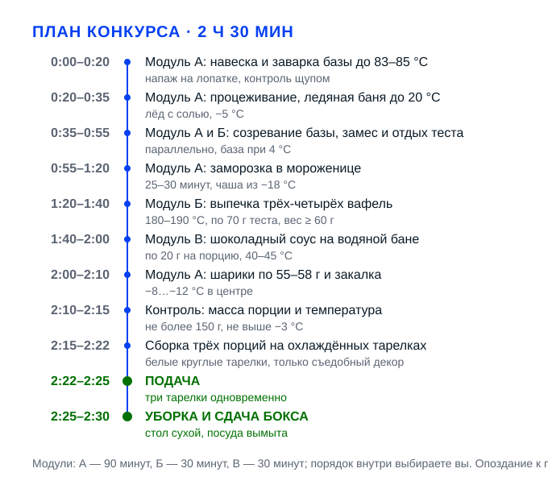
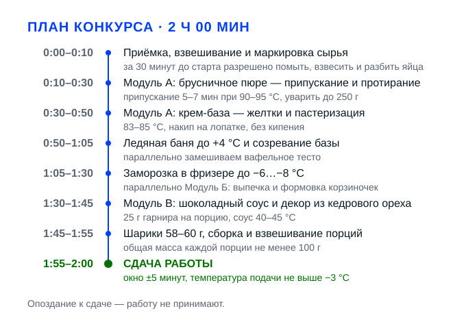
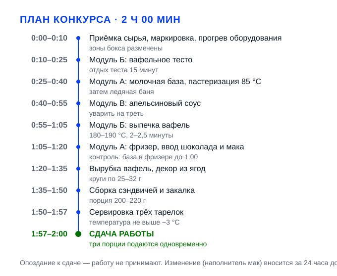

Изготовление мороженого (Р)
Задания ниже — официальные файлы «Абилимпикс» (источник: abilympics-russia.ru), разложенные по категориям. Решения написаны по тексту задания, регламенту и критериям оценки; в них указано, что именно проверяет эксперт.
Школьник
14–16 лет, базовый уровень заданияВыдержка из официального конкурсного задания: страницы, относящиеся к категории «Школьник» (стр. 4–7 источника).
Пошаговое решение
Категория «Школьники» на этой компетенции готовит холодный десерт из натурального сливочного мороженого на венской вафле с шоколадным соусом — три порции, своими руками, без смесей. Модулей три: холодный десерт (90 минут), венские вафли (30 минут) и шоколадный соус (30 минут), итого 2 часа 30 минут, причём время внутри вы распределяете сами. Требования считаются граммами и градусами: шарик мороженого не больше 60 г, вафля не менее 60 г, соус 20 г на порцию, общая масса вафли с шариком и соусом не более 150 г, температура подачи не выше −3 °C, посуда — белая круглая тарелка из инфраструктурного списка. Ошибки здесь стоят дороже всего не в приготовлении, а в расчёте: 62 г вафли, 56 г шарика и 20 г соуса дают 138 г, и это единственный коридор, в который нужно попасть, потому что тридцать предстартовых минут разрешено потратить на навески и проверку оборудования, но не на заготовки.

Задача 1. Принять площадку, продукты и оборудованиеПредстартовая подготовка · 30 минут, вне конкурсного времени
За тридцать минут до старта разрешено подготовить продукты, но не начинать технологический процесс, и эти тридцать минут решают, чем вы будете работать следующие два с половиной часа. Нужно надеть спецодежду, сверить и взвесить каждую позицию из продуктового списка, проверить весы, термощуп, мороженицу, вафельницу, холодильник и морозилку, а также собрать ледяную баню и нарезать пергамент под шарики. Ошибка здесь стоит дороже всего: недомороженная чаша мороженицы или врущие весы всплывут в середине модуля, когда переделывать уже нечего.
Действие 1.1. Войти в бокс и подготовить себя к работе
Шаг 1.1.1
Надеваем полный комплект спецодежды до входа в бокс: куртку или фартук с нарукавниками, одноразовый колпак или косынку, закрытую обувь на нескользящей подошве. Волосы убираем целиком, и спереди, и на затылке, длинные пряди дополнительно закалываем под колпак. Рукава подворачиваем выше локтя: у вафельницы и над кастрюлей с заварной базой длинный рукав цепляется за ручку и тянет кисть к горячему. Часы, кольца, браслеты и длинные серьги снимаем сразу, ногти коротко подстрижены, без лака и покрытия.
Чистая застёгнутая спецодежда и убранные волосы — первая строка санитарного блока оценки, и проверяется она без всяких измерений. Волос в десерте или в тесте — грубое нарушение, после которого вкус уже ничего не исправит. Мороженое на финальном этапе не проходит тепловую обработку, поэтому всё, что попадает в холодную массу, в ней и остаётся: камень из кольца или пыль с рукава — реальный риск, а не формальность.
Попросите волонтёра или наставника осмотреть вас со спины: волос не видно ни спереди, ни сзади, куртка застёгнута на все пуговицы, колпак держится, обувь закрытая и сухая. Рукава заканчиваются выше локтя, украшений на руках нет, фартук чистый.
Классическая ошибка — надеть колпак «на макушку», оставив затылок открытым: спереди аккуратно, а сзади выбиваются волосы, и эксперт видит это при первом подходе. Вторая — прийти в открытой обуви, рассчитывая переобуться «потом»: минуты уйдут из тридцати предстартовых, а балл за спецодежду уже потерян.
Эксперт оценивает внешний вид до старта, а дальше следит, остаётся ли спецодежда чистой по ходу: брызги шоколада на груди и мука на рукавах к середине конкурса тоже считаются.
Шаг 1.1.2
Моем руки тёплой водой с мылом до запястий, не меньше двадцати секунд, проходя большие пальцы, промежутки между пальцами и ногтевые ложа, вытираем одноразовым полотенцем и сразу его выбрасываем. Перчатки надеваем на работе с желтками и шоколадом. Руки моем заново каждый раз, когда переходим от яиц и сырого молока к готовой массе, после уборки, после телефона и после того, как поправили колпак.
Заварная база для мороженого содержит желтки, а соус и декор мы трогаем руками: это готовые к употреблению продукты, которые больше не будут прогреты до безопасной температуры. Поэтому гигиена здесь не «общий балл за аккуратность», а условие допуска: нарушение правил при работе с холодными десертами фиксируется отдельно и снимает баллы независимо от качества блюда.
Руки сухие, использованное полотенце выброшено, а не лежит на столе. Если вы только что разбивали яйца и собираетесь брать шоколад — руки моются заново, даже если они выглядят чистыми: правило «сырое, потом готовое» и есть чек-лист. Перчатки меняются, как только порвались или испачкались.
Самая частая ошибка — протереть руки о фартук: визуально они сухие, но фартук становится переносчиком, и это видно со стороны. Вторая — помыть руки один раз в начале и считать вопрос закрытым; оценивается процесс, а не стартовое состояние.
Эксперт смотрит на руки в течение всей работы и отдельно отмечает, моется ли инвентарь и меняются ли перчатки после контакта с желтками и сырым молоком.
Шаг 1.1.3
Обходим бокс по кругу и размечаем четыре зоны: холодовая (холодильник и морозилка), тепловая (плита, вафельница, место под водяную баню), зона взвешивания (весы, мисочки, лопатки) и зона подачи (тарелки, пергамент, полотенца, соусники). Проверяем, что розетки исправны и не перегружены, стол сухой, мойка свободна, мусорка на месте. Инвентарь раскладываем так, чтобы до каждого предмета был шаг: к весам за конкурс вы подойдёте десятки раз.
КЗ отдельно требует подготовки рабочего места, работы с инвентарём и проверки теплового и иного оборудования — это самостоятельная строка оценки. Практическая сторона важнее: при двух с половиной часах на три модуля каждая лишняя прогулка через бокс — потерянная минута, а мокрая зона взвешивания — испорченные весы и неточные навески.
Пройдите маршрут «весы, плита, мороженица, вафельница, стол подачи» и убедитесь, что ни на одном шаге не нужно обходить человека или переставлять посуду. Стол сухой, розетки свободны, мойка пустая, на полу нет воды.
Свалить всё в кучу у раковины: весы окажутся в зоне брызг, а мисочки под навески придётся искать в общей горе. Вторая ошибка — оставить кабель от вафельницы поперёк прохода: это нарушение техники безопасности, его снимают отдельно.
Эксперт оценивает организацию площадки в первые минуты и возвращается к ней в конце: чистая зона взвешивания и разложенный инвентарь читаются как понимание процесса.
Действие 1.2. Принять и взвесить продукты по списку
Шаг 1.2.1
Сверяем полученный набор с продуктовым списком: полный перечень организатор присылает за день до чемпионата, поэтому вы уже знаете, что именно должно быть в корзине. Каждую позицию ставим на весы и записываем фактический вес рядом с нужным: молоко и сливки меряем стаканом и проверяем по объёму, муку, сахар и шоколад — только на весах, до грамма. Расхождения — недостачу, лишнее, другой процент жирности — отмечаем карандашом прямо в списке.
Навеска — фундамент всех трёх модулей: от неё зависят консистенция базы, плотность вафельного теста и поведение соуса. Если сахара окажется на 30 г меньше, база замёрзнет в ледяную крошку вместо крема; если сливки придут 20%, а не 33%, шарик потечёт уже на тарелке. Пятнадцать минут сверки дешевле, чем переделка модуля на 90 минут.
Все строки списка отмечены, фактический вес каждой позиции записан, расхождения названы вслух наставнику. Отдельно проверьте жирность на упаковках сливок и шоколада: 33% и 70% — цифры, на которые рассчитана технологическая карта.
Начать готовить, не проверив вес, и в середине заварки обнаружить, что сливок всего 150 мл. Вторая ошибка — увидеть недостачу и промолчать «как-нибудь обойдусь»: после старта замена идёт только через главного эксперта и только при уважительной причине.
Эксперт смотрит, сверялся ли участник с перечнем и весами или работал на глаз: точность навески входит в критерий ведения технологического процесса. Точность навески он сверяет с технологической картой, а не с тем, как выглядит горка в миске.
Шаг 1.2.2
Проверяем каждый скоропортящийся продукт. Молоко и сливки — не выше 6 °C по термощупу, срок годности с запасом, упаковка не вздута. Яйца целые, чистые, без трещин. Сливочное масло холодное, без прогорклого запаха и тёмных краёв. Мука сухая, без комков и запаха сырости. Шоколад с ровным изломом и без сладкого белого налёта. Сливки с истёкшим сроком или с признаками скисания отставляем в сторону сразу, до старта.
Из продукта с нарушенной температурой безопасного холодного десерта не сделать: мороженое не проходит финальную тепловую обработку, и всё, что развилось в сливках, останется в шарике. На чемпионате это вопрос не только качества, но и допуска — дегустация предполагает безопасное блюдо, и эксперт вправе снять модуль при работе с испорченным продуктом.
По каждому молочному продукту проверяем три вещи: температуру, запах, внешний вид. Сомневаетесь — откладываете и идёте к эксперту до старта, а не «перерабатываете» в массу. Шоколад с белым налётом не испорчен, но в соусе может дать крупинки.
Взять тёплые сливки «на вид нормальные»: внешне они неотличимы, а температура уже нарушена, взбивание такой базы даст расслоение. Вторая ошибка — выбросить испорченный продукт молча: замену не принесут, и ключевого ингредиента не будет.
Эксперт проверяет органолептику и температуру при приёмке, а затем смотрит, как хранится сырьё в течение конкурса: молочка, простоявшая на столе до середины работы, типичная потеря баллов.
Шаг 1.2.3
В разрешённые тридцать минут до старта делаем только то, что КЗ разрешает: моем и обсушиваем продукты, отвешиваем навески в отдельные мисочки, разбиваем яйца и отделяем белки от желтков, проверяем наличие всего заказанного. Ничего не смешиваем, не завариваем и не замешиваем. Каждую мисочку подписываем или ставим в известном порядке: мука, сахар, желтки, сливки, шоколад.
Граница между «подготовил продукты» и «сделал заготовку» проходит именно по смешиванию: навески и разделённые желтки разрешены, готовое тесто или сваренная база — уже заготовка, за которую работу могут не оценить. Разложенные навески экономят в модулях десять-пятнадцать минут, а на девяноста минутах модуля А это ровно разница между спокойной заморозкой и гонкой.
На столе стоят отдельные мисочки с подписанными навесками, желтки в одной, белки в другой, продукты вымыты и обсушены. Ни одна ёмкость не содержит смеси из двух и более компонентов, список закрыт полностью.
Замешать тесто дома или до старта «чтобы сэкономить время» — прямое нарушение, такой модуль не оценивается. Вторая ошибка — растереть желтки с сахаром заранее: формально это уже заготовка, а кроме того, растёртые желтки подсыхают по краям и дают крупинки.
Эксперт проверяет, что до старта технологический процесс не начат: готовое тесто или сваренная база в боксе — основание для снятия модуля. Отдельно он смотрит, не начата ли заварка базы до старта: пар над кастрюлей в первые минуты конкурса — верный признак нарушения.
Действие 1.3. Проверить весы, щуп и оборудование
Шаг 1.3.1
Проверяем весы: включаем, ждём выхода на ноль, ставим пустую мисочку и нажимаем «тара», затем проверяем точность подручным способом — гирькой из инфраструктурного листа или повторным взвешиванием одной и той же навески, результат должен совпасть до грамма. Термощуп проверяем в двух точках: в стакане с ледяной водой (около 0 °C) и в кипящей воде (около 100 °C, с поправкой на высоту). Расхождение больше 2 °C — повод позвать эксперта до старта.
Все ограничения этого задания измеряются граммами и градусами: шарик максимум 60 г, вафля не менее 60 г, соус 20 г на порцию, общая масса не более 150 г, температура подачи не выше −3 °C. Если весы врут на 5 г, вы узнаете об этом на контрольном взвешивании, когда переделывать нечего, а если щуп завышает — переморозите шарик или подадите мягкий.
Два взвешивания одной навески дают одинаковый результат, тара сбрасывается в ноль. Щуп показывает 0 ± 1 °C в ледяной воде и 98–100 °C в кипящей, экран читается, батарейка не разряжена. Проверку лучше сделать дважды: до навесок и перед закладкой базы в мороженицу, потому что после мытья стола весы иногда сбиваются.
Работать без тарирования и каждый раз вычитать вес мисочки в уме: верный путь к ошибке на 30–50 г. Вторая ошибка — проверить щуп один раз и не перепроверять: в ледяной бане прибор запотевает и начинает врать.
Эксперт смотрит, тарируются ли весы и измеряется ли температура прибором, а не на глаз: измерения — часть критерия ведения технологического процесса. Он также отмечает, записывает ли участник результаты взвешивания или держит их в голове.
Шаг 1.3.2
Собираем мороженицу: чашу-аккумулятор достаём из морозилки — она должна стоять там не меньше двенадцати часов, иначе база не замёрзнет; проверяем, что чаша сухая и без трещин, вставляем в корпус, ставим лопатку-мешалку и делаем пустой прогон на 30–60 секунд, чаша должна вращаться легко, без скрипа. Вафельницу включаем на прогрев минимум на десять минут до 190 °C, проверяем, что покрытие не поцарапано. Холодильник и морозилку сверяем по встроенному термометру: 2–4 °C и −18 °C.
Половина провалов на этой компетенции связана не с рецептурой, а с неподготовленным оборудованием: недостаточно промороженная чаша даёт жидкую кашу вместо шарика, а холодная вафельница — бледную вафлю, которая ломается при переносе. Проверка занимает пять минут и делается до старта, потому что после старта эти минуты уже входят в девяносто минут модуля А.
Чаша на ощупь обжигающе холодная, внутри сухо, лопатка вращается свободно. Вафельница вышла на режим: индикатор готовности горит, капля воды на поверхности шипит и испаряется за секунду. В морозилке −18 °C или ниже, в холодильнике не теплее 4 °C.
Достать чашу из морозилки в начале конкурса и обнаружить, что она тёплая: заморозка не начнётся, и девяносто минут модуля А уйдут в пустоту. Вторая ошибка — печь на непрогретой вафельнице: первая вафля прилипает, рвётся и уходит в мусор.
Эксперт отмечает, проверено ли оборудование до старта, и фиксирует нарушения техники безопасности при работе с горячей вафельницей и плитой. Если мороженица собрана неправильно, это видно ещё до старта, и замечание засчитывается как организационная ошибка.
Шаг 1.3.3
Готовим ледяную баню заранее: в широкий контейнер кладём лёд, наливаем воду так, чтобы она закрывала лёд, и добавляем две-три столовые ложки соли — такая смесь держит около −5 °C и охлаждает базу в два-три раза быстрее. Рядом ставим сухие полотенца, пергамент, нарезанный квадратами 12 на 12 см под шарики, и чистые соусники. Мисочки, лопатки и венчик держим в зоне взвешивания, нож и доску у стола, тарелки для подачи в холодильнике.
Ледяная баня не украшение, а инструмент: заварную базу нужно снять с 85 до 20 °C в первые минуты, иначе в ней размножаются бактерии и она теряет способность держать воздух. Соль во льду опускает температуру смеси ниже нуля, охлаждение идёт быстрее, чем в холодильнике, и вы выигрываете десять-пятнадцать минут на созревание массы.
Лёд не всплыл одним куском, вода солёная и очень холодная, на стенках контейнера иней. Пергамент нарезан по числу шариков — минимум шесть квадратов, три на подачу и три в запас. Соусники чистые и сухие.
Охлаждать базу просто в холодильнике: 600 г массы остывают до 20 °C больше часа, и модуль А разваливается по времени. Вторая ошибка — поставить горячую кастрюлю в лёд и не мешать: у стенок схватывается плёнка, а в центре масса остаётся тёплой.
Эксперт видит, продумана ли последовательность: баня, пергамент и подписанные мисочки говорят о том, что участник представляет процесс до конца. Ледяная баня, собранная заранее, для него прямой признак продуманного плана на все 150 минут.
Задача 2. Сварить и заморозить базу мороженогоМодуль А · 90 минут на холодный десерт
Модуль А занимает девяносто минут и даёт главный результат задания: три шарика холодного десерта из натурального сливочного мороженого, каждый не больше 60 г, с температурой подачи не выше −3 °C. Смесями пользоваться нельзя, поэтому мороженое делается с нуля: молочно-сливочная смесь с желтками заваривается до 83–85 °C, охлаждается в ледяной бане, зреет и замораживается в мороженице. Внутри этих девяноста минут вы сами распределяете время, и выигрывает не тот, кто быстрее мешает, а тот, кто поставил базу остывать прежде, чем взялся за вафли.
Действие 2.1. Отвесить базу и подготовить посуду
Шаг 2.1.1
Отвешиваем молоко и сливки в одну кастрюлю: 300 мл молока жирностью 3,2% и 200 мл сливок 33%. Сливки перед этим встряхиваем в упаковке, чтобы жир не отделился на стенках, и выливаем в кастрюлю полностью, а не «на глаз». Кастрюлю берём с толстым дном и светлой внутренней поверхностью: на тонком дне желтковая смесь пригорает за секунды, а светлое дно нужно, чтобы видеть цвет массы.
Соотношение 300 к 200 даёт базу с жирностью около 15%, и это ровно тот диапазон, в котором мороженое остаётся кремовым после заморозки: на меньшем жире шарик получается ледяным и колким, на большем — слишком тяжёлым и медленно тает на тарелке. Ошибка в объёме сдвигает весь расчёт по сахару и, значит, температуру замерзания.
На весах или в мерном стакане получилось ровно 300 и 200 мл, на стенках кастрюли нет комков сливочного жира, смесь однородного белого цвета без хлопьев. Заодно проверьте, что кастрюля подходит по объёму: 500 мл смеси в кастрюле на два литра греются ровно, а в кастрюле на шесть литров тонкий слой пригорает у стенок.
Взять сливки «на глаз» и долить молоком до нужного объёма: жирность падает, и шарик начинает таять уже через две минуты после выкладки. Вторая ошибка — не встряхнуть упаковку сливок: часть жира остаётся на стенках, и база получается обезжиренной.
Эксперт проверяет навеску по технологической карте: несоответствие объёма видно и по выходу базы, и по тому, как масса ведёт себя в мороженице. Соотношение молока и сливок он тоже сверяет по карте, потому что от него зависит жирность шарика.
Шаг 2.1.2
Отвешиваем 90 г сахара, 8 г ванильного сахара и 1 г соли. Желтки четырёх яиц (около 72 г) кладём в отдельную миску, добавляем к ним половину сахара и растираем венчиком или лопаткой до состояния светлой массы, когда крупинок больше не чувствуется и смесь стекает с лопатки лентой. Соль и ваниль добавляем к сухому сахару сразу, а не в горячее молоко: так они распределяются равномерно.
Сахар в базе не только для вкуса: он понижает температуру замерзания воды, и именно от него зависит, будет шарик пластичным или превратится в лёд. Растёртые с сахаром желтки не сворачиваются при вливании горячей смеси, потому что сахар частично защищает белки, а соль и ваниль в сухой навеске не дают комков в готовой массе.
Желтковая масса посветлела до кремового оттенка, крупинок сахара на языке нет, объём вырос примерно в полтора раза. Навески сахара, соли и ванили стоят рядом и подписаны. Отдельно убедитесь, что в желтках не осталось ни капли белка: даже небольшая его часть даёт при заварке белые хлопья, которые видны на срезе шарика.
Растирать желтки с сахаром заранее, до старта: это уже заготовка. Вторая ошибка — всыпать весь сахар сразу в желтки и оставить на десять минут: на дне образуется сироп, и при нагреве он даст крупинки карамели в мороженом.
Эксперт смотрит на порядок навесок и на то, разделены ли белки и желтки: белок в базе даёт хлопья и привкус омлета, и это видно по текстуре шарика. Ещё он смотрит, не осталось ли в миске с желтками осколков скорлупы после разбивания яиц.
Шаг 2.1.3
Собираем рабочее место под заварку: кастрюля с молоком и сливками, рядом миска с растёртыми желтками, венчик, силиконовая лопатка с плоским краем, термометр на прищепке или ручной щуп, полотенце под горячую посуду и пустая холодная ёмкость для процеживания. Лопатку кладём так, чтобы её можно было взять мокрой рукой не глядя, а щуп держим наготове с самого начала, а не ищем в момент, когда масса уже греется.
Заварная база проходит очень узкий температурный коридор: до 70 °C масса ещё не загустела, а после 88 °C желток сворачивается и даёт омлетные хлопья. Держать щуп в руке и мешать одновременно невозможно, поэтому прищепка или помощник-подставка решают дело; готовая холодная ёмкость нужна, чтобы перелить массу одним движением и не держать её горячей лишние минуты.
Все четыре предмета — венчик, лопатка, щуп, полотенце — в пределах вытянутой руки, холодная ёмкость пустая и сухая. Плита свободна, ничто не мешает поставить кастрюлю и рядом контейнер со льдом. Лопатка должна быть сухой, иначе первая же порция базы заберёт с неё воду и пойдёт хлопьями при заварке.
Искать щуп в ящике, когда масса уже на огне: тридцать секунд промедления при 85 °C превращают крем в хлопья. Вторая ошибка — процеживать в горячую или мокрую посуду: вода разбавляет базу, а горячая стенка не даёт начать быстрое охлаждение.
Эксперт оценивает готовность рабочего места к самому ответственному переходу модуля: расставленный инструмент читается как понимание технологии. Отдельно он отмечает, стоит ли рядом холодная ёмкость: без неё база остывает медленно и теряет гладкость.
Действие 2.2. Заварить желтковую базу до 85 °C
Шаг 2.2.1
Ставим кастрюлю с молоком и сливками на средний огонь и греем, помешивая лопаткой по дну, до 65–70 °C. Проверяем щупом и пальцем над поверхностью: пар идёт, но масса не бурлит, по краям появляются первые мелкие пузыри. Снимаем с огня до закипания, не доводя до бурного кипения ни в одной точке. Мешаем не кругами по центру, а восьмёркой с захватом стенок и дна: так молочные белки не оседают, а масса прогревается равномерно по всему объёму.
Горячая молочная смесь нужна, чтобы желтки начали завариваться постепенно, без температурного шока. Если влить холодное молоко в желтки, ничего не заварится, а если дать смеси закипеть, белки молока дадут пенку и пригоревший слой на дне — оба случая заканчиваются хлопьями уже на следующем шаге.
Щуп показывает 65–70 °C в центре и у стенки, на поверхности лёгкий пар, пузырей нет, запах молочный без горелого. Стенки кастрюли чистые, налёта на дне не появилось. Если появилась пенка, снимите её шумовкой, прежде чем вливать смесь в желтки: пенка потом всплывёт в мороженом белесыми комочками.
Греть на максимуме «чтобы быстрее»: у стенки молоко перегревается раньше, чем прогревается центр, и пригорает. Вторая ошибка — не мешать вообще: молочные белки оседают на дно тонким слоем и пригорают уже при 80 °C.
Эксперт обращает внимание на приёмы тепловой обработки: аккуратный нагрев без кипения — признак того, что участник понимает, что делает. Он также смотрит, держится ли щуп в смеси, а не лежит на столе: без измерения режим держать невозможно.
Шаг 2.2.2
Снимаем кастрюлю с огня и вливаем горячую смесь в растёртые желтки тонкой струйкой, непрерывно работая венчиком по всей миске: сначала 3–4 столовые ложки, размешиваем до однородности, потом ещё столько же, и только после этого — весь остаток. Миску с желтками держим на сложенном полотенце, чтобы она не скользила по столу. Венчик держим почти касаясь дна: так масса перемешивается по всему объёму, а не только по поверхности.
Это темперирование, и оно единственная защита от свернувшегося желтка. Желток сворачивается примерно при 70 °C, но в смеси с сахаром и при постоянном перемешивании выдерживает 85 °C; если влить всё горячее сразу, локально температура превысит предел, и в базе останутся крупинки, которые потом забьют сито.
Масса однородная, глянцевая, без белых или жёлтых крупинок, температура миски на ощупь тёплая, а не горячая. Проведите лопаткой по дну: никаких сгустков не остаётся. Если крупинки всё же появились, массу не выбрасывают: процедите её через два слоя марли или частое сито, и база останется пригодной, просто чуть менее густой.
Влить всю горячую смесь одним движением: у стенок миски желток свернётся хлопьями, и процеживать придётся через частое сито, теряя густоту. Вторая ошибка — мешать только по центру и не захватывать края, где желток и оседает.
Эксперт смотрит на технику темперирования: тонкая струйка и непрерывное движение венчиком — то, что отличает аккуратную базу от омлета. Отдельно он отмечает, насколько ровно участник держит струйку: рывками — значит, темперирование не освоено.
Шаг 2.2.3
Возвращаем смесь в кастрюлю и варим на слабом огне, непрерывно мешая лопаткой по дну и углам, до 83–85 °C. Готовность проверяем двумя способами: щупом и напажем — обмакиваем лопатку, проводим по плёнке пальцем, след должен остаться чётким и не заплывать. Как только признаки совпали, немедленно снимаем кастрюлю с огня. Огонь на этом шаге должен быть именно слабым: сильный жар даёт быстрый подъём температуры, и пропустить 85 °C становится делом одной секунды.
Именно на этом шаге база превращается из молочной смеси в крем и одновременно пастеризуется: 83–85 °C убивает основную микрофлору, а желточные белки связывают воду и жир. Недоваренная база жидкая и не держит воздух, переваренная — с хлопьями и привкусом омлета; между этими состояниями меньше пяти градусов.
Плёнка на лопатке держится, след от пальца не заплывает за две-три секунды, щуп показывает 83–85 °C, масса слегка потемнела и стала шелковистой. На дне лопаткой не поднимается ничего похожего на омлет.
Ждать «пока погустеет посильнее»: при 88–90 °C белок сворачивается, и база расслаивается на хлопья и сыворотку — восстановить её уже нельзя. Вторая ошибка — варить на среднем огне без перемешивания у дна: пригоревший слой даёт горький привкус, который в мороженом слышен отчётливо.
Эксперт подходит в момент заварки и смотрит на температуру и на то, снята ли кастрюля сразу после достижения режима: промедление здесь стоит текстуры всего десерта.
Действие 2.3. Охладить базу и дать ей созреть
Шаг 2.3.1
Сразу после снятия с огня процеживаем базу через мелкое сито в холодную сухую ёмкость, проходя сито лопаткой, а не ложкой: лопатка прижимает массу к сетке и проталкивает густую часть. Ёмкость должна быть широкой и неглубокой — чем больше площадь поверхности, тем быстрее охлаждение. Сито и ёмкость ополаскиваем холодной водой и вытираем насухо заранее, до начала заварки.
Процеживание убирает случайные сгустки, частицы ванили и плёнку, которая всегда образуется у стенок. Широкая ёмкость — это про безопасность: масса от 85 до 20 °C в глубокой кастрюле идёт больше часа, а в зоне риска от 60 до 20 °C бактерии размножаются быстрее всего.
На сите не осталось заметного слоя, база однородная, кремового цвета, без точек и хлопьев. Ёмкость сухая, вода в базу не попала. Отдельно посмотрите на цвет: он должен быть ровным, кремовым, без серых или желтоватых разводов, которые говорят о расслоении жира. Если на сите остались заметные комочки, значит, заварка шла с перегревом.
Процеживать горячую базу в горячую кастрюлю, где она стояла: смысл процедуры теряется, а охлаждение начинается на десять минут позже. Вторая ошибка — тереть сито ложкой и продавливать хлопья в массу: они потом читаются на языке как крупинки.
Эксперт видит, процежена ли база: чистый цвет и отсутствие точек на срезе шарика — прямой признак аккуратности. Кроме цвета, он смотрит на посуду: сухая ли она и не осталось ли в ней капель воды, потому что вода в базе даёт ледяные кристаллы при заморозке.
Шаг 2.3.2
Ставим ёмкость с базой в ледяную баню так, чтобы вода не поднималась выше края, и мешаем лопаткой каждые две-три минуты, снимая массу со стенок к центру. Задача — снять с 85 до 20 °C за десять-пятнадцать минут, дальше до 4–8 °C можно довести в холодильнике. В баню добавляем лёд по мере таяния: вода должна оставаться ледяной всё время охлаждения. Термометр опускаем в центр, а не к стенке: у стенки масса остывает быстрее, и показания будут заниженными.
Быстрое охлаждение — обязательное требование технологии, а не ускорение: в тёплой базе продолжается рост микрофлоры и разрушается эмульсия жира. Кроме того, быстро охлаждённая масса даёт более мелкий кристалл при заморозке, и шарик получается гладким, а не зернистым.
Щуп показывает 20 °C или ниже, стенки ёмкости холодные, на поверхности нет слоя застывшего жира. Если провести лопаткой по дну, масса стекает ровно, без комков. На ложке не должно оставаться маслянистого следа: если он есть, эмульсия начала разрушаться, и базу надо быстро перемешать венчиком.
Оставить ёмкость на столе «пусть остынет само»: сорок минут простоя при 40 °C — это и риск по санитарии, и потеря времени из девяноста минут модуля А. Вторая ошибка — не мешать: у стенок образуется плотная плёнка, а центр остаётся тёплым.
Эксперт проверяет температуру базы перед закладкой в мороженицу: тёплая масса не взбивается и замерзает крупными кристаллами. Он также проверяет, не стоит ли ёмкость с базой рядом с горячей плитой: тёплый воздух сводит на нет всё охлаждение.
Шаг 2.3.3
Переставляем ёмкость в холодильник на созревание: минимум двадцать-сорок минут при 2–4 °C, а в идеале четыре-двенадцать часов, если позволяет регламент. Пока база зреет, занимаемся вафельным тестом и шоколадным соусом — это и есть главный резерв времени. Перед закладкой в мороженицу пробуем базу с ложки и запоминаем вкус: он должен быть чуть слаще, чем хочется, потому что на холоде сладость чувствуется слабее.
Созревание — этап, на котором жир кристаллизуется, а белки связывают воду; именно поэтому зрелая база взбивается в гладкий крем, а свежая сварилась и сразу залитая даёт крупные льдинки. Двадцать-сорок минут в конкурсных условиях дают большую часть эффекта, и тратить их впустую нельзя: это время уходит на вафли, а не на ожидание.
База охлаждена до 4–8 °C, по консистенции напоминает жидкий крем, вкус ровный, сладкий с оттенком ванили, без привкуса яйца и без солёности. На поверхности нет свободного жира. Плотность проверяется ложкой: база должна стекать медленно, оставляя на поверхности след, который исчезает за пару секунд.
Заливать в мороженицу тёплую базу: она не взобьётся, а превратится в сладкий лёд с прослойками. Вторая ошибка — пробовать базу и «исправлять» её сахаром уже после охлаждения: сахар в холодной массе не растворяется и хрустит на зубах.
Эксперт может попробовать базу до заморозки: чистый молочный вкус без яичного привкуса — признак того, что заварка и созревание прошли правильно. Вкус базы до заморозки — единственная возможность что-то поправить: после заморозки вкус уже не изменить.
Действие 2.4. Заморозить базу в мороженице
Шаг 2.4.1
Достаём промороженную чашу из морозилки, ставим в корпус, вставляем мешалку и включаем мотор. Заливаем базу тонкой струёй через край, заполняя чашу не больше чем наполовину: массе нужно место, чтобы увеличиться в объёме и не выплеснуться через край. Температура базы в момент заливки — не выше 8 °C, объём 600–620 г ровно под такую чашу. Крышку закрываем сразу после заливки, иначе масса начнёт выдавливаться через край при первом обороте мешалки.
Мороженица работает за счёт теплоотдачи в стенку: если залить чашу до краёв, верхний слой останется тёплым и не замёрзнет, а мешалка начнёт буксовать. Половина объёма — это не осторожность, а физика процесса, и она же даёт равномерный мелкий кристалл, от которого зависит гладкость шарика.
Чаша заполнена не выше половины, база стекает с ложки ровной лентой, мотор вращается ровно. Через минуту после включения на стенках уже виден тонкий слой схватившейся массы. Если на стенке чаши не появилось схватившегося слоя за первую минуту, чаша недостаточно проморожена — проверьте её ещё раз, прежде чем терять двадцать пять минут.
Залить базу в тёплую чашу, которую достали из морозилки десять минут назад: заморозка не пойдёт, и вы получите холодный крем вместо мороженого. Вторая ошибка — залить до краёв и потом собирать выплеснувшуюся массу со стола.
Эксперт смотрит, проморожена ли чаша и соблюдён ли объём: работа с полной чашей — типичная ошибка новичков на этой компетенции. Если участник заливает чашу выше половины, эксперт видит это сразу и отмечает как ошибку технологического процесса.
Шаг 2.4.2
Взбиваем 25–30 минут, не открывая крышку без необходимости. Ориентир готовности — масса выросла в объёме, держит след от мешалки, а мотор начал работать тяжелее и лопатка проходит с усилием. В этот момент мороженое имеет температуру около −6…−8 °C и консистенцию мягкого мороженого. Если машина с таймером — ставьте двадцать пять минут и проверяйте на двадцатой.
Недомороженная масса не держит форму и расплывается в шарике, перемороженная — начинает комковаться и налипать на мешалку, и тогда её уже не сформировать ложкой. Граница здесь измеряется не минутами, а состоянием массы, поэтому смотреть надо на поверхность и на звук мотора, а не только на часы.
Объём вырос примерно в полтора раза, поверхность матовая, след от мешалки не заплывает, масса собирается в комок и не стекает со лопатки. Вкус — сливочный, холодный, без ледяной воды на языке. Отдельно следите за звуком мотора: ровное гудение — норма, а натужное с рывками означает, что масса уже переморожена.
Взбивать до «совсем твёрдого» в надежде, что шарик будет крепче: перемороженная масса крошится и не набирается ложкой. Вторая ошибка — открывать крышку каждые две минуты проверять: тёплый воздух замедляет заморозку и добавляет крупный кристалл.
Эксперт фиксирует состояние массы в момент выгрузки: гладкая, матовая, держащая форму масса — критерий качества заморозки. Он подходит к мороженице в середине заморозки и смотрит, не открыта ли крышка и не стоит ли рядом горячая посуда.
Шаг 2.4.3
Выгружаем мороженое в охлаждённый контейнер, разравниваем лопаткой, закрываем крышкой или плёнкой в контакт и убираем в морозилку на двадцать-тридцать минут для домораживания до −15…−18 °C. Контейнер ставим в холодную зону, а не на дверцу. Пока мороженое домораживается, заканчиваем вафли и соус — это те самые минуты, которые делают подачу спокойной.
После мороженицы масса слишком мягкая, чтобы ложка дала ровный шар: она сминается и тянется. Домораживание двадцать-тридцать минут при −18 °C даёт плотность, при которой шарик формуется одним движением и держится на вафле до подачи, а внутри остаётся кремовым, а не ледяным.
Мороженое держит форму горки, ложка входит с усилием, но не скрипит, как по льду. Температура в центре по щупу −10…−15 °C, поверхность не покрыта инеем. Если мороженое уже схватилось коркой сверху, а внутри ещё мягкое, перемешайте его ложкой и верните в морозилку на десять минут: текстура выровняется.
Держать мороженое в мороженице до последней минуты и выгружать прямо перед подачей: оно не успеет схватиться, шарик поплывёт на тарелке. Вторая ошибка — оставить контейнер открытым: поверхность заветривается и покрывается ледяной коркой.
Эксперт смотрит текстуру на срезе шарика: однородная, без ледяных кристаллов и без комков жира. Он также обращает внимание, в чём мороженое доводится до готовности: холодный контейнер с крышкой считается правильным, открытая миска в общей камере — нет, потому что мороженое впитывает посторонние запахи.
Задача 3. Замесить тесто и испечь три венские вафлиМодуль Б · 30 минут на венские вафли
Модуль Б — тридцать минут и три венские вафли, каждая весом не менее 60 г. Вафля здесь не гарнир, а основа подачи: на неё ложится шарик, и от её прочности и веса зависит, выдержит ли порция перенос на стол эксперта. Тридцать минут включают замес, пятнадцать минут отдыха теста и выпечку трёх-четырёх вафель по три-пять минут, поэтому тесто замешивается первым делом — пока зреет база мороженого и греется вафельница.
Действие 3.1. Замесить вафельное тесто
Шаг 3.1.1
Отвешиваем сухую часть: 200 г муки, 50 г сахара, 5 г разрыхлителя, 2 г соли и 8 г ванильного сахара. Муку просеиваем через сито прямо в миску — это не формальность, а способ разбить комки и насытить тесто воздухом. Добавляем разрыхлитель, соль и оба сахара к муке и перемешиваем сухим венчиком тридцать секунд, чтобы всё распределилось до того, как появится жидкость.
Разрыхлитель и соль должны встретиться с мукой в сухом виде: если всыпать их в жидкую часть, они начнут работать раньше времени, и к моменту выпечки тесто потеряет часть подъёмной силы. Просеивание даёт равномерную гидратацию муки, и вафля получается ровной по толщине, без сухих пятен внутри.
Сухая смесь однородная, комков нет, на ощупь рассыпчатая. Навески сходятся с расчётом: 200, 50, 5, 2 и 8 г — это то, из чего выйдет около 700 г теста и 6–7 вафель, то есть запас на две неудачные. Сухую смесь удобно перемешивать венчиком в широкой миске: так она не сбивается в комки у стенок.
Всыпать разрыхлитель в готовое тесто в конце: он начнёт шипеть, но распределится неравномерно, и вафля поднимется пузырями с одной стороны. Вторая ошибка — не просеять муку: комки потом не разойдутся и останутся плотными точками.
Эксперт смотрит на точность навесок и порядок смешивания: сухие с сухими, жидкие с жидкими — базовое правило, по которому видно обученность. Отдельно он отметит, тарированы ли весы: точность навесок проверяется по факту, а не на слово.
Шаг 3.1.2
В отдельной миске соединяем два яйца (около 100 г) и 250 мл молока, размешиваем венчиком до однородности, без долгого взбивания. Сливочное масло 90 г растапливаем в сотейнике или в микроволновке до жидкого состояния при 60–70 °C, даём ему полминуты остыть и вливаем в яично-молочную смесь тонкой струйкой при помешивании. Масло должно быть тёплым, но не кипящим.
Венское тесто держится на жире: при 90 г масла вафля остаётся хрустящей и не размокает под шариком мороженого. Если влить кипящее масло, яйцо схватится хлопьями; если масло холодное и не растопилось полностью, в тесте останутся крупинки, которые при выпечке дадут масляные пятна и неровный цвет.
Смесь однородная, кремово-жёлтая, без плавающих капель жира и без хлопьев. На поверхности после размешивания остаётся мелкая пена, которая быстро оседает. Если масло свернулось хлопьями, смесь уже испорчена: яйцо сварилось, и такую жидкость нельзя соединять с мукой, потому что вафля получится плотной и с белыми вкраплениями.
Влить масло одним движением в холодную смесь: оно застынет плёнкой и будет плавать сверху. Вторая ошибка — взбивать яйца с молоком в пышную пену: пузыри лопнут в вафельнице, и вафля получится с крупными пустотами.
Эксперт обращает внимание на температуру масла и на отсутствие хлопьев: это признак того, что участник понимает, зачем нужно темперировать жир. Он смотрит, как участник обращается с горячим маслом: сотейник на полотенце, а не на мокрый стол.
Шаг 3.1.3
Соединяем сухую и жидкую части: выливаем жидкость в муку и мешаем венчиком или лопаткой тридцать-сорок секунд, только до исчезновения сухой муки. Тесто должно стекать с венчика густой лентой, как очень густые сливки, и оставлять на поверхности след, который заплывает за две-три секунды. Накрываем миску полотенцем и оставляем на пятнадцать-двадцать минут при комнатной температуре.
Долгое вымешивание развивает клейковину, и вафля получается резиновой вместо хрустящей; короткое перемешивание оставляет тесто нежным. Отдых нужен, чтобы мука набрала воду и разрыхлитель начал работать: без отдыха вафля рвётся при съёме, а с отдыхом держит форму и отходит от формы целиком.
Тесто гладкое, без комков, стекает лентой, а не льётся струёй. Через пятнадцать минут оно слегка загустело и на поверхности появились мелкие пузырьки. Проверить консистенцию можно и так: поднимите венчик и посмотрите, как тесто стекает. Если оно падает куском, добавьте столовую ложку молока, если течёт струёй — столовую ложку муки.
Мешать «до гладкости» пять минут миксером: клейковина разовьётся, и вафля станет жёсткой. Вторая ошибка — печь сразу после замеса: тесто не отдохнуло, вафля получается бледной и ломкой по краям. Менее заметная ошибка — не накрыть миску: сверху тесто подсыхает плёнкой, и эти сухие кусочки потом видны в вафле светлыми точками.
Эксперт проверяет консистенцию теста: слишком густое выдаёт недолитое молоко, слишком жидкое — переизбыток жидкости, и в обоих случаях вафля не наберёт вес.
Действие 3.2. Выпечь вафли на вафельнице
Шаг 3.2.1
Выводим вафельницу на режим: включаем и ждём десять минут, пока индикатор готовности не загорится, рабочая температура — 180–190 °C. Проверяем нагрев каплей воды: она должна зашипеть и испариться за секунду. Первую закладку делаем по тонкой смазке кистью: масло наносим на обе поверхности и даём минуту прогреться, дальше смазывать не нужно, жира в тесте достаточно.
Непрогретая вафельница — главная причина первой испорченной вафли: тесто прилипает к холодной поверхности и разрывается при открывании. Слишком горячая форма даёт горелую корочку при сыром центре. Тонкая смазка только для первой закладки нужна потому, что дальше масло из теста само покрывает форму, а лишний жир делает вафлю жирной на ощупь.
Индикатор горит, капля воды шипит, форма равномерно горячая по всей площади, без тёмных и светлых зон. Крышка закрывается плотно, без перекоса. Заодно проверьте, не шатается ли вафельница на столе и не задевает ли её кабель: при закрывании крышки прибор не должен сдвигаться, иначе вафля получится неравномерной по толщине.
Печь на непрогретой форме: первая вафля прилипает, рвётся и уходит в мусор, а времени на неё уходит пять минут из тридцати. Вторая ошибка — щедро смазать форму маслом: вафля получается жирной и не хрустит.
Эксперт фиксирует температуру и режим: работа на непрогретом оборудовании — типичная потеря времени в модуле Б. Отдельно он отмечает, выведен ли режим именно на 180–190 °C: на глаз это видно по капле воды, а по прибору — по индикатору, и оба признака должны совпасть.
Шаг 3.2.2
Наливаем в центр формы 70–72 г теста — ровно столько, чтобы после выпечки получилась вафля весом 62–66 г. Тесто распределяем половником или ложкой по центру и сразу закрываем крышку, прижимая до упора. Первые две минуты крышку не открываем вообще, дальше смотрим на пар: пока из щелей идёт интенсивная струя, вафля ещё влажная, как только пар ослаб — можно проверять. Общее время 3–5 минут.
Вес 70–72 г сырого теста выбран не случайно: при выпечке уходит 8–12% влаги, и на выходе остаётся 62–66 г, то есть выше обязательного минимума 60 г, но с запасом, который не выводит общую массу порции за 150 г. Открытая раньше времени крышка рвёт ещё не схватившуюся вафлю: верхний слой прилипает к форме и остаётся на ней.
Пар из щелей ослаб, вафля отошла от формы по краям, цвет золотисто-коричневый по всей площади, без бледных участков. При открывании крышка идёт легко, вафля остаётся на нижней половине, а не на верхней.
Открыть крышку через минуту: половина вафли останется на форме, и вы получите рваную половинку весом граммов сорок. Вторая ошибка — налить тесто «на глаз» с горкой: излишек вытекает через край, горит на форме и даёт запах гари на весь бокс.
Эксперт смотрит на цвет и толщину: равномерная золотистая поверхность с выраженным рисунком — то, что ожидают увидеть на подаче. На подаче он смотрит на рисунок: чёткие грани и ровная толщина говорят о том, что тесто налито в нужном количестве.
Шаг 3.2.3
Снимаем вафлю вилкой или лопаткой, поддевая по краю, и сразу перекладываем на решётку, а не на тарелку. Тут же заливаем следующую порцию теста, не давая форме остыть: пока печётся одна, вы успеваете отвесить следующие 70 г. Всего печём четыре-пять вафель — три на подачу и одну-две в запас на случай, если что-то пойдёт не так при съёме или подравнивании.
Решётка нужна, чтобы пар уходил снизу: на тарелке вафля отсыревает за минуту и перестаёт хрустеть. Запасные вафли — не расточительность: при обрезке краёв вес падает, а требование КЗ — не менее 60 г на вафлю, и заменить неудачную нужно быстро, пока форма горячая.
Вафля держит форму, не гнётся при подъёме вилкой, на решётке не выделяется конденсат. Следующая закладка идёт в ту же минуту, форма не успевает остыть. Отдельно проверьте, не прилипают ли края к форме после съёма: если на форме остаются кусочки, её надо протереть и слегка смазать перед следующей закладкой.
Складывать готовые вафли стопкой: они отсыревают друг от друга и слипаются. Вторая ошибка — печь только три вафли и не иметь запаса: одна порванная при съёме вафля оставляет вас с двумя порциями из трёх.
Эксперт видит, есть ли у участника запас: работа без резервной вафли часто заканчивается недобором по весу на подаче. Он также отмечает, сколько вафель испечено: три готовых плюс запас читаются как продуманный расчёт, три без запаса — как риск, который не оправдали.
Действие 3.3. Остудить, взвесить и подровнять вафли
Шаг 3.3.1
Даём вафлям постоять на решётке две-три минуты, чтобы вышел пар и корочка стала хрупкой. Не накрываем, не перекладываем на тарелку и не ставим в холодильник: перепад температур даст конденсат. За это время форма продолжает работать — печём следующую вафлю, а остывшую откладываем в сторону. Если вафля всё же мягкая, верните её на пятнадцать-двадцать секунд в прогретую форму: этого хватает, чтобы корочка восстановилась, а середина не пересохла.
Хрустящая корочка — это и текстура, и способность держать шарик: тёплая мягкая вафля прогибается под весом мороженого, и порция выглядит небрежно. Две-три минуты на решётке дают ровно то состояние, при котором вафля ломается с хрустом, но не крошится в руках.
Вафля на решётке сухая снизу, корочка звенит при постукивании, при сгибании край ломается, а не гнётся. Пар больше не идёт. Проверить просто: возьмите вафлю за противоположные края и слегка согните. Хрустящая ломается с сухим звуком, мягкая — прогибается и возвращается обратно. Ещё один признак — отсутствие влажного следа на решётке под вафлей.
Оставить вафли остывать на тарелке: низ отсыревает, и вафля прилипает к тарелке. Вторая ошибка — убрать тёплые вафли в контейнер с крышкой: конденсат делает их мягкими, и хруста на подаче не будет. Третья ошибка — остужать вафли под полотенцем: пар остаётся внутри, и корочка размягчается окончательно.
Эксперт проверяет текстуру на изломе: сухая, хрупкая корочка и пропечённая середина без закала. Он берёт вафлю в руки и проверяет жёсткость: хруст и сухая поверхность — признак правильно выпеченного полуфабриката, а мягкая вафля сразу снижает оценку подачи, потому что не держит шарик.
Шаг 3.3.2
Взвешиваем каждую вафлю по отдельности на тарированных весах. Цель — 62–66 г, минимум по КЗ — 60 г. Если вафля вышла 55–58 г, она идёт в запас или на обрезки, а на подачу берётся другая; если 70 г и больше — это тоже риск, потому что общая масса порции ограничена 150 г. Результаты запоминаем или записываем: на подаче вес каждой порции ещё будут проверять.
Считаем баланс всей порции: вафля 62–66 г, шарик 55–58 г, соус 20 г — итого 137–144 г при пределе 150 г. Именно поэтому вафля не может быть произвольно тяжёлой: вафля на 75 г вместе с шариком и соусом выводит порцию за предел, и это нарушение требования, которое видно на весах у эксперта.
Каждая из трёх отобранных вафель весит от 60 до 68 г, разница между ними не больше 5 г. Весы показывают стабильно, при повторном взвешивании результат тот же. Полезно записать вес каждой вафли на бумажке и положить её рядом с партией: так на сборке вы точно знаете, какая вафля пойдёт на порцию, а какая останется в запасе.
Отобрать вафли «по виду» и не взвешивать: на подаче выясняется, что одна весит 54 г, и порция недотягивает до нормы. Вторая ошибка — испечь вафли по 80 г «чтобы наверняка»: общая масса порции уходит за 150 г.
Эксперт взвешивает порции на подаче: несоответствие по массе вафли или всей порции фиксируется сразу и снимает баллы за соответствие заданию. Особое внимание он уделяет разнице веса между тремя вафлями: она не должна превышать пяти граммов.
Шаг 3.3.3
Подравниваем края: неровные подтёки срезаем ножом или вырубаем круглой выемкой, обрезки не выбрасываем — из них получится съедобный декор. Три лучшие вафли отбираем по одинаковому размеру и цвету, укладываем на решётку или в контейнер без крышки и держим при комнатной температуре до сборки. Оставшиеся вафли и обрезки держим отдельно, чтобы не путать с порционными.
Одинаковые вафли — половина впечатления от подачи: три порции оценивают как одну работу, и разница в размере или цвете читается как небрежность. Обрезки пригодятся как съедобный декор, а КЗ прямо требует, чтобы все элементы на тарелке были съедобными: ничего несъедобного, включая шпажки и бумагу, быть не должно.
Три вафли одинакового диаметра, ровного золотистого цвета, без горелых участков и без рваных краёв. Обрезки собраны в отдельную мисочку, мусор от срезания убран со стола. Проверьте и цвет: три вафли должны быть одного оттенка, потому что разница в прожарке читается как невнимательность к подаче.
Подравнивать края «на глаз» и получить три вафли разного размера: композиция рассыпается, и эксперт видит разницу сразу. Вторая ошибка — украсить вафлю шпажкой или бумажной салфеткой: несъедобный аксессуар на тарелке запрещён и снимает баллы за подачу.
Эксперт сравнивает три порции между собой: одинаковый размер вафель — первое, что бросается в глаза при оценке подачи. Он сравнивает три вафли по диаметру, толщине и цвету и отмечает, были ли у участника запасные: наличие резерва видно по остаткам на столе.
Задача 4. Сварить шоколадный соус и отформовать шарикиМодуль В · 30 минут на соус, формовка шариков в модуле А
Модуль В — тридцать минут на шоколадный соус, по 20 г на порцию. Соус готовится на водяной бане из настоящего шоколада 70% со сливками и маслом: его нельзя перегреть выше 50 °C, иначе какао-масло расслоится и соус станет зернистым. Параллельно с доводкой соуса формуются шарики мороженого по 55–58 г: каждый взвешивается, скатывается гладким и уходит на закалку при −18 °C, чтобы держать форму на тарелке и оставаться холоднее −3 °C к моменту подачи.
Действие 4.1. Подготовить шоколад и растопить его
Шаг 4.1.1
Отвешиваем 100 г шоколада с содержанием какао 70%, 120 г сливок 33% и 20 г сливочного масла. Шоколад рубим ножом на доске на куски 3–5 мм — чем мельче, тем быстрее и ровнее он разойдётся. Треть шоколада (около 30 г) откладываем в отдельную мисочку, она понадобится в конце для стабилизации. Сливки наливаем в сотейник, масло режем кубиками по сантиметру и держим в холоде до нужного момента.
Рубленый шоколад плавится при 45–50 °C за минуту, а крупная плитка — за пять, и всё это время нижний слой перегревается. Отложенная треть работает как затравка: она снижает температуру массы и не даёт какао-маслу потерять кристаллическую структуру, от которой зависит блеск и отсутствие белого налёта на следующий день.
Куски шоколада не крупнее ногтя, на доске нет шоколадной пыли, которая потом попадёт в соус. Сливки и масло отвешены с точностью до грамма. Отдельно проверьте, что на доске нет остатков других продуктов: шоколад впитывает посторонние запахи очень быстро. Масло должно быть холодным, но не замороженным: замёрзшее не разойдётся и оставит крупинки.
Нарубить шоколад крупными кусками «и так растает»: крайние куски перегреются, а середина останется твёрдой, и в соусе будут крупинки. Вторая ошибка — рубить шоколад на общей доске после других продуктов: соус заберёт посторонний запах.
Эксперт смотрит на подготовку: аккуратная рубка и точные навески видны сразу и говорят о том, что участник работал с шоколадом раньше. Он смотрит также, как участник держит нож: ровные куски одинакового размера — признак уверенной техники.
Шаг 4.1.2
Ставим водяную баню: кастрюлю с водой на слабый огонь, сверху миску так, чтобы её дно не касалось воды. Воду держим на 50–55 °C — она должна парить, но не бурлить. В миску кладём две трети шоколада и мешаем лопаткой, пока масса не станет гладкой и текучей; снимаем миску с бани сразу, как только кусочков не осталось. Мешаем не венчиком, а силиконовой лопаткой с плоским краем: она снимает массу со стенок и не затягивает воздух, от которого в соусе появляются пузыри.
Шоколад не терпит прямого жара: при 55 °C и выше какао-масло отделяется, и соус получается жирным и зернистым, а после остывания покрывается седым налётом. Водяная баня с тёплой, а не кипящей водой даёт мягкий нагрев без локальных перегревов, а миска над водой, а не в ней, страхует от попадания капель.
Масса гладкая, блестящая, стекает с лопатки непрерывной лентой, температура по щупу 45–50 °C. На дне миски нет густого осадка, на стенках нет сухих прилипших кусочков. Отдельно проверьте, что на стенках миски нет сухих следов шоколада: они не растворятся и потом попадут в соус тёмными точками.
Греть шоколад на плите в кастрюле: дно мгновенно перегревается, шоколад пригорает и становится горьким, восстановить его нельзя. Вторая ошибка — вода в кастрюле бурлит и плещет в миску: достаточно одной капли, чтобы шоколад «схватился» комками.
Эксперт подходит в момент работы с шоколадом: температура бани и отсутствие пара над миской — то, что он проверяет в первую очередь. Он также проверяет, не касается ли миска воды: даже случайное касание даёт капли на дне и комки в массе.
Шаг 4.1.3
Снимаем миску с бани, вытираем дно полотенцем от конденсата и всыпаем отложенную треть шоколада. Мешаем лопаткой до полного исчезновения кусочков, не возвращая миску на огонь: остаточного тепла хватает. Проверяем щупом — 45–50 °C, не выше. Если шоколад остыл ниже 40 °C и начал густеть, возвращаем миску на баню на десять-пятнадцать секунд, не больше.
Это упрощённое темперирование: часть холодного шоколада снижает температуру и создаёт центры кристаллизации, благодаря которым соус остаётся глянцевым и не сереет. Если пропустить шаг и просто растопить весь шоколад, соус всё равно будет вкусным, но потеряет блеск, а на следующий день покроется белым налётом.
Температура 45–50 °C, масса однородная, без крупинок на языке и без полос на поверхности при размешивании. Лопатка вынимается чисто, шоколад стекает с неё ровно. На лопатке не должно оставаться крупинок: проведите ею по дну миски и посмотрите на просвет — однородный глянец без вкраплений означает, что шоколад готов к соединению со сливками.
Держать шоколад на бане «чтобы не застыл»: через десять минут он превратится в жирную массу с крупинками. Вторая ошибка — мешать венчиком: он затягивает воздух, и в соусе появляются пузыри, которые потом лопаются на тарелке.
Эксперт проверяет блеск и однородность: матовая поверхность и крупинки — признак перегретого шоколада. Он проверяет температуру щупом или по консистенции: правильный шоколад стекает ровной лентой, а перегретый тянется густой массой и ложится на дно плотным слоем.
Действие 4.2. Довести соус до консистенции и отмерить порции
Шаг 4.2.1
Подогреваем сливки в сотейнике до 65–70 °C — до первых пузырей по краю, не доводя до кипения. Вливаем их в шоколад в три приёма: сначала треть, мешаем лопаткой от центра кругами, расширяя радиус, пока масса не станет однородной, потом вторую треть, затем остаток. Между приёмами масса должна быть гладкой и блестящей. Если соус начинает густеть раньше времени, верните миску на баню на десять секунд: тёплый шоколад принимает сливки без комков.
Шоколад и сливки — разные по жирности среды, и если влить всё сразу, эмульсия не образуется: часть какао-масла выйдет наверх плёнкой, а соус расслоится при остывании. Постепенное вливание при постоянном перемешивании из центра и есть эмульгирование, и именно от него зависит, будет соус стекать лентой или лежать жирными пятнами.
Соус однородный, глянцевый, стекает с лопатки непрерывной лентой, на поверхности нет радужных жирных разводов. При размешивании по дну не поднимается маслянистый слой. Наклоните миску и посмотрите на поверхность: она должна оставаться ровной и блестящей, без радужных полос, которые появляются при расслоении жира.
Влить холодные сливки: шоколад схватится комками, и вымешать их уже не получится. Вторая ошибка — кипятить сливки: они дают пенку и привкус кипячёного молока, который перебивает какао. Третья ошибка — мешать слишком энергично: соус насыщается воздухом, и на тарелке появляются мелкие пузыри, портящие глянец.
Эксперт смотрит на технику эмульгирования: ровный блеск и отсутствие жирных разводов — критерий качества соуса. Он смотрит также на цвет: правильный соус тёмно-коричневый с блеском, а перегретый — матовый, с сероватым оттенком, который на мороженом выглядит как грязное пятно.
Шаг 4.2.2
Когда соус стал однородным и его температура опустилась до 40–45 °C, добавляем масло кубиками и щепотку соли (около 0,5 г), мешаем до полного растворения. Определяем консистенцию: соус должен стекать с ложки лентой и оставлять след, который держится на поверхности пять-десять секунд, толщиной 2–3 мм. Если густовато — добавляем столовую ложку горячих сливок, если жидко — даём минуту постоять и вмешиваем ещё 10 г шоколада.
Масло даёт глянец и мягкость на языке, соль оттеняет горечь какао и делает вкус полнее. Консистенция «лента» важна для подачи: слишком жидкий соус растечётся по тарелке и подтечёт под вафлю, слишком густой ляжет комком и не соединится с мороженым. Плотность на глаз определяется именно скоростью стекания.
Соус держится на ложке, след на поверхности держится несколько секунд, цвет глубокий, тёмно-коричневый, без серых пятен. На вкус — шоколад с сливочным финалом, без горечи перегрева и без мучнистости. Если соус стекает слишком быстро и сразу уходит в тарелку, значит, сливок больше, чем нужно: вмешайте ещё десять граммов шоколада и прогрейте минуту.
Довести соус до состояния «как сгущёнка»: он застынет на мороженом коркой и потеряет текучесть. Вторая ошибка — разбавлять водой: соус посереет и расслоится уже на тарелке. Третья ошибка — солить соус на глаз: лишняя соль в шоколаде слышна сразу и перебивает какао, а недосол делает вкус плоским.
Эксперт пробует соус отдельно: вкус и текстура идут в общую оценку блюда, и зернистость здесь заметна сразу. Он проверяет консистенцию, наклоняя ложку: соус должен стекать непрерывной лентой, а не капать по одной капле, и не вываливаться комком, потому что от этого зависит вид порции.
Шаг 4.2.3
Отвешиваем соус по 20 г на порцию — три соусника или три мисочки, каждую на тарированных весах. Держим соус тёплым, 40–45 °C: миску ставим на баню с водой 45 °C или в тёплое место, но не на открытый огонь. Перед подачей перемешиваем и проверяем текучесть: соус должен свободно стекать с ложки, а не вываливаться. Соусники предварительно ополосните горячей водой и обсушите: в холодной посуде соус схватывается у стенок и на подаче выглядит застывшим.
Ровно 20 г — требование задания: 20 г на порцию, и это же число входит в расчёт общей массы 150 г. Соус горячее 50 °C мгновенно растопит мороженое, и шарик поплывёт; соус холоднее 30 °C загустеет и ляжет на вафлю плотной массой. Тёплый, но не горячий соус даёт контраст температур, ради которого десерт и строится.
Три соусника весят по 20 г соуса (плюс вес тары), соус стекает с ложки лентой толщиной около 2 мм. На поверхности нет плёнки и пузырей. Проверьте каждую порцию отдельно на весах: разница в один-два грамма допустима, а разброс в десять уже виден на тарелке. Если соус загустел за время ожидания, добавьте в него чайную ложку горячих сливок и перемешайте.
Налить соус «на глаз» по дну соусника: разброс от 12 до 30 г, и на подаче одна порция визуально пустая, а другая залита. Вторая ошибка — держать соус на сильном огне: он перегревается, и цена всей работы — растопленный шарик.
Эксперт взвешивает порции: 20 г соуса на каждой — прямое соответствие заданию. Он обращает внимание на температуру соуса: слишком горячий плавит мороженое и через минуту оставляет на тарелке лужицу. Тёплый соус, который держит форму ленты и не обжигает палец, считается правильным.
Действие 4.3. Отформовать и закалить шарики по 60 г
Шаг 4.3.1
Достаём контейнер с мороженым из морозилки и работаем быстро: ложка для мороженого диаметром 45–50 мм (номер 20), стакан с горячей водой рядом. Ложку на секунду опускаем в горячую воду, стряхиваем и набираем мороженое с поворотом у стенки контейнера, чтобы в шаре не было пустот. Каждый шар сразу на весы: цель 55–58 г, предел по КЗ — 60 г. Недобор добираем кусочком, перебор срезаем и возвращаем в контейнер.
Вес 55–58 г выбран под расчёт порции: вафля 62–66 г плюс шарик 55–58 плюс соус 20 г дают 137–144 г при пределе 150 г. Ложка, смоченная горячей водой, отдаёт мороженое целиком, без рваных краёв, а набор с поворотом у стенки даёт плотный шар без внутренних полостей, который не осядет на тарелке.
Шар ровный, без трещин и вмятин, весит 55–58 г, при нажатии пальцем пружинит и восстанавливает форму. На ложке не остаётся половины порции. Отдельно проверьте, не осталась ли внутри шара полость: разрежьте один запасной шарик пополам и, если увидите пустоту, набирайте плотнее, прижимая мороженое к стенке контейнера.
Набирать ложкой из центра контейнера, где мороженое мягче: шар получается рыхлым и быстро оседает. Вторая ошибка — не взвешивать шарики и подать один на 70 г: порция выходит за предел 150 г. Третья ошибка — держать контейнер открытым во время формовки: верхний слой подтаивает, и шары получаются неровными.
Эксперт проверяет вес и форму шариков на подаче: разница в размере между тремя порциями сразу заметна. Он сверяет вес шариков у всех трёх порций и смотрит на их форму: одинаковые, ровные шары читаются как аккуратная работа, а разные по размеру — как спешка в конце модуля.
Шаг 4.3.2
Скатываем каждый шар между ладонями в перчатках или проворачиваем ложкой по внутренней стенке контейнера, чтобы поверхность стала гладкой, и выкладываем на пергаментный квадрат. Формируем шесть шариков — три на подачу и три в запас. Каждый квадрат с шариком ставим на доску и убираем в морозилку сразу, не давая партии согреться на столе. Если шар получился с трещиной, смочите палец в холодной воде и проведите по поверхности: трещина закроется.
Ровная поверхность шара — это и вид, и поведение на тарелке: шероховатый шар быстрее тает по трещинам и выглядит как смятый. Запасные шарики страхуют от главной неприятности — упавшего или деформированного шара в момент выкладки, когда до подачи остаются минуты, а мороженое уже не сформовать заново.
Все шарики одинакового диаметра, поверхность гладкая и матовая, на пергаменте не остаётся подтаявших следов. Между шариками есть расстояние, они не соприкасаются. Полезно сразу разложить шарики по трём группам, по три в каждой, чтобы на сборке не искать нужный и не путать запас с порционными.
Катать шары тёплыми руками без перчаток: мороженое тает, и шар покрывается липкой коркой. Вторая ошибка — сложить шарики в один контейнер вплотную: они смерзаются и при разделении ломаются. Третья ошибка — формовать шары заранее, за час до подачи: к моменту выкладки они покрываются инеем и теряют глянец.
Эксперт смотрит на геометрию шарика: ровный, без граней и трещин шар говорит о правильной температуре массы в момент формовки. Он также смотрит, не лежат ли шарики на тёплой поверхности: пергамент на холодной доске — правильный вариант.
Шаг 4.3.3
Убираем противень с шариками в морозилку на пятнадцать-двадцать минут при −18…−20 °C, поставив в самую холодную зону, а не на дверцу. Проверяем готовность щупом: температура в центре шара −8…−12 °C, поверхность не липнет к пальцу в перчатке. Одновременно охлаждаем тарелки для подачи — они должны стоять в холодильнике не меньше десяти минут. Противень с пергаментом ставим на полку, а не на дверцу морозилки, где температура колеблется при каждом открывании.
Закалка нужна, чтобы шар держал форму при переносе и не подтаивал снизу о вафлю: в момент выкладки он должен быть холоднее −3 °C с запасом, потому что тёплая вафля и соус сразу начнут поднимать его температуру. Охлаждённая тарелка продлевает это состояние на несколько минут — ровно столько, сколько нужно эксперту, чтобы дойти до вашего стола.
Шар твёрдый на ощупь, не липнет, при подъёме ложкой не гнётся. Щуп в центре показывает −8 °C или ниже, тарелки холодные и сухие. Отдельно проверьте тарелки: они должны быть холодными на ощупь и сухими, без конденсата. Если тарелка отпотела, протрите её насухо холодной салфеткой, иначе шарик прилипнет к влажной поверхности и оставит след.
Держать шарики на столе «пока собираю порции»: за пять минут они подтают и потеряют форму. Вторая ошибка — класть шарики на тёплую тарелку: снизу образуется лужица, и порция выглядит как растаявшая. Третья ошибка — закаливать шарики на дверце морозилки: там температура выше, и шар остаётся мягким.
Эксперт измеряет температуру на подаче: требование «не выше −3 °C» проверяется прибором, и закалка — единственный способ его выдержать. Для него важен запас по температуре: шарик, охлаждённый до −10 °C, спокойно переживёт перенос, а шарик при −4 °C начнёт таять уже на столе.
Задача 5. Проверить, собрать и подать три порцииВсе модули · подача на взвешивание, дегустацию и демонстрацию
Последние двадцать пять минут конкурса уходят на контроль и подачу: три порции на белых круглых тарелках без рисунков, в каждой шарик не больше 60 г, соус 20 г, общая масса не более 150 г, температура не выше −3 °C, никаких несъедобных элементов. КЗ требует подать работу на взвешивание, дегустацию и демонстрацию, поэтому порции должны быть одинаковыми, аккуратными и готовыми к тому, что их переставят и измерят.
Действие 5.1. Проверить массу, температуру и вкус
Шаг 5.1.1
Собираем пробную порцию ровно так, как будете подавать, и ставим на весы: тарируем пустую тарелку, затем кладём вафлю, шарик и соус, записывая каждое слагаемое. Сумма должна быть не больше 150 г, шарик отдельно — не больше 60 г, соус — 20 г. Если сумма 152–155 г, убираем вес не из шарика, а из вафли: срезаем нижний слой или берём вафлю из партии полегче.
Общая масса порции — 150 г — это жёсткое ограничение, а вафля по модулю Б не может быть легче 60 г. Отсюда единственный свободный коридор: 60–66 г вафли, 55–58 г шарика, 20 г соуса. Если не проверить сумму заранее, на взвешивании выяснится, что порция тяжелее нормы, и снимут баллы сразу за все три тарелки, потому что исправлять будет нечего.
Три пробных порции дают одинаковую сумму в пределах 3–4 г, каждая укладывается в 150 г, шарик не превышает 60 г. Весы тарированы, результаты записаны на бумаге или в блокноте. Пробную порцию удобно собирать на отдельной тарелке и не выносить её: она существует только для весов и для вашего контроля.
Взвесить только шарик и успокоиться: суммарный вес порции остаётся неизвестным, и на подаче он оказывается 160 г. Вторая ошибка — облегчать порцию за счёт шарика: он уходит ниже 50 г, и порция выглядит пустой.
Эксперт взвешивает порции на подаче: расхождение с заданием фиксируется по факту, без обсуждений. Он ставит каждую тарелку на весы отдельно и записывает результат: расхождение фиксируется по факту, и объяснение «весы врут» не принимается. Порция в 152 грамма — уже нарушение.
Шаг 5.1.2
Измеряем температуру шарика: щуп вводим в центр шара на глубину 1,5–2 см сбоку, а не сверху, и держим до стабилизации показаний. Требование задания — не выше −3 °C, рабочий ориентир — −6…−10 °C. Тарелки держим в холодильнике до последней минуты, шарики — в морозилке; на стол выкладываем порцию не раньше чем за две-три минуты до выноса. Щуп перед каждым замером протираем салфеткой: остатки соуса на нём искажают показания на градус-два.
Температура — единственный критерий, который эксперт проверяет прибором, а не глазами, и он же самый нестойкий: шарик на тёплой тарелке нагревается примерно на градус в минуту. Запас в −6…−10 °C даёт время донести порцию до стола эксперта и не выпасть из требования «не выше −3 °C».
Щуп в центре шарика показывает −6 °C или ниже, поверхность шара сухая, на тарелке нет подтаявшей лужицы. Тарелка на ощупь холодная. Проверьте, что шарик не примёрз к пергаменту: если он отходит с усилием, домораживание прошло правильно, а если тянется — верните его в морозилку ещё на десять минут.
Достать шарики заранее и собирать порции «чтобы всё было готово»: к моменту подачи они подтают, и щуп покажет −1 °C. Вторая ошибка — измерять температуру по поверхности: там всегда холоднее, чем в центре, и прибор даёт ложный комфорт.
Эксперт замеряет температуру на подаче и в момент дегустации: именно этот показатель отличает готовый десерт от подтаявшего. Он может измерить температуру повторно после дегустации: если шарик за минуту на столе потерял больше трёх градусов, это отмечается как нарушение подачи.
Шаг 5.1.3
Пробуем блюдо из остатков, а не из порционных шариков: берём ложкой мороженое из контейнера, макаем в соус, отламываем кусочек вафли и пробуем всё вместе. Смотрим три вещи: сладость, баланс шоколада и молочного вкуса, текстуру вафли под соусом. Если соус кажется горьковатым, добавляем в него 5 г сахара или ложку сливок; если мороженое пресное — ничего уже не меняем, а спасаем подачу декором и температурой.
Дегустация входит в оценку, и оценивают её по совокупности: вкус мороженого, вкус вафли, вкус соуса и их сочетание. Пробовать надо именно вместе, потому что шоколад на холодном мороженом звучит иначе, чем отдельно с ложки, а вафля под соусом размягчается за минуту и меняет общее впечатление.
Вкус сбалансирован: молочное не перебито шоколадом, сладость не приторная, вафля хрустит под соусом. На языке нет крупинок шоколада и льда, привкуса яйца нет. Отдельно попробуйте вафлю с соусом без мороженого: так видно, не перебивает ли шоколад ваниль, и не слишком ли плотной получилась сама вафля после остывания.
Пробовать из порционной тарелки: останется след ложки, и эксперт увидит надкусанную порцию. Вторая ошибка — «улучшать» вкус в последнюю минуту, добавляя сахар в холодное мороженое: он не растворится и захрустит на зубах.
Эксперт дегустирует вслепую и оценивает баланс: слишком сладкое или слишком горькое блюдо теряет баллы независимо от техники. Он пробует порцию целиком, а не по отдельности, и оценивает, складывается ли вкус в одно целое, а не распадается на три части.
Действие 5.2. Собрать и оформить три порции
Шаг 5.2.1
Берём тарелки из инфраструктурного списка — круглые, белые, без рисунков, охлаждённые. Вафлю кладём чуть в стороне от центра, шарик ставим на вафлю с небольшим смещением, чтобы был виден и вафельный рисунок, и край тарелки. Соус 20 г наливаем тёплой ложкой по шарику лентой или зигзагом в три прохода, давая каждому слою схватиться секунду. Край тарелки остаётся чистым.
Смещение вафли и шарика от центра — это не украшательство, а читаемость композиции: пустое поле на тарелке работает как рамка и делает порцию опрятной. Соус, налитый на холодный шар, схватывается тонкой глянцевой плёнкой и не растекается по тарелке, а зигзаг в три прохода даёт ровную толщину вместо одной жирной кляксы.
Вафля лежит ровно, не качается, шарик держится на ней и не сползает, соус покрывает верх шарика и стекает по нему ровными полосами. Край тарелки сухой и чистый, в диаметре сантиметра полтора-два. Отдельно проверьте, не осталось ли на тарелке отпечатков пальцев: белая поверхность показывает их сразу.
Поставить шарик прямо в центр вафли и залить соусом целиком: композиция становится плоской, а соус заливает вафлю и делает её мягкой. Вторая ошибка — поправлять порцию пальцем: остаётся вмятина, и это видно на демонстрации.
Эксперт оценивает композицию до дегустации: чистота края и читаемость раскладки — первое впечатление от подачи. Он смотрит на порцию сверху и сбоку: с любой точки должна читаться вафля, на ней шарик, а соус должен подчёркивать форму, а не скрывать её под слоем.
Шаг 5.2.2
Добавляем только съедобный декор из того, что есть в продуктовом наборе: крошку от обрезков вафли, тонкую стружку шоколада, при наличии — ягоду или листик мяты. Декор кладём в одном-двух местах, а не по всей тарелке: он должен поддерживать композицию, а не спорить с ней. Никаких шпажек, бумаги, фольги, цветов и зубочисток — по КЗ несъедобные аксессуары при подаче запрещены.
Определение из задания прямо говорит: съедобная декорация — кулинарное изделие, которое умещается на порции, не разрушается при переносе и обязательно съедобно. Это значит, что декор оценивают и на вид, и на вкус: крошка из той же вафли безопасна, а вот искусственный цветок или пластиковая шпажка снимают баллы за подачу и создают вопрос о допуске блюда.
Все элементы на тарелке съедобны, декор держится при наклоне тарелки и не осыпается при переносе. Край снова протёрт сухой салфеткой, следов пальцев нет. Проверьте декор на вкус: крошка из вафли нейтральна, а листик мяты может перебить ваниль. Если сомневаетесь, оставьте порцию без декора: чистая подача безопаснее.
Украсить «как в интернете» — шпажкой, зонтиком или бумажной снежинкой: несъедобный элемент запрещён, и порцию могут не допустить к оценке. Вторая ошибка — рассыпать крошку по всему краю: тарелка выглядит грязной.
Эксперт проверяет каждый элемент на тарелке на съедобность: это одно из условий подачи, а не пожелание. Он осматривает тарелку на предмет несъедобных элементов, включая бумажные подложки и зубочистки, и проверяет, что декор не мешает взять пробу. Всё, что нельзя съесть, считается нарушением подачи.
Шаг 5.2.3
Ставим три тарелки рядом и сравниваем: размер вафли, высота шарика, количество и рисунок соуса, положение декора. Всё, что отличается, выравниваем — срезаем лишнее, добавляем соус до 20 г, поправляем декор. Собранные порции держим на подносе в холодильнике до выноса и не трогаем руками. Разницу в высоте удобно ловить, поставив тарелки на один уровень и посмотрев на них сбоку: глаз замечает перепад в полсантиметра, а на фото он выглядит как ошибка. Соус в каждой порции доводим до 20 г на весах, а не ложкой.
Три порции оценивают как одну работу, и разница между ними читается как небрежность: одна вафля крупнее, у другой шарик меньше, у третьей соуса больше. Выравнивание занимает две-три минуты и даёт ровную подачу, а держать собранные порции в холоде нужно потому, что на столе они теряют и форму, и температуру.
Три порции совпадают по высоте, размеру и количеству соуса с точностью, которую видно глазом; все три укладываются в 150 г. Поднос холодный, тарелки не скользят. Отдельно проверьте, что на всех трёх тарелках одинаково расположен декор: смещение на пару сантиметров в одну сторону читается как разнобой, особенно когда тарелки стоят рядом.
Собрать порции заранее и оставить на столе в ожидании выноса: через десять минут соус подтёк, шарики осели. Вторая ошибка — «докладывать» соус ложкой из общей миски: на тарелку попадают подтёки и капли.
Эксперт ставит три тарелки рядом и сравнивает: одинаковость подачи — отдельный критерий. Он ставит три тарелки в ряд и сравнивает их между собой: одинаковость порций — отдельный критерий, и разница в размере шарика или количестве соуса снимает баллы у всех трёх сразу.
Действие 5.3. Подать работу и сдать бокс
Шаг 5.3.1
Выносим три тарелки одновременно на подносе, ставим перед экспертом и называем блюдо: холодный десерт из натурального сливочного мороженого на венской вафле с шоколадным соусом, три порции, масса каждой в пределах 150 г. Говорим коротко, без оправданий и лишних подробностей, отвечаем на вопросы по составу и технологии. Тарелки ставим так, чтобы рисунок вафли был обращён к эксперту.
Подача и презентация — отдельная часть оценки, и короткое точное представление блюда показывает, что участник понимает, что приготовил. Одновременный вынос нужен потому, что порции сравнивают между собой, а разница во времени между первой и третьей тарелкой читается как спешка в конце.
Три тарелки стоят перед экспертом ровно, поднос убран, руки свободны. Температура шариков проверена перед выносом, соус на месте, край чистый. Проверьте перед выносом, что все три тарелки стоят на подносе устойчиво и не съезжают при движении: одна упавшая тарелка обнуляет работу целиком.
Выносить тарелки по одной, донеся первую и возвращаясь за второй: к моменту, когда появится третья, первая уже подтает. Вторая ошибка — начинать объяснять ошибки и оправдываться: это отнимает время и портит впечатление.
Эксперт слушает представление блюда и оценивает подачу в первые секунды: опрятность и одинаковость видны сразу. Он отмечает, как участник держится: спокойное представление блюда без оправданий и лишних слов считается профессиональным поведением и входит в общую оценку.
Шаг 5.3.2
Подаём работу по трём процедурам, которые требует задание: на взвешивание, на дегустацию и на демонстрацию. Для взвешивания порции остаются в том виде, в котором собраны, ничего не снимаем с тарелки; для дегустации эксперт берёт пробу сам, а вы стоите рядом и не вмешиваетесь. После дегустации тарелки остаются на месте до окончания оценки — убирать их без разрешения нельзя.
Порядок процедур задан регламентом, и нарушение порядка воспринимается как непонимание конкурса: если убрать декор до взвешивания, изменится масса, а если забрать тарелку до демонстрации, эксперт не сможет оценить композицию. Спокойное поведение рядом со своей работой тоже входит в оценку коммуникации и профессионального поведения.
Все три порции прошли взвешивание в исходном виде, дегустация проведена, тарелки остались на столе до сигнала эксперта. Вопросы эксперта поняты, ответы даны по существу. Держитесь в стороне от тарелок, но в пределах видимости: если эксперту нужен ответ по составу или технологии, вы должны быть рядом, а не у мойки.
Снять декор или поправить соус в момент, когда эксперт уже начал взвешивать: масса изменится, и цифры разойдутся с заявленными. Вторая ошибка — забрать тарелку сразу после пробы: демонстрация не состоится, и баллы за подачу не начислят.
Эксперт фиксирует массу, пробует и осматривает порции — в этой последовательности, и всё это время работа должна оставаться на месте. Он также отмечает, не пытался ли участник поправить порцию после начала взвешивания: такие действия фиксируются как нарушение процедуры.
Шаг 5.3.3
После оценки убираем бокс: посуду в мойку, инвентарь на места, остатки продуктов в закрытые контейнеры и в холодильник, мороженицу разбираем и моем, вафельницу остужаем и протираем, стол и пол вытираем насухо. Мусор разделяем, пергамент и обрезки выбрасываем. Рабочее место сдаём в том виде, в котором его приняли, и только потом уходим. Мороженицу разбираем аккуратно: чашу моем тёплой водой без резких перепадов, иначе она треснет и на следующем этапе работать будет не на чем.
Уборка и санитарное состояние — отдельная строка оценки, и её проверяют после подачи, когда участник уже расслабился. Кроме того, чистое место нужно и вам: если эксперт вернётся с вопросом или попросит показать технологический процесс, вы будете отвечать в нормальной обстановке, а не среди грязной посуды.
Стол пустой или с минимальным набором, пол сухой, посуда вымыта, инвентарь на местах, мусор разделён. Мороженица вымыта и собрана, вафельница чистая и остывшая. Пройдите по боксу глазами эксперта: сухие ли поверхности, вымыта ли мойка, нет ли на столе мисочек с остатками базы и не остался ли на полу лёд от бани. Именно эти мелочи чаще всего и замечают.
Уйти сразу после подачи, оставив всё как есть: баллы за уборку снимаются, а впечатление от работы портится в самом конце, когда его уже не исправить. Вторая ошибка — мыть горячую вафельницу холодной водой: покрытие трескается.
Эксперт проходит по боксу после подачи и отмечает состояние рабочего места в оценочном листе. Он проходит по рабочему месту после подачи и смотрит на три вещи: чистоту стола, вымытую посуду и разделённый мусор. Опрятный бокс после финиша часто компенсирует мелкие недочёты в подаче, а грязный — наоборот.
Студент
учащиеся колледжей и техникумовВыдержка из официального конкурсного задания: страницы, относящиеся к категории «Студент» (стр. 4–8 источника).
Пошаговое решение
Студенческое задание компетенции «Изготовление мороженого» — три порции холодного десерта из натурального брусничного мороженого в вафельной корзиночке с шоколадным соусом и декором из орехов, без использования готовых смесей. На всё даётся два часа: модуль А — мороженое и подача, 60 минут, модуль Б — вафельные корзиночки, 30 минут, модуль В — соус и ореховый декор, 30 минут; распределять время между модулями участник может сам, и именно это распределение решает половину результата. Требования считаются по граммам и градусам: шарик не более 60 граммов, корзиночка не более 30, общая масса порции не менее 100 граммов, гарнир 25 граммов, температура подачи не выше минус 3 °C. Региональное изменение на 30 % вносится за сутки: наполнитель для мороженого — кедровый орех. Ниже весь путь по шагам, в том порядке, в котором его выгоднее проходить в боксе, с расчётами и контрольными признаками.

Задача 1. Организовать бокс, принять сырьё и разложить 120 минутМодуль А · вход в работу · 3 порции · 2 ч 00 мин
Студенческая категория — это сто двадцать минут на три порции одного холодного десерта: брусничное мороженое в вафельной корзиночке с шоколадным соусом и ореховым декором. Мороженое нельзя ускорить волевым усилием: у него есть пастеризация, охлаждение, созревание и заморозка, и каждая стадия занимает физическое время. Поэтому первые десять минут уходят не на готовку, а на то, чтобы расставить по часам то, что нельзя переставить, и подготовить всё, что понадобится в следующие сто десять.
Действие 1.1. Войти в бокс и подготовить оборудование
Шаг 1.1.1
Надеваем куртку или фартук, головной убор, закрытую обувь на нескользящей подошве, снимаем кольца, часы и браслеты, ногти коротко подстрижены и без покрытия. Волосы убираем под колпак полностью, включая затылок, рукава подворачиваем выше локтя, руки моем с мылом до запястий, вытираем одноразовым полотенцем и выбрасываем его сразу, а не кладём на стол.
Спецодежда и персональная гигиена — отдельный блок критериев, и он оценивается не в конце, а всё время, пока идёт работа: эксперт смотрит, остаётся ли куртка чистой к часу второй, меняются ли полотенца, моются ли руки после сырых яиц. Для мороженого это принципиально: крем-база с желтками — идеальная среда для бактерий, и нарушение гигиены превращает десерт в опасный продукт, а не просто в неопрятный.
Волос не видно ни спереди, ни сзади, куртка застёгнута, обувь закрытая и сухая, украшений на руках нет. Проверьте отдельно, не спускаются ли рукава к запястьям: у фризера и у вафельницы длинный рукав цепляется за ручки, а мокрый рукав переносит тесто на ручку.
Колпак на макушку, оставляющий открытым затылок, и оставленное обручальное кольцо — две самые частые потери баллов на входе. Ещё одна ошибка — надеть фартук поверх уличной одежды и считать вопрос решённым: эксперт фиксирует комплект целиком, включая закрытую обувь.
Эксперт подходит до старта и оценивает комплект по трём признакам: чистота, застёгнутость, убранные волосы. В течение конкурса он досматривает руки после работы с яйцами и после уборки.
Шаг 1.1.2
Обходим бокс по часовой стрелке от входа: проверяем фризер (чистый ли цилиндр, свободно ли вращается лопасть, есть ли режим закалки), вафельницу (целое ли покрытие, выходит ли на 200 °C), индукционную плиту, весы, блендер, сито, морозильный ларь и место под ледяную баню. Включаем вытяжку и проверяем тягу листом бумаги, кабель каждого прибора уводим от горячей поверхности, ручки кастрюль разворачиваем внутрь бокса.
Модуль А прямо начинается с проверки теплового и иного оборудования, и в протокол идёт, осмотрел ли участник технику до включения. У мороженого цена ошибки выше, чем в горячем цехе: если фризер не охладился или вафельница не вышла на режим, время уже потрачено, а база ждёт и теряет температуру.
Фризер выходит на холод за десять-пятнадцать минут, вафельница разогревается до 190-200 °C, весы показывают ноль с пустой тарой, луж на полу нет, розетки сухие. Контрольная проверка весов — пачка соли известного веса: расхождение больше двух граммов уйдёт дальше в граммовку базы.
Включить всё сразу и выбить автомат на общем щите, потеряв свет в половине бокса. Вторая ошибка — не проверить тару весов: тогда сливки взвешиваются вместе с чашей, и весь расчёт закладки съезжает на десятки граммов.
Эксперт проходит по боксу в первые минуты и смотрит на безопасность и готовность техники, а не на скорость. Отмечается и то, вымыта ли поверхность до старта.
Шаг 1.1.3
Разводим зоны: слева приёмка и весы, в центре плита и рабочая поверхность с доской, справа холодная зона с контейнерами и лотком для морозильника; мусор в два контейнера, полотенца отдельно для посуды и для рук. Каждую позицию сырья перекладываем в маркированную тару: наименование, вес, время. Ножи и лопатки раскладываем по операциям, чтобы не искать их в тесте.
Задание требует, чтобы продукты были предварительно завешаны и промаркированы, и это проверяется как часть организации работы. Кроме того, в холодном десерте легко перепутать тару: остатки брусничного пюре и шоколадного соуса похожи по цвету, и одна немытая ложка уводит вкус всей партии.
На каждой таре есть маркировка, весы свободны, доска для ягод и доска для шоколада разные, мусор разделён, раковина пустая. Пройдите взглядом по столу и найдите, где вы будете стоять в момент заливки базы в фризер: путь от кастрюли до машины должен быть прямым, без препятствий.
Свалить всё на один стол и работать в тесноте: у фризера некуда поставить контейнер, и база льётся мимо. Вторая ошибка — промаркировать только часть продуктов, а потом искать, где сливки, а где молоко.
Организация рабочего места — отдельный критерий; эксперт смотрит на зоны, маркировку и проходы, а не на количество инвентаря на столе. Он же проверяет, свободен ли подход к весам.
Действие 1.2. Принять, взвесить и проверить сырьё
Шаг 1.2.1
Берём список продуктов, выданный организатором за сутки до конкурса, и идём по нему сверху вниз: наименование, вес, количество упаковок, целостность. Каждую позицию сразу взвешиваем и подписываем, а расхождения записываем на бумаге. За тридцать минут до старта разрешено подготовить продукты: вымыть, очистить, проверить вес и разбить яйца, отделив белок от желтка.
Приёмка — единственный момент, когда недостающее ещё можно получить: после старта замена идёт только через главного эксперта. Тридцать минут до старта даны именно на это, и тратить их на готовку нельзя, потому что заготовки заранее запрещены, а вот проверка веса и качества продуктов разрешена и входит в организационные навыки.
Все строки списка отмечены, каждый продукт взвешен и подписан, яйца разбиты по одному в отдельную тару, желтки и белки раздельно, расхождения названы вслух и записаны. Если сливок меньше заявленного на пятьдесят граммов, это уже другой расчёт базы, и узнать об этом лучше сейчас.
Начать с готовки, не сверив список, и в середине работы обнаружить, что брусники не хватает на три порции. Вторая ошибка — разбить яйца все сразу в одну посуду: одно испорченное яйцо испортит весь набор, а скорлупа в желтках потом попадёт в базу.
Умение работать по списку входит в организационные навыки, и эксперт видит, сверялся ли участник с перечнем или импровизировал первые полчаса. Отмечается и скорость приёмки.
Шаг 1.2.2
Проверяем каждую позицию: сливки 33-35 % и молоко холодные, не выше плюс 4 °C, пакеты не вздутые; желтки целые, без крови и плёнки; брусника сухая, без наледи и слипшихся комков, у замороженной ягоды не должно быть посторонних запахов; шоколад без белого налёта; кедровый орех светлый, без прогорклого запаха. Сомнительный продукт отставляем в сторону.
Из испорченных сливок безопасное мороженое не получится ни при какой пастеризации: если молочная часть уже скисла, белок свернётся при нагреве хлопьями, и база пойдёт комками. Кедровый орех — тот самый наполнитель, который вносится региональным изменением, и его качество прямо влияет на вкус: прогорклый орех перебивает и бруснику, и шоколад одновременно.
Сливки однородные, без хлопьев на стенке пакета, запах свежий; желток держит форму и не растекается; ягода рассыпчатая, без тёмных пятен; орех пахнет орехом, а не маслом. Пробуйте по чуть-чуть: половинка ореха и чайная ложка сливок дают ответ быстрее, чем осмотр упаковки.
Взять тёплые сливки, постоявшие на столе: при пастеризации они свернутся, и вся база уйдёт в отход. Вторая ошибка — не попробовать орех: прогорклый вкус в готовом десерте уже не исправить, а баллы за вкус и аромат снимут сразу.
Эксперт смотрит, проверяет ли участник сырьё до начала работы, и отдельно фиксирует случаи использования продукта с нарушенной температурой хранения. Смотрит он и на маркировку тары.
Шаг 1.2.3
Молочную часть и желтки держим в холодильнике до момента взвешивания, на стол выкладываем только то, что идёт в работу сейчас. Ягоду, если она заморожена, размораживаем в холодильнике или в сите над миской, но не в тёплой воде: сок, ушедший в воду, это потерянный вкус. Орех и шоколад держим в сухом прохладном месте, вдали от плиты. Тара с молочным стоит в холодильнике до самого взвешивания.
Холодовая цепь — часть санитарных требований, и нарушение её видно: сливки, простоявшие полтора часа на столе, ведут себя при пастеризации иначе, а десерт получает привкус. Размораживание в тёплой воде вымывает из брусники красящие и вкусовые вещества, и пюре выходит бледным и водянистым, а цвет входит в оценку внешнего вида.
Сливки и молоко холодные на ощупь, на пакете конденсат, ягода размораживается в сите и сок собирается в миске под ним, шоколад сухой. Проверьте, не стоит ли тара со сливками рядом с вафельницей: полтора метра от источника тепла — это уже разница в полтора градуса.
Оставить сливки на столе на всё время подготовки: к моменту пастеризации они тёплые, и температура нагрева уходит из-под контроля. Вторая ошибка — размораживать бруснику в горячей воде и потом удивляться блёклому цвету пюре.
Санитарные нормы и условия хранения — отдельный критерий; эксперт смотрит на тару, температуру и на то, где лежат продукты в процессе работы. Проверяется и порядок в холодильнике.
Действие 1.3. Разложить 120 минут по критическому пути
Шаг 1.3.1
Раскладываем сто двадцать минут по критическому пути. Самый длинный и самый негибкий участок — заморозка: базе нужно двадцать-двадцать пять минут в фризере плюс пятнадцать минут закалки, и эти минуты нельзя сократить. Отсчитываем назад: к 1:45 мороженое должно быть готово к формовке шариков, значит в фризер оно заходит не позже 1:05, а пастеризация должна закончиться к 0:50.
Участник может сам распределить время по модулям, и именно это распределение — самая частая причина проигрыша в студенческой категории: всё делается последовательно, к подаче мороженое ещё мягкое и шарик не держит форму. Обратный отсчёт от подачи снимает эту ошибку сразу, потому что становится видно, какие операции обязаны идти параллельно.
У вас на бумаге или в голове есть три опорные точки: 0:50 база в ледяной бане, 1:05 база в фризере, 1:45 начало формовки. Если хотя бы одна точка сдвинулась больше чем на десять минут, план меняется немедленно: например, вторая партия корзиночек отменяется в пользу уже испечённых.
Планировать по порядку модулей, сначала А, потом Б, потом В, и получить мороженое, которое не успело закалиться. Вторая ошибка — не оставить резерв: любая заминка у вафельницы съедает время у заморозки, а не у уборки.
Эксперт оценивает, насколько рационально распределено время и не работает ли участник в режиме постоянного опоздания. Ближе к концу он смотрит, начата ли формовка в разумные сроки.
Шаг 1.3.2
Пишем закладку на три порции с запасом: база около 700-750 граммов (сливки 400, молоко 250, сахар 90, желтки 5 штук, брусничное пюре 250), вафельное тесто на пять корзиночек вместо трёх, соус на четыре порции. Запас нужен на потери при наборе шариков, на пробу и на случай, если одна корзиночка треснет при формовке или при сборке. Цифры записываем на бумаге, а не держим в голове.
Три шарика по 58-60 граммов — это 180 граммов мороженого, но набрать их без потерь из 180 граммов невозможно: часть остаётся на ложке, часть уходит на пробный шарик. Закладка с запасом — не расточительность, а расчёт выхода, и он входит в критерий ведения технологического процесса.
Пересчитайте на бумаге: 700 граммов базы при выходе около 950-1000 граммов с учётом насыщения воздухом дают три шарика и запас на пробу. Вес каждой позиции записан, сумма сходится с весом тары. Если в уме получаются разные цифры дважды, считайте письменно.
Заложить ровно на три шарика и потом набирать четвёртый из остатков на стенке контейнера, получая шарики разного размера. Вторая ошибка — замешать тесто ровно на три корзиночки: первая почти всегда идёт в брак, и подавать будет нечего.
Эксперт смотрит на закладку и на выход: совпадает ли заявленное количество порций с фактическим и нет ли работы на глазок без взвешивания. Расхождение по весу видно сразу.
Задача 2. Сварить базу, охладить и заморозить брусничное мороженоеМодуль А · 60 минут · 3 шарика по 60 г
Натуральное мороженое без смесей — это крем англез с ягодным пюре и наполнителем из кедрового ореха: молоко и сливки, сахар, желтки, брусника. Здесь нет ни стабилизаторов из пакета, ни готовой основы, поэтому вся плотность держится на правильной пастеризации, быстром охлаждении и насыщении воздухом во фризере. Ошибка на любом из этих шагов видна в шарике: крупные кристаллы, зернистость, оплывшая форма.
Действие 2.1. Подготовить брусничное пюре
Шаг 2.1.1
Перебираем бруснику: убираем мятые, тёмные и слипшиеся ягоды, при необходимости промываем в холодной воде и откидываем на сито, чтобы стекла вода. Взвешиваем 250 граммов подготовленной ягоды — это примерно 18-20 % от массы базы, верхняя граница вкуса, за которой брусника начинает перебивать сливочность. Полностью размораживать не нужно: подмороженная ягода лучше держит сок при нагреве.
Количество ягоды — это баланс: меньше 15 % даёт бледный вкус и цвет, больше 22 % — кислоту, которая сворачивает молочный белок при смешивании с горячей базой. Промывка и переборка идут в санитарный блок, а точный вес — в критерий ведения технологического процесса: без цифры дальше невозможно посчитать ни сахар, ни кислотность.
Ягода в сите сухая, на весах 250 граммов, посторонних включений нет. Попробуйте одну ягоду: она кислая с горчинкой, но не вяжущая. Если ягода очень кислая, сахар в базе можно поднять на десять граммов, но вместе с расчётом, а не на глаз.
Промыть бруснику и бросить в кастрюлю мокрой: лишняя вода разбавит пюре, и уваривать его придётся вдвое дольше, а это минуты из бюджета заморозки. Вторая ошибка — взять ягоду на глаз: горсть больше или меньше меняет вкус всей партии.
Эксперт смотрит на весы и на подготовку ягоды: перебрана ли она и взвешена ли до начала нагрева. Отдельно отмечается, вымыта ли ягода и не осталась ли она мокрой: лишняя вода потом уходит в уваривание и в текстуру.
Шаг 2.1.2
Ставим кастрюлю с ягодой на средний огонь, добавляем 40-50 граммов сахара и припускаем пять-семь минут при 90-95 °C, помешивая, до полного размягчения: ягода должна разойтись, а сок окраситься в тёмно-красный цвет. Бурного кипения не даём, потому что оно разрушает пектин и уносит аромат с паром. Снимаем и оставляем на две-три минуты остыть. Мешаем деревянной лопаткой, а не венчиком.
Припускание с сахаром решает две задачи: сахар вытягивает сок и связывает воду, а нагрев разрушает клеточные стенки, чтобы пюре вышло гладким, без кусочков кожицы. Умеренная температура при этом сохраняет цвет: при бурном кипении брусника уходит в тёмно-бурый оттенок, и десерт теряет во внешнем виде.
Ягода разошлась полностью, масса густая, ложка оставляет след на дне кастрюли, цвет насыщенный тёмно-красный, запах варенья, а не жжёного. Если попадаются целые ягоды, проварка не закончена: верните на минуту-две и проверьте снова.
Припустить на сильном огне и получить подгоревшее пюре с горьким привкусом: горечь в холодном десерте чувствуется сильнее, чем в горячем, и сахаром её не замаскировать. Вторая ошибка — недогреть и оставить кожицу целой: сито потом забьётся, и пюре пойдёт волокнами.
Ведение технологического процесса оценивается по факту: эксперт видит, работает ли участник с огнём осознанно или бросает продукт и уходит к другому делу.
Шаг 2.1.3
Протираем горячую массу через сито с ячейкой 1,5-2 мм, помогая ложкой или лопаткой; жмых выбрасываем, пюре возвращаем в кастрюлю и увариваем ещё три-пять минут до 250 граммов, чтобы убрать лишнюю воду. Затем переливаем в холодную тару и охлаждаем: сначала до комнатной температуры, потом в холодильник или на лёд, под плёнку в контакт. Тара должна быть холодной, иначе пюре отдаёт тепло обратно.
Сито убирает кожицу и семена, которые в мороженом ощущаются как песок, и это прямой минус за текстуру. Уваривание до 250 граммов нужно для воды: лишняя влага в базе превращается в лёд при заморозке, и вместо кремовой текстуры получаются ледяные крупинки, заметные на языке.
Пюре гладкое, без волокон, вес после уваривания близок к 250 граммам, при наклоне ложки стекает медленно и толстой струёй. Проведите ложкой по дну: если остаётся чистый след, а масса не сбегается мгновенно, плотность достаточная.
Протирать холодное пюре: оно забивает сито и трётся в десять раз дольше. Вторая ошибка — не уваривать и получить в мороженом ледяную крупу; на дегустации это читается сразу, а исправить уже нельзя. Недоваренное пюре потом не спасти ничем.
Эксперт обращает внимание на текстуру шарика: нет ли в нём кристаллов льда и не чувствуется ли кожица ягоды. Отдельно он смотрит на цвет: бурый оттенок вместо красного говорит о перегреве при припускании.
Действие 2.2. Собрать и пастеризовать крем-базу
Шаг 2.2.1
Взвешиваем всё, что идёт в базу, отдельными тарами: сливки 33-35 % — 400 граммов, молоко 3,2 % — 250 граммов, сахар — 90 граммов, желтки — 5 штук, около 90 граммов. Сахар делим на две части: две трети в молочную смесь, одну треть оставляем для желтков. Всё раскладываем на столе в порядке ввода, чтобы в момент нагрева ничего не искать и не отходить от плиты.
Точная закладка — основа воспроизводимого результата: от соотношения жира и воды зависит и плотность, и скорость таяния, и то, удержится ли шарик в корзиночке. Сахар, растёртый с желтками, защищает белок от сворачивания, поэтому его и делят: в молочной части он работает как вкус, в желтках — как стабилизатор.
Все тары стоят рядом, весы сброшены, сумма весов сходится с расчётной. Проверьте жирность на упаковке: сливки 20 % дадут жидкую базу, которая плохо насыщается воздухом в фризере, и шарик потом поплывёт в корзиночке.
Взять сливки, какие нашлись, не глядя на жирность: 10-20 % вместо 33 % — и база не держит воздух, мороженое получается ледянистым. Вторая ошибка — засыпать весь сахар в молоко, оставив желтки без стабилизатора: они свернутся при нагреве.
Закладка и взвешивание — прямая часть критерия ведения технологического процесса; эксперт смотрит, взвешивает ли участник или сыплет на глаз. Смотрит он и на жирность сливок.
Шаг 2.2.2
Соединяем сливки и молоко в кастрюле с толстым дном, добавляем две трети сахара и ставим на средний огонь. Нагреваем до 45-50 °C, помешивая венчиком по дну, пока сахар не растворится полностью: крупинки на дне при дальнейшем нагреве дают привкус карамели и тёмный осадок. Кастрюлю не накрываем, чтобы видеть поверхность и вовремя заметить хлопья. Огонь средний, не выше.
Сахар должен раствориться до ввода желтков: если он останется кристаллами, при нагреве до 85 °C часть подгорит на дне, и база получит горелый привкус, который в холодном десерте ничем не перебить. Температура 45-50 °C выбрана специально: она ещё не сворачивает белок, но уже достаточно высока, чтобы сахар разошёлся за минуту-две.
Проведите ложкой по дну: крупинок нет, поверхность однородная, идёт лёгкий пар, но кипения нет. Пальцем через ложку не проверяют, ориентируйтесь на термометр или на признак лёгкого пара над поверхностью.
Нагреть до кипения до ввода желтков: при вливании в кипящую смесь желтки мгновенно сворачиваются хлопьями, и база испорчена безвозвратно. Вторая ошибка — сыпать сахар в холодное молоко и мешать до посинения: он растворится, но времени уйдёт вдвое больше.
Эксперт смотрит на аккуратность нагрева: держит ли участник руку на венчике и не отходит ли от плиты в этот момент. Отмечается и то, снял ли участник кастрюлю с огня до ввода желтков.
Шаг 2.2.3
Растираем оставшуюся треть сахара с желтками венчиком до светлой массы, но не взбиваем в пену: пузыри в базе потом дают крупные полости в шарике. Вливаем в желтки треть горячей молочной смеси тонкой струйкой, непрерывно помешивая, чтобы температура поднималась постепенно. Затем выливаем желтковую массу обратно в кастрюлю, всё время помешивая. Венчик держим в одной руке, смесь вливаем другой.
Темперирование — единственный способ ввести желтки в горячую смесь без хлопьев: порция горячей смеси поднимает температуру желтков до 60-70 °C постепенно, и белок не успевает свернуться. Если влить желтки сразу в кастрюлю, разница температур в шестьдесят градусов гарантированно даёт омлет вместо крема.
Желтковая масса однородная, светло-жёлтая, без крупинок; после соединения с молочной частью на поверхности нет хлопьев и плёнки. Если хлопья всё же появились, базу придётся процедить дважды, и часть желтков уйдёт в сито вместе с ними.
Вылить желтки в горячую смесь одним движением — самая частая ошибка в креме англез, и она стоит всей базы. Вторая — взбить желтки в плотную пену: пена схлопнется при нагреве, и на поверхности останутся пузыри, а текстура станет неоднородной.
Эксперт смотрит именно на темперирование: это профессиональный приём, по которому уровень участника виден за две секунды. Хлопья в базе на этом шаге видны невооружённым глазом.
Шаг 2.2.4
Возвращаем кастрюлю на слабый огонь и варим, непрерывно помешивая лопаткой по дну и в углах, до 83-85 °C. Готовность проверяем накипом: обмакиваем лопатку и проводим по ней пальцем — след должен остаться чётким, а масса по краям не сходиться обратно. Как только признак появился, снимаем кастрюлю с огня и ставим в холодную воду, чтобы остановить нагрев.
83-85 °C — точка, в которой желтки дают нужную густоту, но ещё не свернулись: выше 87 °C белок выпадает хлопьями, и база расслаивается. Накип на лопатке практичен тем, что не требует термометра и работает на любой кухне, а мгновенное охлаждение останавливает процесс ровно в нужной точке.
След на лопатке держится, масса стекает медленно и покрывает лопатку ровным слоем, хлопьев на поверхности нет, вкус сливочный, без привкуса сырого яйца. Термометр должен показывать 83-85 °C: при 80 °C база ещё жидкая, при 90 °C уже зернистая.
Довести до кипения и получить зернистый крем с хлопьями: процеживание уберёт часть, но гладкой текстуры уже не будет, а вкус станет яичным. Вторая ошибка — мешать только по центру: у дна и в углах масса пригорает и даёт тёмный осадок.
Эксперт смотрит на цвет и плотность базы и на то, проверяет ли участник готовность контрольным приёмом, а не по часам. Отмечается и то, снята ли кастрюля с огня сразу, а не через минуту.
Шаг 2.2.5
Снимаем базу с огня, сразу процеживаем через мелкое сито в холодную тару, затем вводим брусничное пюре комнатной температуры тонкой струйкой, помешивая венчиком. Смешивать нужно именно так, пюре в базу, а не наоборот: тогда кислотность вводится постепенно, и белок не сворачивается от резкого сдвига кислотности. Сито держим над холодной тарой, чтобы база не остывала медленно на воздухе.
Процеживание убирает случайные хлопья и плёнку, которые всегда образуются в небольшом количестве. Порядок ввода брусники важен физически: кислота при резком смешивании с горячей молочной массой даёт точечное свёртывание, и в базу попадают мелкие крупинки, которые потом видны в шарике как манная крупа.
База однородного розово-красного цвета, без вкраплений, вкус сливочный с ясно читаемой брусникой, кислотность не режет. Пробуйте на холодной ложке: в тёплом виде база кажется слаще, чем будет в мороженом, поэтому сахар корректируйте с поправкой на холод.
Влить базу в пюре и получить мелкие крупинки свёрнувшегося белка. Вторая ошибка — не процедить: плёнка в мороженом превращается в комочки, и эксперт отметит неровную текстуру. Третья ошибка — вводить пюре в кипящую базу.
Эксперт пробует базу до заморозки, если подойдёт в этот момент, и оценивает баланс: брусника должна читаться, но не забивать сливочность. Проба идёт с холодной ложки.
Действие 2.3. Охладить базу и дать ей созреть
Шаг 2.3.1
Ставим тару с базой в миску со льдом и водой, добавляем ложку соли на литр: соль опускает температуру таяния, и охлаждение идёт быстрее. Помешиваем каждые две-три минуты, чтобы холод распределялся равномерно и на поверхности не образовывалась плёнка. За десять-пятнадцать минут база должна дойти до плюс 4…плюс 6 °C. Лёд досыпаем по мере таяния, вода не должна нагреваться.
Быстрое охлаждение — санитарное требование: в диапазоне от плюс 60 до плюс 20 °C бактерии размножаются быстрее всего, и чем короче база находится в этом интервале, тем безопаснее продукт. Кроме того, быстрое охлаждение даёт более мелкий кристалл при заморозке, а значит, более гладкую текстуру шарика.
Термометр показывает плюс 4…плюс 6 °C, база заметно гуще, чем была горячей, на поверхности нет плёнки. Проверьте рукой стенку тары: она должна быть ледяной по всей высоте, а не только у дна. Конденсат на стенке тары — норма.
Оставить базу остывать на столе: полтора часа в опасном диапазоне температур — это нарушение санитарных норм, и эксперт отметит его, даже если вкус получится хорошим. Вторая ошибка — не помешивать: сверху образуется плёнка, которая потом пойдёт комками.
Санитарные нормы и работа с температурой — отдельный критерий; эксперт смотрит, использует ли участник лёд и как быстро охлаждает базу. Смотрит он и на чистоту миски со льдом.
Шаг 2.3.2
Накрываем базу плёнкой в контакт и убираем в холодильник на пятнадцать-двадцать минут: это созревание, за которое жир частично кристаллизуется, а белок связывает воду. Если время поджимает, минимум десять минут. Пока база стоит, замешиваем вафельное тесто, чтобы не терять эти минуты впустую. Плёнка должна касаться поверхности базы, иначе под ней остаётся воздух и образуется слой.
Созревание напрямую влияет на насыщение воздухом: зрелая база лучше удерживает воздух в фризере, и шарик получается кремовым, а не ледяным. Полное созревание в четыре-двенадцать часов на конкурсе невозможно, но и пятнадцать минут дают заметную разницу, и это как раз тот приём, который отличает работу с пониманием процесса от работы по памяти.
База холодная, около плюс 4 °C, на вкус чуть плотнее и сливочнее, чем сразу после процеживания, под плёнкой нет конденсата. Плёнка лежит в контакт, а не натянута сверху с воздушным зазором. Проверьте и запах: он должен остаться свежим.
Пропустить созревание и залить тёплую базу: фризер дольше выходит на режим, часть базы намерзает на стенке цилиндра коркой, и в мороженом чувствуются льдинки. Вторая ошибка — накрыть тару тарелкой вместо плёнки: сверху образуется плотный слой.
Эксперт видит, выдержана ли база, по консистенции при заливке и по тому, как быстро фризер выходит на режим. По консистенции при заливке видно, держали ли базу в холоде или вынесли её на стол заранее.
Действие 2.4. Заморозить, ввести орех и закалить
Шаг 2.4.1
Включаем фризер заранее, за десять-пятнадцать минут до заливки: цилиндр должен выйти на холод, иначе первая порция будет замерзать вдвое дольше. Контейнер для готового мороженого ставим в морозильник, чтобы он был холодным, потому что тёплая тара мгновенно подтаивает нижний слой. Лопасть проверяем рукой: она должна вращаться свободно, без заеданий.
Холодный цилиндр — условие равномерной кристаллизации: если залить базу в тёплый цилиндр, она начнёт подмерзать у стенок раньше, чем включится перемешивание, и получится корка. Холодный контейнер сохраняет температуру и не даёт мороженому подтаять в первые минуты после выхода из машины.
Цилиндр холодный, контейнер из морозильника, лопасть вращается, крышка на месте, режим выставлен. Проверьте, что на машине отдельно включаются заморозка и вращение: если включить только заморозку, база намерзнет у стенок и не перемешается.
Залить базу в только что включённый фризер: двадцать минут уходят на выход на режим, и всё это время база стоит в тёплом цилиндре. Вторая ошибка — взять контейнер со стола: нижний слой мороженого подтает и потом замёрзнет коркой.
Работа с оборудованием — часть технического блока: эксперт смотрит, запущена ли машина заранее и понимает ли участник её режимы. Отмечается и то, вымыт ли цилиндр после предыдущей заливки.
Шаг 2.4.2
Заливаем базу в цилиндр не выше верхней отметки, закрываем крышку и включаем заморозку с перемешиванием. Держим двадцать-двадцать пять минут, до состояния, когда мороженое собирается в ком и отходит от стенок, а лопасть идёт с усилием. Ориентир на выходе — минус 6…минус 8 °C и насыщение воздухом около 25-30 %. Крышку не открываем до конца: холод уходит, и заморозка затягивается.
Перегруз цилиндра — самая частая причина, по которой мороженое не замерзает: при избытке базы машина не успевает отводить тепло, и продукт выходит полужидким. Насыщение воздухом в 25-30 % — это и есть та разница между кремовым и ледяным шариком, которую эксперт чувствует на языке при первой пробе.
Мороженое отходит от стенок цельным комом, лопасть вращается с заметным сопротивлением, поверхность матовая, а не блестящая. Выключите машину и посмотрите на текстуру: она должна держать след от лопасти, а не заплывать за секунду.
Перегрузить цилиндр и получить жидкую кашу, которую приходится домораживать в ларе, с крупными кристаллами. Вторая ошибка — выключить рано, по времени, не глядя на продукт: недомороженное мороженое не держит форму шарика и плывёт в корзиночке.
Эксперт смотрит на выход: однородность, отсутствие комков и льда, готовность к формовке. Отдельно смотрит на цвет: серый оттенок говорит о том, что орех ввели слишком рано и он размололся в пасту.
Шаг 2.4.3
Кедровый орех — наполнитель, который вносится региональным изменением на 30 %, поэтому его подготовка идёт отдельной строкой. Сорок-пятьдесят граммов ореха подсушиваем на сухой сковороде две-три минуты до аромата, охлаждаем и часть рубим ножом на кусочки два-три миллиметра. Крупку вводим в фризер за десять-пятнадцать секунд до выключения. Нож и доска должны быть сухими.
Крупные куски ореха работают как точка вкуса, а ореховая пыль делает текстуру мучнистой. Ввод в самом конце нужен потому, что за двадцать минут перемешивания крупка превратилась бы в пасту, окрасила мороженое в серый цвет и потеряла собственную текстуру, а вместе с ней и смысл изменения.
Крупка распределена по объёму, кусочки видны в срезе шарика равномерно, а не собраны в одном месте. Попробуйте ложку: орех должен хрустеть, а не вязнуть на зубах, и не должен отдавать горечью. Проверьте и цвет мороженого.
Всыпать орех в начале заморозки: он осядет на дне цилиндра и достанется одной порции комком. Вторая ошибка — смолоть орех в муку: молочный вкус становится мучнистым, брусника теряется, и наполнитель формально есть, а на деле не читается.
Эксперт проверяет, учтено ли региональное задание: наполнитель должен быть виден и ощутим, а не присутствовать формально. Смотрит он и на количество: орех не должен забивать бруснику.
Шаг 2.4.4
Перекладываем мороженое из цилиндра в холодный контейнер, разравниваем лопаткой, накрываем плёнкой в контакт и убираем в морозильник при минус 18 °C на пятнадцать-двадцать минут для закалки. До формовки контейнер держим в морозильнике, а не на столе: на столе мороженое теряет твёрдость за три-четыре минуты. Плёнку снимаем только перед формовкой, иначе поверхность заветривается.
Закалку часто пропускают, и напрасно: без неё мороженое мягкое, шарик получается бесформенным, а в корзиночке растекается за минуту. Закалка закрепляет структуру, и при подаче десерт тает медленнее, что важно при требовании температуры подачи не выше минус 3 °C.
Через пятнадцать минут мороженое твёрдое на ощупь через стенку контейнера, ложка входит с усилием, поверхность ровная. Если при нажатии пальцем остаётся глубокая вмятина, закалка не закончена, дайте ещё пять-десять минут.
Начать формовку сразу после фризера: шарик плывёт, корзиночка размокает, порция теряет и вид, и вес. Вторая ошибка — оставить контейнер на столе: к моменту подачи мороженое тает, а температура уходит выше допустимой.
Температура и консистенция на момент формовки — то, что эксперт видит первым делом; из мягкого мороженого аккуратный шарик не делается. Проверяется и отсутствие льда на стенках контейнера.
Задача 3. Испечь и сформовать вафельные корзиночкиМодуль Б · 30 минут · 3 корзиночки не более 30 г
Вафельная корзиночка — не просто подложка, а отдельный модуль со своим весом и своей оценкой: три штуки, каждая не более 30 граммов, держащие форму без подпорок. Тонкая вафля гнётся только в первые пятнадцать секунд после выпечки, поэтому вся операция строится на ритме: испекли, сняли, уложили на форму, прижали, остудили. Медленная работа здесь видна сразу по трещинам.
Действие 3.1. Замесить вафельное тесто
Шаг 3.1.1
Взвешиваем тесто на пять корзиночек: яйца 2 штуки, около 100 граммов, сахар 90 граммов, сливочное масло 90 граммов, мука 150 граммов, молоко 80-100 миллилитров, щепотка соли. Масло растапливаем и слегка остужаем: оно должно быть тёплым, но не горячим, иначе заваривает муку, и тесто идёт комками. Муку просеиваем заранее. Яйца достаём заранее, чтобы они были комнатной температуры.
Соотношение яиц, масла и муки определяет хрупкость: чем больше масла и меньше муки, тем тоньше и рассыпчатее вафля, а нам нужна именно хрупкая корзиночка весом не более 30 граммов. Молоко регулирует текучесть: тесто должно растекаться по форме тонким слоем, иначе вафля выйдет толстой, тяжёлой и не впишется в ограничение по весу.
Все позиции взвешены, масло тёплое и прозрачное, мука просеяна, соль отмерена щепоткой. Проверьте вес яиц: два крупных яйца дают около 100 граммов, но если они мелкие, тесто получится круче, и его придётся разбавлять молоком по ложке.
Взять масло прямо с плиты горячим: тесто мгновенно схватывается комками, и разбить их венчиком уже не получится. Вторая ошибка — не просеять муку: комочки дают плотные участки, которые не пропекаются, и вафля ломается по ним.
Закладка теста проверяется по весам; эксперт видит, работает ли участник с граммовкой или сыплет на глаз. Отмечается и то, взвешено ли масло отдельно, а не отрезано на глаз от общего куска.
Шаг 3.1.2
Взбиваем яйца с сахаром и солью венчиком две-три минуты до светлой массы, вливаем тёплое масло, перемешиваем, затем вводим просеянную муку и молоко, чередуя: мука, молоко, мука. Мешаем до гладкости, но недолго, чтобы не развить клейковину. Готовое тесто отдыхает десять-пятнадцать минут при комнатной температуре под плёнкой. Плёнка нужна, чтобы на поверхности не образовалась корочка.
Отдых теста нужен для гидратации муки: за это время клейковина расслабляется, тесто перестаёт тянуться и лучше растекается по форме, а вафля получается ровной по толщине. Долгое вымешивание, наоборот, делает тесто резиновым, и вафля после формовки пружинит и трескается по сгибу.
Тесто гладкое, без комков, стекает с венчика непрерывной лентой и оставляет на поверхности след, который исчезает за две-три секунды. Если тянется тяжёлой массой, добавьте ложку молока; если льётся как вода, добавьте ложку муки.
Замешать густое тесто и получить толстые тяжёлые вафли, которые не гнутся и ломаются при формовке. Вторая ошибка — мешать миксером на высокой скорости: тесто насыщается воздухом, и в вафле остаются крупные пузыри-раковины.
Консистенция теста видна сразу: эксперт смотрит, стекает ли тесто лентой и не тянется ли за венчиком. Смотрит он и на однородность: комки в тесте потом видны в вафле как плотные участки.
Действие 3.2. Испечь вафли и сформовать корзиночки
Шаг 3.2.1
Включаем вафельницу заранее и ждём выхода на режим: 180-200 °C, индикатор гаснет и снова загорается при остывании. Смазываем обе поверхности тонким слоем растительного масла кисточкой, именно тонким, потому что лишнее масло горит и даёт тёмные пятна. Первую вафлю печём как пробную: она настраивает режим и уходит в брак. Кисточка должна быть сухой и чистой, не из-под соуса.
Недогретая вафельница даёт бледную мягкую вафлю, которая не держит форму корзиночки и рвётся при снятии с формы. Прогрев и пробная вафля — производственная необходимость: режим у каждой машины свой, и цифра на регуляторе редко совпадает с реальной температурой плит.
Индикатор готовности работает, поверхность равномерно горячая, масло растеклось тонкой плёнкой, пробная вафля получилась золотистой за полторы-две минуты. Если за это время она осталась бледной, поднимите температуру на ступень и повторите.
Печь сразу всю партию на холодной машине: первые вафли выходят бледными и мягкими, и на корзиночки их не хватает. Вторая ошибка — лить масло ложкой: излишек горит, и вафля получает горький привкус, который в десерте с шоколадом особенно заметен.
Эксперт смотрит на цвет вафель: ровный золотистый, без подгоревших пятен и без бледных участков по краям. Отмечается и то, смазана ли форма тонко: лишнее масло даёт пятна и горьковатый привкус по краю.
Шаг 3.2.2
Кладём в центр формы 30-33 грамма теста, на весах, а не ложкой на глаз, закрываем крышку и прижимаем на две секунды, чтобы тесто разошлось к краям. Печём полторы-две с половиной минуты: вафля должна стать золотистой, а пар из-под крышки почти прекратиться. Открываем и смотрим: тонкая, ровная, без бледных зон. Тесто распределяем по центру и даём крышке самой развести его к краям.
Тридцать-тридцать три грамма теста дают после выпечки вафлю весом около 26-29 граммов, и это укладывается в ограничение не более 30 граммов с запасом на взвешивание. Толстая вафля не только тяжелее нормы, но и хуже гнётся: при формовке на стакане она ломается по сгибу.
Вафля золотистая, тонкая, вес после остывания 26-29 граммов, при постукивании звенит. Пар из-под крышки прекратился, значит, влага вышла, и корзиночка будет хрустеть, а не отсыревать изнутри через десять минут.
Положить тесто на глаз и получить вафлю на сорок граммов: это прямое нарушение условия не более 30 граммов, и балл снимается по весу. Вторая ошибка — недопечь: недовыпеченная вафля гнётся легко, но при остывании оседает и не держит форму.
Вес и цвет вафли эксперт проверяет на весах; здесь же смотрят, одинакова ли толщина по всей площади. Отдельно смотрит на вес после остывания: горячая вафля всегда тяжелее, и взвешивать её нельзя.
Шаг 3.2.3
Снимаем вафлю горячей, пока она эластична, и сразу укладываем на перевёрнутый стакан или металлическую форму диаметром пять-шесть сантиметров, прижимаем ладонью или второй формой и держим восемь-десять секунд. За это время вафля остывает и фиксирует форму. Работаем быстро: через пятнадцать секунд она уже ломается, а не гнётся. Форму держим сухой, иначе вафля прилипает.
Формовка — единственная операция, где время измеряется секундами: пока вафля горячая, она пластична, а остыв, становится хрупкой. Корзиночка нужна как ёмкость для шарика, поэтому борта должны быть ровными, а дно плоским: иначе шарик перекосится и соус вытечет на тарелку.
Корзиночка держит форму без подпорок, борта ровные, дно плоское, диаметр по верху пять-шесть сантиметров. Поставьте её на стол и посмотрите сбоку: она не должна крениться ни в одну сторону и не должна качаться на неровном дне.
Ждать, пока вафля остынет на решётке, и потом пытаться придать форму: она треснет по сгибу, и корзиночка расколется. Вторая ошибка — прижимать слишком сильно: борт проминается и рвётся по краю, а трещина потом разойдётся от соуса.
Формовка полуфабриката с помощью форм прямо названа в задании, и эксперт смотрит именно на эту операцию: как быстро и точно участник работает с горячей вафлей.
Шаг 3.2.4
Снимаем корзиночку с формы после полного остывания, взвешиваем каждую и откладываем те, что не проходят по весу или имеют трещины. Нужно три штуки, поэтому печём пять и отбираем три лучшие: одинакового цвета, одинакового диаметра, с ровным краем. Брак не выбрасываем сразу, он пригодится для пробы соуса и для тренировки сборки. Каждую корзиночку подписываем номером, чтобы не путать.
Три порции оцениваются как одна работа, поэтому корзиночки должны быть одинаковыми: разница в цвете или размере читается на тарелке сразу. Отбраковка на этом этапе — нормальная часть процесса, и она дешевле, чем обнаружить трещину при сборке, когда мороженое уже внутри.
Три корзиночки стоят рядом: вес каждой не более 30 граммов, диаметр совпадает с точностью до трёх-четырёх миллиметров, цвет одинаковый, трещин нет. Проверьте край на просвет: он должен быть ровным, без рваных участков и утолщений.
Оставить для подачи первую попавшуюся корзиночку с трещиной у дна: соус вытечет, и порция потеряет и вид, и вес. Вторая ошибка — печь ровно три вафли: первая почти всегда идёт в брак, и на подачу остаются две порции вместо трёх.
Эксперт сравнивает три порции между собой; разнокалиберные корзиночки — минус за презентацию, даже при хорошем мороженом. Смотрит он и на устойчивость: корзиночка не должна качаться на столе.
Действие 3.3. Сохранить корзиночки хрустящими до подачи
Шаг 3.3.1
Остывшие корзиночки держим на решётке, чтобы воздух обходил их со всех сторон, а затем убираем в сухой контейнер с плотной крышкой, дно застилаем бумажным полотенцем. В холодильник корзиночки не ставим: влажность там высокая, и вафля за десять минут теряет хруст. Контейнер держим вдали от плиты, вафельницы и мойки. Полотенце меняем, как только оно отсырело, иначе смысла в нём нет.
Вафля гигроскопична: она мгновенно набирает влагу из воздуха и из мороженого, и вместо хруста получается мягкий блин. Оценка идёт по вкусу и текстуре, и размякшая корзиночка — это потеря сразу в двух критериях: текстура десерта и качество вафельного полуфабриката.
Корзиночки сухие на ощупь, при сжатии пальцами слегка пружинят и хрустят, крышка контейнера закрыта плотно. Проверьте через десять минут: если появилась мягкость, значит, контейнер негерметичен или корзиночки убраны тёплыми.
Убрать корзиночки в холодильник рядом с мороженым: влага и холод делают вафлю мягкой и безвкусной, а хруст, за который дают баллы, исчезает. Вторая ошибка — сложить их стопкой: нижние мнутся и трескаются под весом верхних.
Хруст вафли проверяется в момент дегустации; эксперт смотрит и на то, не размокла ли корзиночка от соуса к моменту подачи. Отмечается и то, не лежали ли корзиночки рядом с мойкой.
Шаг 3.3.2
Перед подачей подравниваем край каждой корзиночки ножницами или ножом, убирая неровные выступы, и ставим их на сухую доску. Внутреннюю поверхность не трогаем: любая царапина станет местом, где соус размягчит вафлю быстрее. Если корзиночка всё же дала трещину, откладываем её в брак, а не прячем под соусом. Ножницы дают более ровный край, чем нож, потому что не сминают вафлю.
Ровный край — это визуальная аккуратность, которая читается на тарелке с расстояния вытянутой руки. Ровнять корзиночку заранее нельзя: обрезанный край быстрее набирает влагу, поэтому операция делается в последние минуты перед сборкой, вместе с оформлением порций.
Край ровный по всему диаметру, сколов нет, корзиночка стоит на доске устойчиво. Посмотрите на неё сверху: окружность должна быть правильной, без выступа с одной стороны и без провала с другой. Сколы ищите на просвет.
Подровнять край в начале работы и оставить корзиночки лежать открытыми: обрезанный край к подаче становится мягким. Вторая ошибка — маскировать трещину соусом: при переносе порции она разойдётся, и десерт потечёт на тарелку.
Аккуратность края и устойчивость корзиночки эксперт оценивает при осмотре готовых порций, до дегустации. Отдельно он смотрит, совпадает ли толщина стенки у всех трёх: тонкая стенка ломается от соуса.
Задача 4. Приготовить шоколадный соус и декор из кедрового орехаМодуль В · 30 минут · 25 г гарнира на порцию
Модуль В соединяет две разные техники: эмульсию шоколада со сливками и карамелизацию ореха. Соус должен течь, но не растекаться по тарелке, а орех — хрустеть и не размокать в мороженом. По весу задание жёсткое: 25 граммов гарнира на порцию, то есть примерно 18 граммов соуса и 7 граммов ореха, и это соотношение надо выдержать на всех трёх тарелках одинаково.
Действие 4.1. Сварить шоколадный соус
Шаг 4.1.1
Взвешиваем соус: шоколад 60-70 % — 100 граммов, сливки 33-35 % — 90 граммов, сливочное масло — 10-15 граммов. Шоколад рубим ножом на кусочки пять-семь миллиметров, потому что крупные не успеют растаять и останутся зерном. Сливки наливаем в ковш с толстым дном, масло режем кубиками и держим отдельно, добавляя его в самом конце. Сливки должны быть холодными, прямо из холодильника.
Соотношение шоколада и сливок один к одному даёт густоту, при которой соус держится на ложке и одновременно стекает с шарика. Меньше сливок — соус схватится в твёрдую массу и не потечёт, больше — станет жидким, растечётся по тарелке и запачкает край, а чистота края входит в оценку подачи.
Шоколад нарублен мелко и равномерно, сливки взвешены, все три компонента стоят рядом в порядке ввода. Проверьте процент какао на упаковке: 50 % даст сладкий и менее яркий вкус, 75-80 % — более горький, чем нужно для десерта с кислой брусникой.
Взять шоколад крупными кусками и получить зернистый соус с непротаявшими вкраплениями. Вторая ошибка — заменить сливки молоком: соус выйдет жидким и при остывании расслоится на воду и шоколад, а выглядеть это будет как творожная крупа.
Закладка соуса идёт по весам; эксперт также смотрит на процент какао, потому что от него напрямую зависит баланс с кислой брусникой. Отмечается и точность веса сливок.
Шаг 4.1.2
Доводим сливки до 75-80 °C, почти до кипения, но без бурного кипения, и заливаем ими шоколад в сухой миске. Оставляем на минуту-две без перемешивания, чтобы шоколад прогрелся, затем мешаем лопаткой от центра круговыми движениями, пока масса не станет гладкой и блестящей. Миксер не используем: он затягивает воздух и даёт пену. Миска должна быть сухой, иначе шоколад схватится комом.
Выдержка перед перемешиванием нужна, чтобы шоколад растаял от температуры сливок, а не от механического усилия: иначе какао-масло отделяется от твёрдых частиц, и соус выглядит зернистым. Мешать от центра — приём, который собирает эмульсию в однородную массу без лишнего воздуха.
Соус однородный, глянцевый, стекает с лопатки толстой струёй и оставляет след, который медленно сходится. На поверхности нет масляных разводов и крупинок. На вкус шоколад, без привкуса кипячёного молока или горечи.
Вскипятить сливки и получить соус с привкусом кипячёного молока, который перебивает шоколад. Вторая ошибка — мешать венчиком с усилием до пены: пена не исчезает, и на порции остаются пузыри, а следом и неровный блеск.
Эксперт оценивает глянец и текстуру: блестящий соус без комков — признак правильной эмульсии, и это видно ещё до пробы. Смотрит он и на цвет: матовый, сероватый соус говорит о расслоении.
Шаг 4.1.3
Когда соус стал гладким и его температура опустилась до 45-50 °C, вводим масло по одному кубику, вымешивая каждый до полного включения. Масло даёт глянец и мягкость на языке, а также снижает риск того, что соус схватится коркой при остывании. Готовый соус больше не кипятим: после ввода масла эмульсия чувствительна к нагреву. Температуру контролируем термометром, а не на ощупь.
Масло в шоколадном соусе — не добавка для жирности, а технологический приём: оно повышает пластичность эмульсии, и соус остаётся текучим при температуре подачи. Повторное кипячение разрушает эмульсию, и соус расслаивается прямо в соуснике, оставляя масляные пятна на поверхности.
Соус блестит, при наклоне ложки стекает ровной лентой, на вкус округлый, без ощущения жира отдельно от шоколада. Капните на холодную тарелку: капля остаётся выпуклой и не расплывается в лужу за десять секунд.
Ввести масло в слишком горячий соус: оно вытапливается и собирается на поверхности масляными пятнами. Вторая ошибка — добавить всё масло сразу и не вымешать: соус получит жирный привкус и неровную текстуру, а на языке будет ощущение плёнки.
Эксперт пробует соус отдельно: важны и вкус, и способность течь, и отсутствие жирной плёнки на языке после пробы. Отмечается и то, не осталось ли на стенках соусника следов масла, которое вводили слишком рано.
Шаг 4.1.4
Процеживаем соус через сито с ячейкой один миллиметр в чистый соусник и держим при 40-45 °C: на мармите, в тёплой воде или в термостате, накрыв плёнкой в контакт. При этой температуре соус текучий, но не обжигает и не проделывает мгновенно борозду в мороженом. Перед подачей перемешиваем ложкой, а не взбалтываем. Соусник держим подальше от морозильника, чтобы соус не остывал от соседства с холодом.
Температура подачи соуса — компромисс: слишком горячий мгновенно протопит шарик и испортит вид порции, слишком холодный не течёт и выглядит как шоколадная лепёшка. Сорок-сорок пять градусов дают нужную текучесть и сохраняют форму шарика на ту минуту, которая нужна эксперту для осмотра.
Термометр или палец через ложку показывают 40-45 °C, соус течёт с ложки ровно, на поверхности нет плёнки. Проверяйте перед каждой порцией: если соус остыл и загустел, влейте ложку горячих сливок и размешайте, а не грейте на открытом огне.
Держать соус на плите на слабом огне: он постепенно перегревается снизу и расслаивается, а сверху остаётся гладким, поэтому ошибку замечают уже на тарелке. Вторая ошибка — подать холодный соус: он ложится комком, и аромат шоколада не раскрывается.
Температура и текучесть соуса в момент подачи — отдельный критерий; эксперт смотрит, как соус ложится на мороженое и не стекает ли сразу на тарелку. Смотрит он и на чистоту соусника.
Действие 4.2. Приготовить декор из кедрового ореха
Шаг 4.2.1
Кедровый орех для декора подсушиваем на сухой сковороде при 150-160 °C, помешивая, четыре-пять минут до появления аромата и лёгкого золотистого оттенка. Не даём потемнеть: кедровый орех начинает горчить уже при среднем обжаривании. Снимаем на тарелку одним слоем, чтобы он не догорал от остаточного тепла сковороды. Сковорода должна быть сухой и чистой, без остатков масла от прошлой обжарки.
Обжарка раскрывает масла и даёт тот ореховый аромат, который в холодном десерте работает как контраст к кислой бруснике. Пережаренный орех даёт горечь, а она в сочетании с кислотой и шоколадом воспринимается как испорченный продукт, хотя ничего не испорчено, просто сгорел орех.
Орех золотистый, ароматный, на вкус орех без горечи, при сжатии пальцами не крошится в пыль и не выделяет масло. Попробуйте один орешек до того, как пустить партию в декор: это две секунды и точный ответ на вопрос о готовности.
Обжарить орех до тёмного цвета и получить горький декор, который испортит впечатление от всей порции. Вторая ошибка — оставить орех на горячей сковороде: он продолжает жариться и темнеет за полминуты, пока вы отвернулись к соусу.
Аромат и вкус ореха эксперт оценивает вместе с десертом; горечь в декоре читается сразу, потому что орех лежит сверху и пробуется первым. Оценивается и цвет ореха.
Шаг 4.2.2
Около сорока граммов ореха карамелизуем: на сухой сковороде расплавляем двадцать граммов сахара до янтарного цвета, всыпаем орех, быстро перемешиваем, выкладываем на силиконовый коврик или пергамент одним слоем и охлаждаем. Застывшую массу раскалываем ножом на кусочки весом 5-7 граммов, стараясь сохранить целые орешки. Силиконовый коврик не даёт карамели прилипнуть и позволяет снять массу целиком.
Карамель даёт глянец и защищает орех от влаги мороженого: без покрытия орех в холодном десерте через пару минут становится мягким и теряет смысл как контраст текстур. Кусочки разной формы работают как декор, а вес 5-7 граммов на порцию укладывается в общий вес гарнира 25 граммов.
Карамель янтарная, прозрачная, без тёмных участков; орех держится в ней, кусочки после остывания не липнут к рукам. На срезе видно целый орех внутри карамели, а не ореховую крошку, иначе декор распадётся при переносе порции.
Пережечь сахар до тёмного цвета: карамель горчит и пачкает десерт тёмными разводами. Вторая ошибка — остудить массу в общей куче: она слипнется в один камень, и раскалывать его придётся на мелкие осколки вместо аккуратных кусочков с целым орехом.
Эксперт смотрит на декор как на часть авторской подачи: он должен быть аккуратным, съедобным и не разрушаться при переносе порции. Смотрит он и на блеск карамели.
Действие 4.3. Собрать гарнир 25 граммов и удержать его до подачи
Шаг 4.3.1
Собираем гарнир по весу: 18-19 граммов шоколадного соуса и 6-7 граммов карамелизованного ореха на порцию, итого 25 граммов, как требует задание. Взвешиваем на весах в отдельной таре, а не на глаз: разница в три-четыре грамма на трёх порциях — это уже видимый разброс и вопрос по весу. Соус и орех держим раздельно до самой сборки. Весы ставим на ровную поверхность.
Двадцать пять граммов на порцию — точное условие модуля В, и оно проверяется взвешиванием. Раздельное хранение нужно потому, что орех в соусе через десять минут размягчается и теряет хруст, а нам нужен контраст текстур в готовой порции, а не однородная шоколадная каша с ореховым вкусом.
Весы показывают 25 граммов с точностью до грамма на каждую порцию, соус и орех в разных тарах, орех сухой. Сумма по трём порциям — 75 граммов; если получилось больше, скорее всего вы взвесили вместе с тарой.
Подать соус и орех общей массой примерно 25 граммов: расхождение идёт в отчёт и снимает балл. Вторая ошибка — смешать орех с соусом заранее: к подаче он размокнет и потеряет и вид, и хруст, а десерт станет однообразным по текстуре.
Вес гарнира эксперт проверяет на весах, а вид — на тарелке: соус не должен быть размазан, орех не должен лежать кучей в одном месте. Отмечается и точность до грамма.
Шаг 4.3.2
Перед подачей проверяем соус на текучесть и орех на хруст: если соус подстыл, добавляем чайную ложку горячих сливок и перемешиваем, если орех отсырел, подсушиваем полминуты на сухой сковороде и остужаем. Держим резервную порцию гарнира на случай, если одна из трёх порций получится неудачной и её придётся пересобрать. Держим соус в термостате, а не на плите: так температура не гуляет.
Гарнир делается за пятнадцать-двадцать минут до подачи, и за это время соус успевает остыть, а орех набрать влагу из воздуха. Резервная порция — страховка: пересобрать одну тарелку дешевле, чем объяснять эксперту, почему третья порция отличается от первых двух по количеству соуса.
Соус течёт с ложки ровной лентой при 40-45 °C, орех хрустит, резервная порция взвешена и стоит рядом. Проверьте обе позиции на вкус: соус не должен горчить, орех не должен отдавать старым маслом. Проверяется и цвет соуса.
Подать остывший соус, который ложится комком, и размякший орех: порция выглядит так, будто её собрали час назад. Вторая ошибка — греть соус на открытом огне: он расслаивается, глянец исчезает, и на поверхности появляются масляные пятна.
Эксперт оценивает гарнир в готовой порции: и вес, и вид, и то, держится ли соус на мороженом, не стекая сразу на тарелку. Смотрит он и на то, не растёкся ли соус по тарелке до дегустации.
Задача 5. Собрать, взвесить и подать три порцииМодуль А · финал · вес от 100 г, температура не выше −3 °C
Сборка — это место, где все заготовки встречаются и где чаще всего теряются баллы, набранные в предыдущие сто минут. Порция складывается из корзиночки 26-29 граммов, шарика 58-60 и гарнира 25, и только вместе они дают требуемый минимум 100 граммов. Подача идёт тремя одинаковыми тарелками одновременно, а температура шарика в центре должна остаться не выше минус 3 °C.
Действие 5.1. Подготовить посуду и инструмент
Шаг 5.1.1
Берём три тарелки из инфраструктурного списка, круглые, белые, без рисунков, и охлаждаем их в холодильнике или морозильнике пять-десять минут. Протираем насухо перед выкладкой: капля воды под корзиночкой читается как небрежность. Проверяем дно и кромку на сколы, потому что скол на белой тарелке виден сразу и портит всю подачу. Тарелки берём в перчатках или за дно, не за кромку.
Требование к посуде прописано прямо: блюдо круглое, белое, без рисунков, и любая другая тарелка — нарушение условий подачи независимо от качества десерта. Охлаждение тарелки напрямую работает на критерий температуры не выше минус 3 °C: на тёплой тарелке десерт выходит за границу за минуту.
Три тарелки одинаковые, белые, круглые, холодные на ощупь, сухие, без сколов и разводов от воды. Проверьте, что они не скользят по столу: сухое дно держит, мокрое поедет при переносе, и вы уроните порцию на полпути.
Взять первые попавшиеся тарелки с рисунком или цветные: это нарушение требований к подаче, и оно фиксируется сразу, до дегустации. Вторая ошибка — прогреть тарелки, чтобы гостю не было холодно: для холодного десерта это прямое вредительство.
Соответствие посуды инфраструктурному списку эксперт проверяет до дегустации; цветные или узорные тарелки снимают балл за презентацию. Смотрит он и на отсутствие сколов.
Шаг 5.1.2
Готовим инструмент: ложку для мороженого с антипригарным покрытием, стакан с тёплой водой для её ополаскивания, сухие салфетки, пинцет для ореха и лопаточку для соуса. Ложку держим в тёплой воде и вытираем насухо перед каждым шариком: сухая ложка рвёт поверхность, а мокрая оставляет на мороженом капли воды. Вторую ложку держим как запасную: если первая уронили, время не уйдёт на поиск.
Аккуратный шарик — это не только форма, но и гладкая поверхность: разрывы и подтёки читаются как небрежность, даже если вкус безупречен. Тёплая вода нужна, чтобы мороженое легче отходило от ложки, но её излишек оставляет капли, которые при минус 18 °C превращаются в неровные ледяные бугорки.
Ложка чистая, вода в стакане тёплая, салфетки сухие, пинцет под рукой. Проверьте, что рядом есть свободное место, куда поставить готовую тарелку: в момент сборки руки заняты, и любое лишнее движение сбивает ритм и роняет температуру порции.
Формовать шарики мокрой ложкой: вода стекает на мороженое и замерзает ледяными дорожками, а на белой тарелке это выглядит как подтёк. Вторая ошибка — работать холодной ложкой без воды: мороженое прилипает, и шарик получается рваным, с трещинами по всей поверхности.
Чистота инструмента и аккуратность работы с ним — часть критерия санитарии и презентации одновременно. Отмечается и то, лежит ли инструмент на чистой салфетке, а не прямо на столе.
Действие 5.2. Сформовать три одинаковых шарика
Шаг 5.2.1
Достаём контейнер из морозильника и даём мороженому две-три минуты постоять при комнатной температуре, чтобы оно вышло на минус 10…минус 12 °C: это рабочая температура для набора ложкой. Слишком твёрдое крошится и не формуется, слишком мягкое оплывает. Контейнер держим на холодной подложке и не оставляем открытым. Термометр вставляем в центр, а не у стенки контейнера.
Температурное окно для формовки узкое, и именно в нём получается ровный шар весом 58-60 граммов. При минус 18 °C ложка вырывает куски и шарик не собирается, при минус 6 °C мороженое течёт с ложки и не держит форму в корзиночке, а через минуту просаживается в ней.
Ложка входит в мороженое с усилием, но без хруста, поверхность матовая, на срезе текстура ровная. Проверьте первым пробным шариком: если он разваливается, подождите ещё минуту; если плывёт, верните контейнер в морозильник на две минуты.
Набирать шарики прямо из минус 18 °C: мороженое крошится, шарик получается угловатым, и вес не набирается, потому что куски выскальзывают из ложки. Вторая ошибка — оставить контейнер на столе на десять минут и получить текучую массу.
Консистенция мороженого в момент формовки — то, по чему эксперт сразу видит, соблюдён ли температурный режим на всех этапах. Смотрит он и на поверхность: она должна быть матовой, без ледяного блеска.
Шаг 5.2.2
Набираем шарик движением от края к центру: ложку погружаем под углом сорок пять градусов, поворачиваем вокруг оси и снимаем ком на ложку. Формируем шар, прижимая мороженое к стенке контейнера, затем выкладываем на весы и доводим вес до 58-60 граммов, снимая или добавляя маленькие кусочки. Три шарика должны быть одинаковыми по размеру. Стенку контейнера используем как опору для формы.
Шестьдесят граммов — верхняя граница, и работать нужно чуть ниже неё, потому что при установке в корзиночку часть мороженого подтаивает и вес меняется. Одинаковость шариков — прямой критерий презентации: порции оцениваются вместе, и разница в десять граммов видна на тарелке невооружённым глазом.
Весы показывают 58-60 граммов на каждом шарике, поверхность гладкая, без трещин и наплывов, форма близка к шару. Если шарик получился с трещиной, разгладьте её ложкой, смоченной в тёплой воде и вытертой насухо.
Набирать на глаз и получить шарики по семьдесят граммов: это превышение верхней границы в 60 граммов, и балл снимается по весу. Вторая ошибка — переформовать шарик много раз: он тает от рук, теряет гладкость и покрывается мелкими ледяными каплями.
Вес шарика эксперт проверяет выборочно на весах, а одинаковость видит сразу: три разных по размеру шара — минус за презентацию. Отмечается и гладкость поверхности, и отсутствие трещин.
Действие 5.3. Собрать и оформить порции
Шаг 5.3.1
Собираем порцию снизу вверх: корзиночку ставим по центру тарелки, внутрь наливаем 12-15 граммов шоколадного соуса, на дно, а не поверх, затем опускаем шарик так, чтобы он сел в соус и слегка прижал его к бортам. Сверху выкладываем карамелизованный орех. Общий вес складывается из корзиночки 26-29 граммов, шарика 58-60 и гарнира 25 граммов. Соус наливаем ложкой, а не выливаем из соусника.
Условие «общая масса вафельной корзинки с одним шариком минимум 100 граммов» выполняется только вместе с соусом: тридцать плюс шестьдесят — это девяносто, и без соуса в порции до сотни не добрать. Соус на дне, под шариком, — это и вкусовая логика: он пропитывает вафлю изнутри, а не стекает по тарелке.
Взвесьте собранную порцию: 100-115 граммов. Корзиночка стоит ровно, шарик сидит в ней без перекоса, соус виден по краю шарика, орех лежит сверху и не падает при лёгком наклоне тарелки. Проверьте, что соус не вытек за пределы корзиночки на дно тарелки.
Полить соусом сверху, не налив его в корзиночку: вес не добирается, а соус стекает на тарелку и пачкает край. Вторая ошибка — поставить шарик мимо корзиночки, рядом: порция рассыпается при переносе, и на весах это сразу видно.
Общий вес порции — измеряемый критерий, и эксперт проверяет его на весах; одновременно он смотрит на устойчивость сборки и на то, читается ли композиция.
Шаг 5.3.2
Проверяем три порции рядом: одинаковый наклон корзиночек, одинаковое количество соуса, одинаковое положение ореха. Протираем край каждой тарелки сухой салфеткой, убираем капли и крошки, поправляем орех пинцетом. Композиция должна читаться сверху: корзиночка по центру, декор не выходит за её границы и не лежит на тарелке отдельно. Орех ставим пинцетом, чтобы не оставить отпечатков.
Три порции — это одна работа, и оцениваются они вместе: любая разница в оформлении читается как нестабильность результата. Чистый край тарелки — базовое требование этики подачи, и пятно соуса на белой тарелке видно издалека, даже если сам десерт сделан безупречно.
Все три тарелки выглядят как копии: одинаковый вес, одинаковый вид, чистый край, орех на месте. Отойдите на два шага и посмотрите на них вместе: если одна выделяется, значит, её надо пересобрать, пока мороженое не подтаяло.
Оформить порции по-разному в авторском стиле: разнобой в трёх порциях — минус за презентацию, а не плюс за творчество. Вторая ошибка — оставить пятно соуса на краю: его видно на белой тарелке, и оно снимает балл за аккуратность.
Эксперт сравнивает три порции между собой и смотрит на чистоту края; это финальная точка в оценке презентации. Отдельно он смотрит, не осталось ли на тарелке крошек от вафли и капель соуса.
Действие 5.4. Подать на взвешивание, дегустацию и демонстрацию
Шаг 5.4.1
Измеряем температуру мороженого в самой толстой части шарика: она должна быть не выше минус 3 °C. Проверяем пирометром или щупом сразу после сборки и перед выносом, а не за десять минут до него. Если температура выше, порцию быстро возвращаем в морозильник на две-три минуты, а не додерживаем на столе. Щуп вставляем в шарик на глубину не меньше сантиметра, иначе прибор покажет температуру поверхности.
Температура подачи не выше минус 3 °C — прямое условие задания, и оно проверяется измеримым способом. Нарушение означает, что десерт начал таять ещё до дегустации, а значит, и текстура, и вид уже не те: тающий шарик теряет форму за минуту и оседает в корзиночке.
Термометр показывает минус 3…минус 6 °C в центре шарика, поверхность матовая, соус не растёкся. Проверьте также температуру тарелки: холодная держит режим, тёплая отдаёт тепло десерту и сводит на нет все усилия.
Собирать порции заранее и держать их на столе: к моменту подачи температура уходит выше допустимой, шарик проседает, соус смешивается с талой водой. Вторая ошибка — измерять температуру поверхности, а не центра: поверхность всегда холоднее, и замер даёт ложную уверенность.
Температура подачи проверяется прибором или на ощупь экспертом; это один из немногих критериев, который невозможно вытянуть оформлением. Смотрит он и на тарелку под порцией.
Шаг 5.4.2
Выносим три тарелки одновременно в окно подачи, в пределах объявленного окна, с поднятой рукой, чтобы эксперт видел начало подачи. Перед выносом коротко проговариваем название десерта, состав (брусничное мороженое на натуральной основе с кедровым орехом, вафельная корзиночка, шоколадный соус, карамелизованный орех) и авторскую идею. Технологическую карту держим на виду.
Одновременная подача нужна потому, что три порции оцениваются как одна работа, а разница во времени создаёт впечатление нестабильности. Короткое и точное описание блюда — часть коммуникации с экспертом: если участник не может назвать состав, это читается как работа по чужой карте, а не как авторский десерт.
Все три тарелки вынесены в пределах окна, название и состав названы без запинки, техкарта на столе, руки свободны и чисты. Если одна тарелка поехала по оформлению, лучше вынести все три на две минуты позже, но вместе, чем по одной вразнобой.
Вынести тарелки по одной, по мере готовности: первая начинает таять, пока собирается третья, и эксперту достаётся десерт с разной температурой на одинаковых порциях. Вторая ошибка — опоздать из-за последнего штриха декора: окно подачи не растягивается.
Время подачи фиксируется по факту, а презентация блюда оценивается как часть коммуникации и понимания собственной работы. Отмечается и то, может ли участник объяснить выбор ингредиентов.
Задача 6. Сдать бокс: уборка, остатки, отчётФинал · порядок и коммуникация
Финальная часть работы — уборка и сдача бокса. Здесь баллы уже не набираются готовкой, но именно тут теряется часть того, что было заработано: санитария и организация проверяются после подачи, а не в начале, и оценивают их по тому, в каком виде вы оставили место. Отдельно идёт короткий отчёт об остатках и инвентаре.
Действие 6.1. Привести бокс в порядок и сдать его
Шаг 6.1.1
Сразу после подачи убираем бокс: посуду в мойку, инвентарь на места, доски вымыты и сушатся вертикально, ножи убраны, поверхности протёрты, пол сухой, мусор разделён. Фризер промываем по инструкции: слить остатки, промыть цилиндр тёплой водой, протереть насухо и оставить открытым для проветривания. Вафельницу остужаем и протираем, не заливая водой.
Уборка и санитарное состояние — отдельный критерий, и он проверяется после подачи, а не в начале. Промывка фризера по инструкции — ещё и техническая обязанность: остатки молочной базы в цилиндре портят машину и создают риск для следующего участника, а это уже выходит за рамки баллов.
Стол пустой, поверхности сухие, доски сушатся вертикально, раковина свободна, фризер промыт и просушен, пол сухой, мусор разделён. Пройдите по боксу глазами эксперта: что бы вы отметили сами, если бы зашли сюда впервые?
Оставить фризер с остатками базы до следующего раза: молочный налёт на стенках — это и санитарная, и техническая проблема, а эксперт видит её при осмотре оборудования. Вторая ошибка — вымыть посуду и оставить её в раковине: это не считается убранным местом.
Санитария и организация проверяются после подачи; эксперт смотрит на углы стола, место под досками и состояние оборудования. Отдельно проверяется, вымыт ли фризер и закрыты ли контейнеры.
Шаг 6.1.2
Сверяем остатки: считаем и называем, что осталось от сырья, маркируем остатки и убираем в холодильник или сдаём по описи. Проверяем, что все три тарелки, соусник, ложки и формы на месте и ничего не осталось на подоконнике или на полу. Если что-то сломалось или испортилось, говорим сразу, до выхода из бокса. Остатки убираем в закрытую тару с маркировкой, а не оставляем в открытой посуде.
Точный счёт и честный отчёт — часть организационных навыков и коммуникации, которые оцениваются отдельно от кулинарии. Если испорченный продукт или разбитую форму обнаружат после вас, объясняться будет сложнее, чем сказать сразу, а репутация участника складывается в том числе из таких мелочей.
Остатки посчитаны и промаркированы, инвентарь на месте, опись закрыта, о проблемах сказано эксперту. Из бокса можно выходить с уверенностью, что вопросов к вам не осталось и ничего не придётся объяснять задним числом.
Уйти молча, оставив открытые контейнеры и испорченный продукт: это фиксируется и переносится в личное дело участника. Вторая ошибка — выбросить остатки, не сказав об этом: расхождение по описи всегда видно, и выглядит оно хуже, чем признание.
Эксперт принимает бокс и смотрит на остатки и опись; здесь же оценивается, насколько участник владеет ситуацией до последней минуты. Он же сверяет инвентарь по описи.
Специалист
работающие профессионалыВыдержка из официального конкурсного задания: страницы, относящиеся к категории «Специалист» (стр. 4–16 источника).
Пошаговое решение
Конкурсное задание категории «Специалисты» по компетенции «Изготовление мороженого» называется «Танец вкусов» и укладывается в два часа: три модуля по шестьдесят, тридцать и тридцать минут. Нужно приготовить три порции холодного десерта-сэндвича из натурального шоколадного мороженого, со сладким апельсиновым соусом и декором из свежих ягод, без использования смесей. Ограничения жёсткие и измеримые: мороженого в порции не более ста граммов, весь сэндвич с соусом и ягодами — не менее двухсот, вафля — не менее двадцати пяти, соус с декором — ровно шестьдесят пять, температура подачи — не выше минус трёх градусов. За сутки до старта вносится изменение: в мороженое добавляется мак, и это отдельный вариативный модуль на двадцать баллов. Ниже разобрано, как пройти дистанцию без потерь: от входа в бокс и приёмки сырья до взвешивания готовых порций и объяснения эксперту собственной технологии.

Задача 1. Подготовить бокс, сырьё и план на два часаМодуль А · 30 баллов
До старта бокс должен быть готов к работе как маленькое производство: проверенная спецодежда, принятое и промаркированное сырьё, разложенный по зонам инвентарь, включённое и проверенное оборудование и написанный от руки план на 120 минут. Эти баллы не набираются в конце — их снимают и добавляют всё время, пока идёт работа, поэтому организация стоит первым пунктом, а не последним. Отдельно учтите: тридцать процентов задания вносится за сутки до старта, и место под изменение в плане нужно оставить заранее.
Действие 1.1. Войти в бокс и развернуть рабочее место
Шаг 1.1.1
Надеваем полный комплект до входа в бокс: белый китель с логотипом «Абилимпикс» на левой стороне груди, поварские брюки, белый передник, белый колпак и закрытую обувь с зафиксированной пяткой на нескользящей подошве. Колпак садится так, чтобы волосы были убраны и спереди, и на затылке, рукава подворачиваем выше локтя, потому что длинный рукав касается теста и цепляется за ручку вафельницы. Часы, кольца и браслеты снимаем ещё дома, ногти коротко подстрижены и без покрытия.
Профессиональная одежда — отдельный измеримый критерий модуля А на 2 балла, и проверяют его до старта, а не после подачи: китель без логотипа, открытый затылок или «кроксы» вместо закрытой обуви снимают оценку сразу и независимо от того, как приготовлен десерт. Кроме того, аккуратная форма задаёт тон всей работе.
Отойдите на шаг и проверьте себя по четырём признакам: китель застёгнут и чистый, колпак закрывает волосы со всех сторон, передник белый и сухой, обувь закрытая с пяткой. Попросите соседа по боксу посмотреть со спины — сзади нарушения видны лучше, чем в зеркало спереди.
Самая частая ошибка — надеть колпак на макушку и оставить затылок открытым: спереди всё аккуратно, а эксперт обходит бокс сзади. Вторая — прийти в открытой обуви, рассчитывая, что её не заметят под брюками; за это снимают балл за спецодежду и отдельно фиксируют нарушение требований охраны труда.
Эксперт осматривает участника на входе, до старта, а затем дважды проходит по боксу в процессе работы: чистый ли китель к середине конкурса, потому что пятна шоколада и апельсина на белом видны сразу.
Шаг 1.1.2
Моем руки до запястий с мылом не меньше двадцати секунд, не забывая большие пальцы и промежутки между пальцами, вытираем одноразовым полотенцем и выбрасываем его сразу. Повторяем после каждой операции с сырым продуктом, после яиц, после уборки и после того, как поправили колпак. Если работаете в перчатках, меняем их после каждой смены продукта, а не протираем о передник.
Персональная гигиена рук — 2 балла, и это не формальность: в этом задании есть яичная масса, молочная база и свежие ягоды, которые не проходят тепловую обработку. Мороженое после фризера уже не нагревается, поэтому всё, что попало в базу, попадает и в тарелку эксперта. Нарушение санитарных норм на чемпионате обсуждается отдельно и может стоить не баллов, а допуска к дегустации.
Руки сухие, полотенце использованное и уже в мусоре, а не на столе. Проверить себя просто: если вы только что разбивали яйцо и собираетесь брать ягоды — руки надо мыть, даже если внешне они чистые. Отдельно проверьте ногти: под ними не должно оставаться теста или шоколада, это видно на близком расстоянии.
Классическая ошибка — протереть руки о передник: визуально они сухие, но передник становится переносчиком, и это видно эксперту. Вторая — помыть руки один раз в начале и считать вопрос закрытым, хотя оценивается весь процесс, а не стартовое состояние.
Эксперт смотрит на руки в течение всего конкурса, а не только на входе, и отдельно отмечает, моется ли инвентарь и меняются ли перчатки после работы с яйцом и сырым белком.
Шаг 1.1.3
Разворачиваем бокс по зонам: слева от доски — всё для вафельного теста (мука, сахар, разрыхлитель, венчик, миски), в центре — весы и доска для ягод, справа — плита, сотейник и ледяная баня для охлаждения базы. Фризер или мороженицу ставим туда, где к нему есть свободный подход с двух сторон, потому что переставлять его с полной чашей нельзя. Ложку для мороженого, пинцет на 15 см, ложку перо 18,5 см, круглую выемку и кондитерские мешки раскладываем на сухое полотенце так, чтобы каждый инструмент брался одной рукой, не задевая соседний.
Навыки работы с инструментами и инвентарём — 2 балла модуля Б, но реально от расстановки зависит время: при 120 минутах на три модуля каждая лишняя пробежка по боксу съедает секунды, которых потом не хватит на закалку мороженого. Отдельная зона под ледяную баню нужна потому, что базу надо охладить быстро, а перенос через весь стол — потеря времени и риск плеснуть на пол.
Пройдите по боксу и мысленно соберите десерт по шагам: если для любого действия рука тянется не дальше вытянутой руки и ничего не надо переставлять, зоны собраны правильно. На столе не должно остаться ничего из упаковки, а рабочая поверхность — быть сухой.
Разложить всё «как встало» и оставить упаковку и коробки на рабочем столе: потом некуда поставить чашу фризера, а мокрая от конденсата упаковка липнет к доске. Вторая ошибка — поставить фризер у стены, а потом разворачивать его с полной чашей, разбрызгивая базу.
Эксперт оценивает организацию рабочего места в первые минуты и отмечает, работает ли участник в своём секторе или занимает чужие, а также остаётся ли стол чистым по ходу дела.
Шаг 1.1.4
Проверяем оборудование до старта: вафельницу включаем на 180–190 °C и ждём полного прогрева, а не «пока загорится лампочка», потому что плиты греются неравномерно; у фризера или мороженицы проверяем, что чаша сухая и промороженная, а лопасти вращаются свободно; плиту прокаливаем и вытираем; весы обнуляем с той посудой, в которой будем взвешивать. Сотейник под апельсиновый соус ставим на маленький огонь и проверяем, что ручка не нагревается и не мешает снимать сотейник одной рукой.
Соблюдение техники безопасности при работе с оборудованием — три отдельных критерия по 2 балла: за мороженое, за вафельную основу и за соус. На практике же непрогретая вафельница даёт бледные, не пропечённые вафли, а сухая неохлаждённая чаша фризера — крупинки льда в мороженом вместо гладкой текстуры. Проверка занимает три минуты и экономит полчаса переделок.
Капля воды на поверхности вафельницы должна зашипеть и скатиться шариком, чашу фризера проверяем на ощупь — она должна быть заметно холодной и сухой внутри, весы показывают ноль с пустой тарой. Плита не должна дымить после протирания.
Начинать закладку теста в едва тёплую вафельницу: первая вафля прилипает, рвётся и уходит в брак, а вафель нужно ровно шесть штук из расчёта трёх порций с запасом. Вторая ошибка — включить фризер с влажной чашей и получить намерзание на стенках, которое потом откалывается в десерт.
Эксперт наблюдает за обращения с горячим оборудованием: берётся ли за ручку полотенцем, не наклоняется ли лицом над открытой вафельницей, убираются ли руки от вращающихся лопастей.
Действие 1.2. Принять, взвесить и промаркировать сырьё
Шаг 1.2.1
Берём продуктовый лист, который организатор прислал за день до чемпионата, и проходим по нему сверху вниз, отмечая карандашом каждую позицию: молоко, сливки, желтки, сахар, какао и шоколад, муку, масло, апельсины, ягоды, мак. Считаем не «примерно», а по штукам и граммам, сверяя с технологической картой на три порции. Расхождения записываем на том же листе: чего нет, сколько нет и в каком виде пришло.
Подготовка материалов и сырья — 5 баллов, самая весомая позиция организационного блока после соблюдения правил конкурса. Логика простая: за сутки до старта список уже известен, а после старта замена идёт только через главного эксперта и только при уважительной причине. Пять минут сверки защищают от ситуации, когда на 40-й минуте не хватает сливок на базу.
Все строки листа отмечены карандашом, ни одна не пропущена, а рядом с недостающими стоит количество. Если сомневаетесь в весе упаковки — взвесьте её сразу, весы уже обнулены. Сверьте число отмеченных строк с общим числом в листе: если строк четырнадцать, а отмечено двенадцать, две позиции вы ещё не видели.
Начать с готовки, не сверив список: потом не хватает одного компонента, и весь модуль перестраивается на ходу. Вторая ошибка — увидеть, что продукта меньше, и промолчать «как-нибудь обойдусь»: норму порции в 200 граммов так не вытянуть.
Эксперт видит, работал ли участник по списку или импровизировал, и фиксирует, были ли своевременно заявлены недостачи — это входит в критерий «Планирование и ведение процесса» на 5 баллов.
Шаг 1.2.2
Проверяем качество каждой скоропортящейся позиции: молоко и сливки — холодные, без кислого запаха, упаковка не вздутая; яйца целые, разбиваем по одному в отдельную чашку, а не в общую массу; ягоды перебираем, убирая мятые и подгнившие, потому что одна мягкая ягода в декоре выглядит хуже, чем её отсутствие; апельсины плотные, с целой кожицей, без плесени у плодоножки; шоколад без белого налёта, что говорит о нарушении хранения.
Вкус обязательных продуктов оценивается в трёх модулях по 2 балла плюс общая гармония ещё три раза по 2 балла, и испорченный продукт обнуляет эти позиции целиком. Свежие ягоды в этом задании не проходят обработку, поэтому их качество — это ещё и безопасность. Заменить сомнительный продукт можно только до старта.
По каждой позиции проверяем три вещи: температура на ощупь, запах, внешний вид. Ягоду пробуем на вкус — пресная или забродившая ягода испортит десерт, даже если снаружи выглядит нормально. Сливки пробуем отдельной ложкой: малейшая кислинка — повод звать эксперта до старта, а не после.
Взять тёплые сливки «на вид нормальные»: внешне они в порядке, но температура уже нарушена, и база может свернуться при пастеризации. Вторая ошибка — выбросить испорченную ягоду молча, вместо того чтобы показать её эксперту и получить замену.
Эксперт смотрит на переборку ягод и на то, отделяет ли участник белок от желтка аккуратно, без попадания скорлупы и желтка в белок. Отдельно отмечает, пробует ли участник ягоду перед выкладкой в декор.
Шаг 1.2.3
Взвешиваем всё по карте и раскладываем по отдельным ёмкостям, подписывая каждую маркером: «молоко 500», «сливки 300», «сахар 120», «желтки 100», «мука 150», «масло 60», «мак 20». Взвешиваем на обнулённых весах, тару одного веса, чтобы не путаться. Каждую ёмкость закрываем или накрываем плёнкой и ставим в холодную зону, а муку и сахар оставляем на столе сухими.
По условиям задания продукты должны быть предварительно завешаны и промаркированы, и это прямо относится к критерию подготовки сырья на 5 баллов. Маркировка спасает и от путаницы: сахарный песок и соль в одинаковых банках на конкурсе стоят рядом, и одна ошибка делает мороженое несъедобным. Отдельная тара нужна и потому, что базу нельзя собирать «на глаз».
На каждой ёмкости читается надпись с названием и весом, весы после каждого взвешивания возвращаются в ноль, а на столе нет открытых пакетов. Сверьте сумму желтков и сахара с картой: расхождение больше пяти граммов — перевешивайте.
Взвешивать в одну общую миску «всё сразу»: тогда не видно, сколько чего положил, и при пересчёте на три порции легко получить переслащённую или жидкую базу. Вторая ошибка — подписывать крышки, а не сами ёмкости, и путать их после того, как крышки перепутались.
Эксперт проверяет наличие маркировки на заготовках и то, стоят ли они в холоде, а не на тёплом столе, где молочные продукты портятся за час. Отсутствие подписей он фиксирует как нарушение подготовки сырья.
Шаг 1.2.4
Отдельно отрабатываем то, что разрешено до старта за тридцать минут: моем и чистим апельсины, перебираем и моем ягоды, проверяем вес всех продуктов, разбиваем яйца и отделяем белок от желтка, снимаем цедру. Всё, что сделано в эти тридцать минут, сопровождающий может помочь перенести, но работать вместо вас ему запрещено. Тесто, базу мороженого и соус до старта не начинаем — это уже заготовка.
Граница между «подготовкой» и «заготовкой» описана в задании прямо, и переход через неё трактуется как нарушение правил конкурса — самой дорогой позиции на 30 баллов. При этом разрешённые тридцать минут реально экономят время: снятая цедра и обсушенные ягоды снимают с модуля В пять-шесть минут, которых потом не хватает на стабилизацию соуса.
На столе к старту лежат только вымытые, обсушенные и взвешенные продукты, желтки отделены без скорлупы и плёнки, цедра снята полосками без белой части. Ни одной смешанной массы — ни теста, ни базы — до сигнала быть не должно.
Замешать тесто «за пять минут до старта, оно же всё равно отдохнёт»: это готовая заготовка, и последствия — от снижения баллов за соблюдение правил до разбора с главным экспертом. Вторая ошибка — отделить желтки заранее и оставить их на столе без холода, где они заветриваются.
Эксперт обходит боксы перед стартом и смотрит на столы: наличие смешанных масс до сигнала фиксируется, а разрешённая подготовка, наоборот, засчитывается как планирование.
Действие 1.3. Написать план на 120 минут и технологическую карту
Шаг 1.3.1
На листе бумаги рисуем сетку на два часа с шагом в десять минут и расставляем модули: подготовка и приёмка до 0:10, вафельное тесто и его отдых до 0:25, молочная база с пастеризацией до 0:40, апельсиновый соус до 0:55, выпечка вафель до 1:05, заморозка базы во фризере до 1:20, декор и вырубка до 1:35, сборка и закалка сэндвичей до 1:50, сервировка и сдача до 2:00. Модуль А по регламенту занимает 60 минут, модули Б и В — по 30, но порядок участник определяет сам, и это единственный способ уложиться.
Планирование и ведение процесса по изготовлению мороженого — 5 баллов, и это самый проверяемый критерий: эксперт смотрит, идёт ли работа по плану и не мечется ли участник между модулями. Кроме того, у мороженого есть физика, которую нельзя ускорить: база должна охладиться, фризер должен отработать цикл, сэндвич должен закалиться.
План висит на виду, а не лежит в кармане, и в нём проставлены три контрольные точки: 0:40 — база в бане, 1:20 — мороженое из фризера, 1:50 — сэндвичи в закалке. Сверяйтесь с ним каждые десять минут и отмечайте пройденное.
Писать план «в голове» и начинать с самого долгого этапа: соус и вафли съедают время, а мороженое остаётся на последние двадцать минут и выходит на подачу мягким. Вторая ошибка — расписать всё по минутам без резерва, тогда любой сбой вроде подгоревшей вафли ломает весь график.
Эксперт подходит и смотрит на записи: наличие плана и технологической карты оценивается в критерии планирования, а отсутствие обоих читается как неподготовленность.
Шаг 1.3.2
Пишем технологическую карту на три порции с граммовками: молоко 500 г, сливки 300 г, сахар 120 г, желтки 100 г, какао 25 г, шоколад 70 % — 80 г, мак 20 г, мука 150 г, сливочное масло 60 г, яйцо для вафель 1 шт, молоко для теста 200 г, апельсиновый сок 150 г, цедра с двух апельсинов, сахар в соус 40 г, ягоды 90 г. Считаем итог по порции: две вафли по 25 г, мороженое 100 г, соус 35 г и ягоды 30 г дают 215 г, что выше минимума в 200 г.
Вес изделия — 4 балла, а требование задания звучит так: масса мороженого в порции не более 100 г, а общая масса сэндвича с соусом и ягодами — не менее 200 г. Это значит, что в 100 граммов мороженого нужно уложиться, а вес добрать вафлей, соусом и декором. Карта с цифрами позволяет собрать порцию сразу правильно, а не подгонять на весах в последнюю минуту.
Сложите четыре числа на калькуляторе: 50 + 100 + 35 + 30 = 215 г при минимуме 200. Если после дегустации остаётся запас по весу, его даёт декор ягод, а не мороженое, которое ограничено сверху. Отдельно пересчитайте выпечки: шесть кругов в работе плюс два в резерве — восемь вафель, и время на них должно стоять в плане.
Полагаться на «примерно сто граммов» ложкой: ложка для мороженого без контроля веса даёт разброс до тридцати граммов, и одна порция выходит за верхнюю границу, а другая не добирает до нижней. Вторая ошибка — добирать вес мороженым, забывая про лимит в 100 г.
Эксперт взвешивает порции на своей площадке и смотрит на две границы сразу: верхнюю по мороженому и нижнюю по сэндвичу целиком. Записанные цифры он сверяет с фактическим весом на весах.
Шаг 1.3.3
Оставляем в плане место под тридцатипроцентное изменение, которое вносится за сутки: по регламенту этой категории в мороженое добавляется наполнитель мак. Заранее продумываем, куда он войдёт — в базу перед фризером или в последнюю минуту фризерования, — сколько его взять при весе 15–20 г и как он повлияет на цвет и текстуру. В карте держим свободную строку, чтобы вписать изменение, когда его объявят.
Вариативная часть — это отдельный модуль В на 20 баллов, а изменение вносится за 24 часа и не обсуждается: если участник не предусмотрел его в плане, он либо забывает про наполнитель, либо вводит его наугад и портит текстуру. Продуманный заранее вариант ввода даёт баллы за вкус обязательных продуктов и за сложность декора, а неожиданный — отнимает время у закалки.
В плане есть строка «изменение», в карте — свободное место, а в голове — готовый ответ на вопрос, что делать, если кроме мака объявят другой наполнитель. Проверьте, что дозировка не выводит порцию за 100 г по мороженому.
Игнорировать вариативную часть, считая её необязательной: модуль В стоит 20 баллов, и без него максимум падает до 80. Вторая ошибка — ввести мак в готовое мороженое перед подачей, отчего он остаётся сухим и хрустит на зубах.
Эксперт знает про изменение заранее и проверяет, вошёл ли наполнитель в продукт и чувствуется ли он во вкусе, а не лежит отдельными крупинками. Вопрос про наполнитель он задаёт почти всегда, даже если всё видно.
Шаг 1.3.4
Определяем для себя две точки невозврата и записываем их в план. Первая — 1:00: если к этому времени база не пошла в фризер, мороженое не успеет закалиться, и надо переходить на ускоренный режим, уменьшая слой закалки и увеличивая холод. Вторая — 1:50: если к этому времени сэндвичи не собраны, соус и декор выкладываются отдельно на тарелку, а не внутрь, чтобы не размягчить вафлю.
Адаптивные умения к нештатным ситуациям — 2 балла, и это критерий про поведение, а не про продукт. Заранее решённое «что делаю, если не успеваю» действует лучше, чем импровизация в стресс: участник не паникует, а сохраняет форму подачи. Точки невозврата нужны ещё и потому, что температура подачи не выше минус трёх градусов — это 4 балла, и они теряются именно на спешке.
В плане стоят два времени и два решения рядом с ними. Проверьте себя в 1:00 по факту: если фризер ещё не запущен, работайте по второму сценарию, а не надейтесь догнать. Отметьте в плане и третий рубеж — 1:35, к нему декор должен быть нарезан, иначе сборка пойдёт в спешке.
Не иметь плана Б и в панике менять композицию за десять минут до сдачи: сэндвич разваливается, соус течёт по краю тарелки, и теряются баллы и за вес, и за внешний вид. Вторая ошибка — начать «догонять» на высоких температурах и подать мягкое мороженое.
Эксперт наблюдает за поведением в момент сбоя: спокойная перестройка плана засчитывается по критерию адаптивных умений, метания и брошенные на половине операции модули — нет.
Задача 2. Испечь вафельную основу для сэндвичаМодуль Б · 30 минут
Вафельная основа в этом задании — не гарнир, а несущая конструкция: две тонкие вафли держат сто граммов мороженого, соус и ягоды, и при этом каждая должна весить не менее 25 граммов. Значит, тесто нужно замешать так, чтобы вафля получилась тонкой, но прочной, выпечь её до равномерного золотистого цвета и вырубить круг ровно того диаметра, который совпадёт с диаметром мороженого. Модуль короткий — 30 минут, и в нём тесто должно отдохнуть, а вафли остыть на решётке, поэтому работа идёт без паузы.
Действие 2.1. Замесить вафельное тесто
Шаг 2.1.1
Отвешиваем сухую часть в одну миску: мука 150 г, сахар 40 г, разрыхлитель 3 г и щепотка соли. Муку обязательно просеиваем через сито прямо в миску, потому что после хранения она слеживается комками, и в тонком слое теста такой комок даст плотный участок, который не пропечётся. Перемешиваем сухую смесь венчиком две-три секунды, чтобы разрыхлитель распределился по всему объёму, а не остался в одном углу.
Подготовка материалов и сырья — часть критерия на 5 баллов, а навыки работы с различным видом сырья по модулю Б стоят ещё 2 балла. Но главное практическое: разрыхлитель, собранный в одном месте, поднимает вафлю неравномерно, и она выходит с бугром и тонкой каймой, которая ломается при сборке сэндвича. Соль в тесте не чувствуется как соль, но без неё вафля кажется пресной.
Сухая смесь однородная на вид, комков нет, венчик проходит свободно. Проведите по дну миски — на нём не должно остаться сухого слоя муки, а разрыхлитель не должен лежать белыми точками. Взвесьте смесь до и после просеивания: потери на сите не больше двух-трёх граммов, всё остальное — потери продукта.
Сыпать муку прямо из пакета и мешать ложкой: остаются комки, и первая вафля выходит с плотным пятном. Вторая ошибка — положить разрыхлитель «на глаз» из пачки: избыток даёт крупные поры, вафля становится хрупкой и ломается под весом мороженого.
Эксперт смотрит на работу с сыпучими продуктами: просеивает ли участник муку, пользуется ли весами и венчиком или смешивает на глаз. Комки в сухой смеси он замечает по неровной поверхности готовой вафли.
Шаг 2.1.2
В отдельной миске соединяем 200 г молока комнатной температуры, одно яйцо и 60 г растопленного сливочного масла, остывшего до 40–50 °C. Масло вливаем тонкой струйкой при постоянном перемешивании, иначе оно соберётся плёнкой на поверхности молока. Яйцо размешиваем вилкой до однородности, но не взбиваем в пену, потому что лишний воздух в жидкой части даёт пузыри, которые рвут тонкую вафлю.
Навыки работы с различным видом сырья по модулю Б — 2 балла, и жидкая часть — самое частое место ошибок: горячее масло заваривает яйцо, а холодное молоко заставляет масло застыть хлопьями. От этого зависит не вкус, а внешний вид вафли — 2 балла — потому что хлопья масла дают неравномерные пятна на поверхности после выпечки.
Жидкая смесь однородная, масло не плавает сверху и не оседает хлопьями, на поверхности нет крупных пузырей. Опустите палец — смесь тёплая, но не горячая, около 35 градусов. Проверьте венчик: на нём не должно оставаться масляной плёнки, иначе часть жира уйдёт из теста.
Влить масло прямо со сковороды, где оно раскалилось: яйцо схватывается мелкими точками, и тесто идёт комками. Вторая ошибка — взбить яйцо в крепкую пену миксером, после чего вафля получается пористой и ломкой.
Эксперт наблюдает за температурой при соединении компонентов и за темпом работы: замес теста на три порции занимает четыре минуты, и растягивать его на десять нет смысла.
Шаг 2.1.3
Соединяем жидкую часть с сухой и мешаем венчиком от центра к краям двадцать-тридцать секунд, до состояния жидкой сметаны: тесто должно стекать с венчика непрерывной лентой и оставлять след на дне, который исчезает за две-три секунды. Затем накрываем миску полотенцем и оставляем на пятнадцать минут, чтобы мука набухла и клейковина расслабилась. Пробную вафлю печём сразу после отдыха, чтобы проверить густоту на деле, а не на глаз.
Отдых теста — не ритуал: за пятнадцать минут мука впитывает влагу, и вафля становится эластичной, а не ломкой при вырубке. Это прямо влияет на два критерия: консистенцию изделия по модулю Б на 2 балла и целостность основы при сборке сэндвича. Пятнадцать минут можно потратить на соус, поэтому отдых теста не съедает время, а распределяет его.
Тесто стекает лентой, след на дне исчезает за две-три секунды, на стенках миски нет сухой муки. Если тесто стоит колом и рвётся — добавьте молока по столовой ложке, если слишком жидко — муки по чайной.
Выпекать сразу после замеса: тесто не созрело, вафля рвётся по краям при вырубке, и основа ломается под мороженым. Вторая ошибка — оставить тесто на сорок минут и забыть про него: оно загустевает, и первая вафля выходит толстой и бледной.
Эксперт проверяет тесто на глаз и на пробной вафле: однородность и правильная густота входят в оценку консистенции изделия по модулю Б. Слишком густое тесто видно по толстой вафле с плотным, непропечённым центром.
Действие 2.2. Выпечь вафли
Шаг 2.2.1
Включаем вафельницу на 180–190 °C и ждём полного прогрева корпуса, а не только сигнальной лампы — обычно это пять-семь минут. Поверхности протираем сухим полотенцем и один раз смазываем тончайшим слоем растительного масла кисточкой, чтобы снять остатки от предыдущей работы. Пробную вафлю печём первой и не отдаём в подачу: по ней настраивается время.
Соблюдение техники безопасности при работе с оборудованием модуля Б — 2 балла, и здесь же лежит практика: холодная плита прилипает и рвёт вафлю, перегретая — подгорает за минуту. Пробная вафля нужна потому, что вафельницы в боксах разные: время выпечки узнаётся только опытом, и одна вафля уходит в брак.
Капля воды, попавшая на поверхность, шипит и скатывается шариком. Первая вафля снимается целой, без прилипших участков, — значит, режим выставлен верно и можно печь остальные. Заодно засеките время первой вафли: эти две с половиной минуты станут ориентиром для всей партии.
Закладывать тесто в непрогретую вафельницу и потом отдирать вафлю ножом: половина остаётся на плите, а плита царапается. Вторая ошибка — лить масло щедро, отчего вафля жарится во фритюре и получается жирной, а не хрустящей.
Эксперт следит за обращением с горячей вафельницей: берётся ли за ручку полотенцем, не наклоняется ли лицом над открытой плитой, не оставляет ли её без присмотра.
Шаг 2.2.2
Наливаем тесто половником 60–70 г в центр нижней плиты и сразу закрываем крышку: тесто распределяется под давлением само, размазывать его ложкой не нужно. Прижимаем крышку на две-три секунды и отпускаем, не держим силой — иначе верхняя плита выдавливает тесто по краям, и вафля получается с рваной каймой. Дальше не открываем до конца цикла, потому что каждый подъём крышки сбрасывает температуру.
Навыки работы с инструментами и инвентарём — 2 балла модуля Б, и дозировка теста напрямую связана с весом: по заданию одна вафля весит не менее 25 граммов, а из 60–70 граммов теста после испарения влаги получается как раз 26–32 грамма готовой вафли. Рваная кайма потом уходит в отход при вырубке, то есть вес теряется зря.
Тесто заполнило плиту ровно до края, без потёков на корпусе. После открытия вафля целая, рисунок сетки читается по всей площади, кайма ровная. Убедитесь, что на корпусе не осталось потёков теста: они подгорают и дают дым на следующей вафле.
Класть тесто «на глаз» большой ложкой: излишек вытекает, вафля выходит тонкой по краям и толстой в центре, а при вырубке круга именно края и нужны. Вторая ошибка — открывать крышку через полминуты «посмотреть»: вафля оседает и остаётся бледной.
Эксперт смотрит на равномерность закладки и на то, не размазывает ли участник тесто ложкой по плите, теряя время и портя рисунок. Потёки на корпусе вафельницы он тоже относит к аккуратности работы.
Шаг 2.2.3
Печём каждую вафлю 2–2,5 минуты до ровного золотисто-коричневого цвета по всей площади. Ориентир — пар: пока из-под крышки идёт интенсивный пар, влага ещё испаряется; когда пар почти прекратился, вафля готова. Снимаем лопаткой или вилкой за край, держа вафлю горизонтально, и сразу перекладываем на решётку. Пар определяем на глаз и на слух: пока шипит и парит, влага ещё выходит из теста.
Внешний вид вафельной основы — 2 балла, и оценивают его по цвету: слишком бледная вафля выглядит недопечённой и на вкус мягкая, слишком тёмная горчит и перебивает шоколадное мороженое. Время в 2–2,5 минуты — это ещё и про план: семь вафель по две с половиной минуты при двух плитах — около десяти минут, и это надо уложить в тридцатиминутный модуль.
Цвет ровный золотистый без светлых и тёмных пятен, при постукивании по решётке вафля издаёт сухой звук. Гибкость проверяем так: горячую вафлю можно согнуть, не сломав, а остывшую — уже нет. Сравните первую и последнюю вафлю по цвету: если последняя темнее, плита перегрелась и нужен перерыв.
Снимать вафлю раньше времени: она мягкая, при остывании оседает и потом размокает под мороженым. Вторая ошибка — передержать до тёмного цвета в попытке получить хруст: горечь видна на вкусе, а критерий вкуса вафельной основы стоит 2 балла.
Эксперт смотрит на цвет и рисунок каждой вафли отдельно и на то, одинакова ли партия: разнобой по цвету читается как нестабильная технология. Он сравнивает вафли попарно, как они пойдут в один сэндвич.
Шаг 2.2.4
Остывшие вафли складываем стопкой не более трёх штук и держим на решётке или на сухом полотенце в стороне от плиты, не накрывая плёнкой и не ставя в холод. Если в боксе влажно, накройте стопку бумажным полотенцем сверху, но не запечатывайте. Выпекаем с запасом: шесть вафель на три порции плюс одна-две в резерв на бой при вырубке. Решётку ставим в стороне от плиты, чтобы нижняя вафля в стопке не подгорала от жара.
Консистенция изделия по модулю Б — 2 балла, и хруст зависит не от теста, а от хранения: под плёнкой вафля отсыревает за десять минут, а в холодильнике тянет влагу ещё быстрее. Запас в одну-две вафли — это страховка: круг вырубается один раз, и повторно из той же вафли его не сделать, а брак по кайме случается даже у опытных.
Стопка лежит на решётке, вафли сухие на ощупь, не липнут друг к другу, при разломе слышен хруст. Если вафля гнётся как тряпка — она отсырела и в сэндвич не годится. Через пять минут после снятия проверьте снова: остывшая вафля должна быть твёрдой и звонкой при постукивании.
Сложить горячие вафли под крышку «чтобы не остыли»: они отпотевают и превращаются в мягкие блины, которые не держат мороженое. Вторая ошибка — испечь ровно три вафли и потом обнаружить, что не хватает верхнего слоя.
Эксперт проверяет основу на излом и на ощупь: хруст и сухость — прямой признак правильного хранения, а мягкая вафля сразу снимает балл за консистенцию.
Действие 2.3. Сформировать основу вырубкой
Шаг 2.3.1
Берём круглую выемку диаметром 8 сантиметров из нержавеющей стали — она есть в рекомендуемом наборе инструментов — и прикладываем её к вафле так, чтобы рисунок сетки шёл симметрично, а кайма оставалась одинаковой со всех сторон. Прикидываем на глаз: круг должен занимать почти всю площадь вафли, но не выходить за её край, иначе останутся рваные участки. Если диаметр мороженого брикета другой, выемку подбираем под него, а не наоборот.
Формирование вафельного полуфабриката с помощью форм и вырубок прописано в задании отдельным пунктом, и от этого зависит вид сэндвича: слишком маленький круг не закроет мороженое и оно вылезет по краю, слишком большой — выйдет за габарит порции. Внешний вид и стиль подачи вместе стоят 5 баллов, и симметрия здесь первое, что видно.
Диаметр круга совпадает с диаметром будущего брикета мороженого с точностью до полусантиметра, при наложении на вафлю по всему периметру остаётся не меньше пяти миллиметров запаса. Приложите выемку к двум разным вафлям и сравните результат: одинаковое положение кольца даёт одинаковые круги.
Вырубать сразу, не приложив выемку: круг смещается к краю, и одна сторона вафли остаётся без каймы, отчего при сборке она ломается. Вторая ошибка — взять первую попавшуюся выемку, не сверив диаметр с мороженым.
Эксперт оценивает геометрию: одинаковый ли диаметр у всех шести кругов и насколько ровно они совпадают с размером мороженого. Перекос вырубки заметен на собранном сэндвиче, когда край вылезает с одной стороны.
Шаг 2.3.2
Вырубаем на доске, пока вафля ещё тёплая и слегка гибкая: кладём её на доску, ставим выемку по центру, нажимаем равномерно ладонью на обе стороны кольца и только потом прокручиваем кольцо на четверть оборота, чтобы прорезать кайму полностью. Остатки не выбрасываем сразу — из них получаются обрезки для дегустации и крошка для проверки вкуса. Работаем быстро, по две вафли за подход, чтобы не остывали.
Пока вафля тёплая, кромка режется чисто и не крошится; остывшая ломается по линии рисунка сетки, и край получается рваным. Это прямо влияет на консистенцию изделия — 2 балла — и на внешний вид ещё 2 балла. Прокрутка кольца нужна потому, что тонкая вафля местами не прорезается с первого нажатия, а дорезать ножом по кругу — значит получить неровный контур.
Край круга ровный, без сколов и без заусенцев, диаметр одинаков у всех заготовок. Поднимите круг за край — он не должен разламываться под собственным весом. Проведите пальцем по кромке по всему кругу: она должна быть гладкой, без торчащих крошек, которые осыпятся на тарелку.
Вырубать остывшую вафлю: кромка крошится, половина круга откалывается по сетке. Вторая ошибка — давить на кольцо с одной стороны, отчего выемка перекашивается и круг выходит овальным. Неровный край потом видно на тарелке, он выдаёт спешку при сборке.
Эксперт смотрит на чистоту края и на то, сколько вафель ушло в брак: два-три обрезка нормальны, шесть разломанных кругов означают, что технология не отработана.
Шаг 2.3.3
Взвешиваем каждую заготовку: по заданию вес одной вафли не менее 25 граммов, а значит круг из нашего теста должен показать 26–32 грамма. Слишком лёгкий круг — признак того, что тесто налили тонко или вафля недопеклась; слишком тяжёлый — что тесто легло толстым слоем, и такая вафля будет мягкой внутри. Отобранные круги складываем на решётку парами, лицевой стороной наружу, чтобы рисунок не сминался.
Вес изделия — 4 балла, и это самая дорогая измеримая позиция модуля Б: проверяют её на весах, и здесь нельзя «примерно». Пара вафель по 26–30 граммов даёт около 56–60 граммов основы, которые вместе со 100 граммами мороженого, 35 граммами соуса и 30 граммами ягод выводят порцию на 215–220 граммов при минимуме 200.
Все шесть кругов весят от 25 до 32 граммов, сумма пары — не меньше 52. Запишите веса на листе: если один круг вышел на 24 грамма, он уходит в обрезки, а не в подачу. Взвесьте и обрезки: если их больше двадцати граммов с одной вафли, тесто закладывали неровно.
Не взвешивать заготовки и обнаружить на контрольном взвешивании, что вафля весит 22 грамма: порция не добирает до 200 граммов, и теряются сразу и вес, и время на переделку. Вторая ошибка — добирать вес мороженым, забывая про лимит в 100 граммов.
Эксперт проверяет вес выборочно и сравнивает его с вашей картой: расхождение между заявленным и фактическим весом он тоже отмечает. При расхождении он просит показать расчёт по технологической карте.
Задача 3. Сварить шоколадное мороженоеМодуль А · 60 минут
Мороженое — основа десерта и самый длинный модуль: шестьдесят минут, из которых половину занимают процессы, которые нельзя ускорить, — пастеризация, охлаждение и созревание базы, затем цикл фризера и закалка. Работаем без смесей, из натуральных молочных продуктов, поэтому текстура держится на пропорции желтков, жирности сливок и точной температуре пастеризации. Ключевые ограничения задания: масса мороженого в порции не более 100 граммов, температура подачи не выше минус трёх градусов, а вкус шоколада должен читаться, не перебивая апельсиновый соус.
Действие 3.1. Приготовить и охладить молочную базу
Шаг 3.1.1
В сотейник с толстым дном наливаем 500 г молока и 300 г сливок жирностью не ниже 33 %, добавляем 120 г сахара и ставим на средний огонь. Нагреваем при постоянном помешивании силиконовой лопаткой до 45–50 °C, пока сахар не растворится полностью: проверяем так — провести лопаткой по дну, и если слышно шершавое поскрёбывание, кристаллы ещё не разошлись. Сотейник не должен кипеть, поэтому огонь держим умеренным и мешаем по всей площади дна.
Навыки работы с различным видом сырья по модулю А — 2 балла, и здесь же лежит риск: нерастворённый сахар даёт в мороженом кристаллы, которые чувствуются на языке как песок, а это провал по консистенции — ещё 2 балла. Жирность сливок в 33 % нужна потому, что без смесей и стабилизаторов именно молочный жир держит структуру и не даёт образовываться крупным кристаллам льда.
Сахар растворён полностью, на дне не поскрипывает, масса горячая, но пар идёт слабый, пузырей по краю нет. Температура по термометру — 45–50 °C. Проведите лопаткой по дну по всей площади: звук должен быть ровным, без шершавых участков пригара.
Сыпать сахар в холодное молоко и ждать, пока «само разойдётся»: часть оседает на дно и пригорает, давая карамельный привкус, который в шоколадном мороженом читается как горечь. Вторая ошибка — довести до кипения, отчего сливки дают пенку и пригорают.
Эксперт смотрит на работу с молочными продуктами и на помешивание: пригоревшее молоко видно по цвету и запаху сразу, и это снимает баллы и за вкус, и за навыки.
Шаг 3.1.2
Отдельно растираем 100 г желтков с 20 г сахара до однородности и вводим их в горячую смесь по принципу темперации: сначала выливаем в желтки половник горячего молока при непрерывном помешивании, размешиваем, затем ещё один половник, и только потом возвращаем всё в сотейник. Дальше греем до 84–85 °C, не выше, постоянно мешая и снимая лопаткой со дна. Признак готовности базы — она обволакивает лопатку и держится на ней тонким слоем.
Пастеризация — обязательный этап для продукта, который не проходит тепловую обработку после заморозки: яйца в базе могут нести бактерии, и без прогрева до 85 °C десерт небезопасен. Одновременно это технология: при 85 °C белок желтка связывает воду, и мороженое получается гладким, а при 90 °C он сворачивается хлопьями, и база становится зернистой.
Термометр показывает 84–85 °C, база слегка загустела, след от пальца на лопатке не заплывает. На вкус — сливочно и сладко, без запаха варёного яйца. Окуните лопатку и проведите по ней пальцем: след должен остаться чётким, а не заплыть за секунду.
Вылить желтки сразу в горячее молоко: они схватываются хлопьями, и процеживать уже нечего — база испорчена, а резервного времени в модуле нет. Вторая ошибка — перегреть выше 90 °C «для надёжности» и получить яичный привкус.
Эксперт проверяет, пользуется ли участник термометром и снимает ли базу с огня вовремя: температурный режим пастеризации оценивают как часть технологического процесса.
Шаг 3.1.3
Сразу переливаем базу в холодную миску и ставим её в ледяную баню: вода со льдом, в идеале с щепоткой соли, чтобы таяло медленнее. Мешаем каждые две-три минуты, пока температура не опустится до 4–6 °C — при объёме около килограмма это занимает пятнадцать-двадцать минут. Затем накрываем плёнкой в контакт, чтобы на поверхности не образовалась пенка, и оставляем в холоде на созревание.
Быстрое охлаждение — не только санитария, хотя и она: от 60 до 20 °C бактерии размножаются быстрее всего. Технологически за это время жир кристаллизуется, а белок набухает, и фризер потом работает двадцать минут вместо тридцати пяти. Кроме того, созревшая база при заморозке даёт более плотную структуру, а значит, сэндвич не поплывёт на тарелке до подачи.
Термометр в центре массы показывает 4–6 °C, поверхность без пенки, масса однородная, ложка проходит ровно. Если пенка всё же появилась — снимите её шумовкой, прежде чем заливать в фризер. Через десять минут перемешайте и снова измерьте: охлаждение идёт ровно, если температура падает на два-три градуса за десять минут.
Оставить базу остывать на столе: она проведёт в опасной зоне температур полчаса, а пенка сверху пойдёт во фризер комками. Вторая ошибка — поставить горячую кастрюлю в холодильник, что растянет охлаждение на час и сорвёт весь план.
Эксперт обращает внимание на ледяную баню: её наличие показывает, что участник понимает технологию, а не просто ставит кастрюлю в сторонку. Кастрюля, стоящая просто на столе, читается как непонимание этапа охлаждения.
Шаг 3.1.4
Пробуем базу после охлаждения: она должна быть сливочной, умеренно сладкой, с чистым молочным вкусом. Проверяем плотность — ложка, обмакнутая в холодную базу, покрывается ровным слоем, который стекает медленно. Если база кажется слишком сладкой, помните, что после заморозки сладость чувствуется слабее примерно на треть, поэтому в холодном виде она специально кажется приторной.
Вкус обязательных продуктов по модулю А — 2 балла, и общая гармония ещё 2, причём оценивают их уже в готовом мороженом. Холод притупляет рецепторы, поэтому базу балансируют с расчётом на заморозку: недослащённая база в готовом виде будет казаться пресной и потеряет на фоне кисло-сладкого апельсинового соуса. Плотность же показывает, достаточно ли в базе жира и желтка.
Вкус чистый, без привкуса яйца и пригорелого молока, сладость на грани «чуть чересчур». Ложка покрывается ровно, стекает медленно, комков нет. Сравните цвет базы с молоком: она должна быть чуть кремовой, но не желтеть от избытка желтков.
Пробовать базу сразу после пастеризации, пока она горячая: горячая масса кажется менее сладкой, участник добавляет сахар, и готовое мороженое выходит приторным. Вторая ошибка — не пробовать вообще и узнать о проблеме только на дегустации.
Эксперт дегустирует готовое мороженое и мысленно сравнивает его с соусом: слишком сладкая база в паре с апельсиновым соусом читается как «сахар поверх сахара».
Действие 3.2. Ввести шоколад и наполнитель
Шаг 3.2.1
Шоколад 70 % какао весом 80 г рубим ножом на куски не крупнее сантиметра и растапливаем на водяной бане при 45–50 °C, помешивая лопаткой. Вода в бане не должна касаться дна посуды с шоколадом, а капли воды не должны попасть в массу, иначе шоколад загустеет комом. Какао-порошок 25 г просеиваем отдельно, чтобы не было комков, которые потом не разойдутся в холодной базе.
Навыки работы с различным видом сырья по модулю А — 2 балла, и шоколад — самый капризный компонент: перегретый теряет блеск и аромат, а попавшая вода делает его непригодным. Просеянное какао нужно потому, что в холодной базе комки не разбиваются даже блендером и потом чувствуются как крупинки, что снимает балл за консистенцию.
Шоколад растоплен однородно, блестит, температура 45–50 °C, комков нет. Какао сыпучее, без плотных шариков, при проведении ложкой по нему не остаётся борозд. Проверьте вес: если после растапливания шоколада стало меньше 78 граммов, часть осталась на стенках и ушла из рецепта.
Топить шоколад на открытом огне: он схватывается по краям и горит, давая горькую корку. Вторая ошибка — сыпать какао прямо из пачки в холодную базу и потом искать комки на дне, теряя пять минут. Пригар от шоколада чувствуется в готовом мороженом как горечь.
Эксперт оценивает работу с шоколадом по блеску готового мороженого и по отсутствию крупинок: обе проблемы выдают нарушение температуры при вводе. Серый налёт на мороженом он связывает именно с перегревом шоколада.
Шаг 3.2.2
Вводим шоколад и какао в холодную созревшую базу: сначала добавляем просеянное какао и размешиваем венчиком до однородности, затем вливаем растопленный шоколад тонкой струйкой при постоянном перемешивании. Пробиваем массу погружным блендером двадцать-тридцать секунд на средней скорости, держа ножку под углом и не поднимая её к поверхности, чтобы не взбить воздух. После блендера база должна постоять пять минут, чтобы осела пена.
Гомогенизация блендером разбивает жировые шарики и делает текстуру гладкой — это прямой вклад в консистенцию изделия на 2 балла. Воздух, взбитый в базу, — скрытая проблема: он занимает объём, и после фризера мороженое получается рыхлым, а порция в 100 граммов выглядит маленькой, что видно на взвешивании и в композиции.
Цвет массы ровный, шоколадный, без светлых разводов, на поверхности нет крупных пузырей. Ложка, опущенная в базу, покрывается равномерно, вкус — насыщенно шоколадный. Проведите ложкой по дну миски: тёмного осадка какао там остаться не должно.
Держать блендер у поверхности и взбивать пену: мороженое потом выходит воздушным и быстро тает. Вторая ошибка — влить шоколад в горячую базу, отчего он садится хлопьями и цвет получается пятнистым. Пена оседает на стенках, сохнет коркой и потом попадает в базу.
Эксперт смотрит на цвет готового мороженого: пятна и разводы читаются как плохое размешивание, даже если вкус в порядке. Пятнистый цвет он проверяет отдельно, разрезая сэндвич пополам.
Шаг 3.2.3
Мак весом 20 г прогреваем на сухой сковороде одну-две минуты до появления аромата, не давая потемнеть, затем заливаем кипятком на десять минут и откидываем на сито, хорошо обсушивая. Обсушенный мак вводим в базу в конце, уже после блендера, и размешиваем лопаткой, оставляя часть зёрен для посыпки декора. Если по регламенту объявят другой наполнитель, работаем по той же логике: подсушить, обсушить, ввести в готовую базу.
Вариативная часть стоит 20 баллов отдельным модулем, а наполнитель для этой категории — мак, и он вносится за сутки до старта. Сухой мак в мороженом хрустит на зубах и воспринимается как брак, а запаренный и обсушенный отдаёт вкус и не тянет влагу. Заодно он даёт визуальную текстуру, которая работает на критерий сложности декора — 3 балла.
Мак рассыпчатый, не липнет к ложке, при разжёвывании мягкий и с ореховым ароматом. В базе зёрна распределены равномерно, без комка на дне. Возьмите щепотку мака и разотрите между пальцами: он должен рассыпаться, а не мазаться.
Ввести мак сухим и необжаренным: он остаётся жёстким, скрипит на зубах и портит впечатление от гладкого мороженого. Вторая ошибка — запарить мак и не обсушить, отчего в базу уходит лишняя вода и мороженое покрывается ледяной коркой.
Эксперт ищет наполнитель во вкусе и в текстуре: если мак не чувствуется, изменение считают невыполненным, а это минус из 20 баллов вариативного модуля.
Шаг 3.2.4
Пробуем базу с шоколадом и маком и правим баланс: если шоколад перебивает всё и горчит, добавляем 10–15 г сахара; если вкус кажется плоским, щепотку соли на кончике ножа — она проявляет какао. Проверяем цвет: он должен быть глубоким, но не чёрным, потому что чёрное мороженое на белой тарелке выглядит как масса без деталей. Записываем итоговый вес базы и делим его на три порции с запасом.
Вкус обязательных продуктов по модулю А — 2 балла, общая гармония — ещё 2. Щепотка соли работает как усилитель: она снимает горечь какао и делает вкус округлым. Цвет важен потому, что десерт подаётся на белой тарелке без рисунков, и контраст шоколада с апельсиновым соусом и красными ягодами — часть композиции.
Вкус шоколадный, сладость сбалансирована, послевкусие без горечи и без привкуса яйца. Цвет тёмно-коричневый, ровный. Вес базы записан, на порцию выходит около 330–350 г до заморозки. Сравните вкус с первой пробой до ввода шоколада: если разница слишком резкая, шоколад лёг неравномерно.
Не пробовать после ввода шоколада, надеясь, что «шоколад всё исправит»: горечь 70 % какао в холодном десерте усиливается, и мороженое получается горьким. Вторая ошибка — сыпать соль «для вкуса» полной щепоткой, что делает десерт солёным.
Эксперт пробует мороженое отдельно и в паре с соусом: баланс оценивают именно в сочетании, поэтому слишком горькое мороженое теряет и по гармонии. Слишком горькое мороженое он отмечает ещё до того, как попробует соус.
Действие 3.3. Заморозить, закалить и развесить мороженое
Шаг 3.3.1
Заливаем базу в чашу фризера или мороженицы, заполняя её не более чем на две трети, и включаем цикл. База должна быть холодной, 4–6 °C, а чаша — промороженной, если оборудование этого требует. Крышку не открываем первые пятнадцать минут: каждый подъём сбрасывает холод и удлиняет цикл. Полный цикл занимает от двадцати до тридцати пяти минут в зависимости от машины.
Соблюдение техники безопасности при работе с оборудованием модуля А — 2 балла, и перегруз чаши — самая частая причина поломки: масса поднимается, выходит через край и попадает на привод. Технологически важно и то, что недогруженная чаша замерзает быстрее, но хуже сбивается, поэтому две трети объёма — рабочий оптимум для гладкой текстуры при консистенции на 2 балла.
Чаша заполнена не выше двух третей, лопасти вращаются свободно, машина не гудит с перегрузкой. Через пятнадцать минут масса уже заметно загустела и держится на стенках. Проверьте дно чаши через двадцать минут: если на нём намерзает корка, машина работает на пределе и цикл удлинится.
Залить базу до края «чтобы всё сразу»: масса выдавливается через верх, и половина мороженого остаётся на корпусе, а порций не хватает. Вторая ошибка — открывать крышку каждые две минуты и проверять, отчего цикл растягивается вдвое.
Эксперт смотрит на загрузку чаши и на обращение с машиной: грязный корпус и подтёки вокруг фризера фиксируются как нарушение организации. Отдельно смотрит, выключен ли фризер сразу после цикла.
Шаг 3.3.2
Выключаем фризер, когда масса собралась в ком и лопасть протаскивает её за собой, а ложка, воткнутая сверху, стоит почти вертикально. Сразу перекладываем мороженое в промороженную ёмкость и разравниваем лопаткой, не утрамбовывая. Если мороженое ещё течёт с ложки, цикл не закончен, а если крошится — переработано, и текстура уже потеряна. Если сомневаетесь, оставьте машину ещё на две-три минуты и проверьте снова.
Консистенция изделия по модулю А — 2 балла, и именно этот момент её определяет: недомороженное мороженое при сборке сэндвича вытекает, а переработанное теряет воздух и становится плотным льдом. Кроме того, на этой стадии решается вес: чем больше воздуха осталось в массе, тем легче порция, и 100 граммов такого мороженого визуально меньше, что видно в композиции.
Мороженое держит форму горки, ложка входит с усилием, поверхность матовая, без блеска жидкой массы. На вкус — холодно, но не «морозит зубы» до онемения. Проведите лопаткой по поверхности: след должен оставаться и медленно заплывать, а не исчезать сразу.
Держать фризер до состояния «hard»: мороженое выходит крошливым и при формовке рассыпается. Вторая ошибка — вынуть раньше и собирать сэндвич из текучей массы, которая вылезает из-под вафли. Такое мороженое не держит форму в сэндвиче и оплывает на тарелке.
Эксперт оценивает консистенцию на разрезе сэндвича и на дегустации: крупинки льда и рыхлость одинаково снимают балл. Крошливое мороженое видно уже при формовке: край брикета осыпается под ложкой.
Шаг 3.3.3
Перекладываем мороженое тонким слоем, около трёх сантиметров, в промороженный противень или лоток, затягиваем плёнкой в контакт и ставим в морозильную камеру при минус 18…минус 20 °C на двадцать-тридцать минут. Тонкий слой нужен потому, что закалка идёт от краёв к центру, и в толстом брикете середина останется мягкой, пока края уже перемёрзли. Плёнка в контакт защищает от вымерзания влаги и от посторонних запахов.
Температура подачи не выше минус трёх градусов — 4 балла, самая дорогая измеримая позиция вместе с весом, и она обеспечивается именно закалкой. Только что вышедшее из фризера мороженое имеет около минус пяти, но при формовке быстро теплеет от рук, поэтому закалка возвращает запас холода. Плёнка в контакт не даёт поверхности покрыться ледяной коркой, которая потом видна на разрезе.
Через двадцать минут мороженое плотное на ощупь через плёнку, ложка входит с усилием, на поверхности нет инея и корки. Температура в камере проверена по термометру. Снимите плёнку и проверьте край: он не должен крошиться, а ложка должна входить с заметным усилием.
Ставить мороженое в камеру толстым комом: сверху образуется корка, внутри остаётся мягкая середина, и при формовке сэндвич разваливается. Вторая ошибка — оставить лоток без плёнки рядом с рыбными или острыми продуктами, отчего мороженое тянет посторонний запах.
Эксперт измеряет температуру порции при подаче: если она выше минус трёх, теряются 4 балла независимо от вкуса. Повторный замер он делает и после переноса тарелок к столу экспертов.
Шаг 3.3.4
Формуем порции ложкой для мороженого: набираем массу, прижимаем к стенке лотка, чтобы снять излишек, и выкладываем на вафельный круг ровным слоем толщиной полтора-два сантиметра. Каждую заготовку ставим на весы и добираем или снимаем массу так, чтобы мороженое весило 95–100 граммов — ровно до верхней границы, установленной заданием. Готовые брикеты сразу убираем в камеру, а не держим на столе.
Масса мороженого в порции ограничена сверху сотней граммов, а общий вес сэндвича — снизу двумястами: значит, в сотне нужно попасть точно, потому что запас по весу добирается вафлей, соусом и ягодами. Ложка для мороженого из нержавеющей стали есть в рекомендуемом наборе, и работа ею засчитывается как навык работы с инструментами — 2 балла.
Каждый брикет весит от 95 до 100 граммов, все три одинаковы по толщине и диаметру. Край ровный, без подтаявших участков и без вмятин от пальцев. Взвесьте два брикета подряд: разница больше пяти граммов означает, что ложку набираете по-разному.
Набирать ложкой «как получится»: разброс достигает тридцати граммов, и одна порция выходит за верхнюю границу, теряя баллы за вес. Вторая ошибка — держать брикеты на столе во время сборки, отчего они подтаивают и теряют форму.
Эксперт взвешивает порцию на своей площадке и сверяет с границей в 100 граммов: даже 110 граммов трактуются как нарушение условия. Он сравнивает вес трёх порций между собой, а не только с границей.
Задача 4. Сварить апельсиновый соус и подготовить декор из ягодМодуль В · 30 минут
Модуль В короткий, но именно он держит композицию: сладкий апельсиновый соус даёт кислоту и цвет, а свежие ягоды — объём и контраст к тёмному шоколадному мороженому. На одну порцию по заданию приходится 65 граммов соуса вместе с декором, и это число надо разложить на две части: примерно 35 граммов соуса и 30 граммов ягод. Ошибка в этом модуле видна сразу, потому что соус течёт, а ягоды вянут быстрее любого другого элемента десерта.
Действие 4.1. Сварить и стабилизировать апельсиновый соус
Шаг 4.1.1
С двух апельсинов снимаем цедру мелкой тёркой или овощечисткой — только оранжевый слой, без белой части, которая даёт горечь. Затем разрезаем плоды и выжимаем сок: нужно 150 г, это примерно два крупных апельсина. Сок процеживаем через сито, чтобы в соус не попали косточки и кусочки плёнок, а цедру оставляем в отдельной чашке — часть пойдёт в соус, часть в декор.
Навыки работы с различным видом сырья по модулю В — 2 балла, и белая часть цедры — главная причина горького соуса: она содержит гликозиды, которые в горячем сиропе выходят в раствор. Процеженный сок нужен для гладкости: критерий консистенции изделия по модулю В стоит 2 балла, а волокна и косточки в соусе читаются как небрежность.
Цедра ярко-оранжевая, без белых полос, сок прозрачный, без мякоти и косточек. На вкус сок кисло-сладкий, цедра пахнет сильно и чисто. Взвесьте сок: недобор в двадцать граммов лучше добрать водой, чем соком из пакета.
Натереть апельсин вместе с белым слоем: соус получается горьким, и никакой сахар этого не исправит. Вторая ошибка — выдавливать сок руками вместе с мякотью и не процеживать, отчего соус потом расслаивается.
Эксперт пробует соус отдельно: горечь и волокнистость фиксируются как ошибка работы с сырьём, даже если внешне соус выглядит гладким. Горький соус он отличает от кислого сразу, без подсказок участника.
Шаг 4.1.2
В сотейник с толстым дном выливаем сок, добавляем 40 г сахара и половину подготовленной цедры, ставим на средний огонь и доводим до слабого кипения. Увариваем при помешивании восемь-десять минут, пока объём не уменьшится примерно на треть — с 150 граммов до 100–110. Пенку снимаем ложкой по краю, а не перемешиваем обратно, иначе соус будет мутным. Увариваем без крышки, иначе пар возвращается в соус и он не густеет.
Вес соуса на порцию — часть условия задания, и 65 граммов на порцию вместе с ягодами означает, что соуса должно быть 30–35 граммов: из 100–110 граммов уваренной массы как раз выходит три порции по 33–35. Уваривание нужно и для вкуса: концентрированный сок держит апельсиновый аромат, а разбавленный водой — нет, и это видно по критерию вкуса обязательных продуктов на 2 балла.
Объём уменьшился на треть, соус стал чуть гуще воды, но ещё льётся. На вкус — насыщенно апельсиновый, сладкий с кислинкой, без горечи. Пенки на поверхности нет. Отметьте уровень на стенке сотейника до варки: убыль в 40–50 граммов и есть нужная густота.
Варить на сильном огне «чтобы быстрее»: сок выкипает неравномерно, сахар карамелизуется по краю и даёт тёмные точки. Вторая ошибка — не уваривать вообще, тогда соус жидкий, и 35 граммов растекутся по всей тарелке лужей.
Эксперт смотрит на цвет и прозрачность соуса: мутный или потемневший соус читается как нарушение температурного режима при уваривании. Тёмные точки по краю сотейника он относит к карамелизации сахара.
Шаг 4.1.3
Загущаем соус: 5 г кукурузного крахмала разводим в двух столовых ложках холодного сока или воды до состояния молочка и вливаем в горячий соус при непрерывном помешивании. Провариваем одну-две минуты, не давая бурно кипеть, до появления лёгкого блеска и густоты жидкого мёда. Готовый соус снимаем с огня и сразу процеживаем через мелкое сито в чистую посуду.
Консистенция изделия по модулю В — 2 балла, и проверяют её просто: соус должен стекать с ложки медленно, оставляя след, а не литься струёй и не стоять комом. Крахмал, разведённый в холодной жидкости, не даёт комков — это базовая техника, по которой видно уровень участника. Процеживание убирает частицы цедры и случайные комочки, делая соус гладким.
Соус стекает с ложки непрерывной лентой и оставляет на тарелке след, который держится несколько секунд. На языке нет песчинок и комков, цвет прозрачно-янтарный. Проведите ложкой по дну сотейника: на дне должен оставаться чистый след, без осевшего крахмала.
Сыпать крахмал сухим прямо в кипящий соус: он схватывается комками, которые потом не разбить. Вторая ошибка — проварить слишком долго, отчего крахмал разрушается и соус снова становится жидким. Жидкий соус течёт по тарелке к борту и пачкает край.
Эксперт наклоняет тарелку с соусом и смотрит на растекание: слишком жидкий или слишком густой соус теряет балл за консистенцию независимо от вкуса. Гладкость соуса он проверяет на просвет в ложке.
Шаг 4.1.4
Пробуем соус тёплым: он должен быть сладким с отчётливой кислинкой и чистым апельсиновым ароматом. Если кислота слишком резкая, добавляем щепотку сахара, если, наоборот, приторно — несколько капель лимонного сока. Переливаем в соусник или в кондитерский мешок, держим в тёплом месте до подачи, но не на огне, потому что от долгого нагрева цедра отдаёт горечь.
Вкус обязательных продуктов по модулю В — 2 балла, общая гармония — ещё 2, и оценивают их в паре с шоколадным мороженым: апельсин должен просвечивать сквозь шоколад, а не спорить с ним. Тёплая подача соуса нужна для контраста с холодным мороженым, но перегрев губит аромат, поэтому соус держат при 50–60 °C, а не кипятят повторно.
Вкус сбалансирован: сладость и кислота читаются обе, горечи нет. Соус тёплый, около 55 °C, консистенция не изменилась после переливания. Вес соуса — 100–105 г на три порции. Капните соус на холодную тарелку: он должен схватиться в мягкую каплю, а не расплыться.
Переварить соус и получить вкус карамели вместо апельсина: аромат уходит, остаётся просто сладкий сироп. Вторая ошибка — оставить соус на тёплой плите до подачи, отчего он темнеет и густеет. Тёмный, густой соус выдаёт перегрев с первого взгляда на тарелку.
Эксперт пробует соус вместе с мороженым: если апельсин не читается, теряются сразу два критерия — вкус обязательных продуктов и общая гармония. Он сравнивает цвет соуса с цветом цедры, оставшейся на столе.
Действие 4.2. Подготовить декор из свежих ягод
Шаг 4.2.1
Берём 90 граммов свежих ягод — по заданию декор должен быть из свежих ягод, поэтому никаких засахаренных и вяленых — и перебираем каждую: убираем мятые, подсохшие и повреждённые, оставляя только плотные плоды с целой кожицей. Моем под слабой струёй воды в дуршлаге, не замачивая, затем раскладываем на бумажное полотенце в один слой и обсушиваем пять-семь минут, аккуратно промакивая сверху.
Наличие декора — 2 балла и сложность выполненного декора — 3 балла: оценивают и сам факт, и качество исполнения. Мытая ягода с каплями воды на мороженом даёт подтёки и талые пятна, которые видны на белой тарелке, а мятая ягода через полчаса превращается в пятно. Тридцать граммов на порцию — это примерно пять-шесть элементов, и все они должны быть целыми.
Ягоды сухие на ощупь, кожица блестит и не повреждена, плодоножки удалены. На полотенце не остаётся влажных следов, в дуршлаге нет раздавленных плодов. Проверьте полотенце под ягодами: через минуту на нём не должно появляться мокрых пятен.
Промыть ягоды и сразу выкладывать на десерт: вода стекает на мороженое, оставляет лунки и разводы. Вторая ошибка — замочить ягоды в миске с водой, отчего они набирают влагу и размягчаются. Мокрая ягода протаивает лунку в мороженом за пару минут.
Эксперт смотрит на ягоды вблизи: целые, сухие, одинакового размера плоды читаются как аккуратный декор, а раздавленные и мокрые — как небрежность. Мокрые ягоды он замечает по лужице под сэндвичем через минуту после подачи.
Шаг 4.2.2
Нарезаем ягоды под композицию: крупные режем вдоль на половинки или на слайсы толщиной три-четыре миллиметра, мелкие оставляем целыми, у клубники срезаем чашелистик и режем по длине, чтобы получился срез с рисунком. Режем на отдельной доске острым ножом с тонким лезвием, не давя, чтобы не выжать сок. Нарезанные ягоды держим на полотенце, а не в миске, где они дают сок друг другу.
Сложность декора — 3 балла, и она складывается из формы и техники: слайс с ровным срезом выглядит дороже, чем горка раздавленных половинок. Одновременно решается вопрос веса: тридцать граммов на порцию из нарезанных ягод визуально занимают больше места, чем из целых, поэтому порция выглядит щедрой, не выходя за норму в 65 граммов соуса с декором.
Слайсы одинаковой толщины, срез ровный, без выдавленного сока на доске. Все элементы примерно одного размера, обрезки и раздавленные части отложены в сторону и в подачу не идут. Разложите слайсы в один слой и посмотрите на просвет: одинаковая толщина видна именно так.
Резать тупым ножом и давить: сок вытекает, слайсы получаются мятыми, а на мороженом появляются розовые подтёки. Вторая ошибка — нарезать ягоды за час до подачи и держать в миске, где они стекают и заветриваются.
Эксперт оценивает декор по аккуратности срезов и по разнообразию форм: одинаковые половинки в ряд читаются как простая работа, а сочетание слайсов и целых ягод — как продуманная.
Шаг 4.2.3
Раскладываем подготовленный декор по порциям, взвешивая: 30 граммов на каждую из трёх порций, пять-шесть элементов разного размера. Если ягоды остаются лишними, они не идут на тарелку «для красоты», потому что вес соуса с декором зафиксирован в 65 граммах на порцию. Накрываем заготовки полотенцем и держим в прохладном месте до сборки, но не в морозильной камере, где ягоды вымерзают и теряют вид.
Вес — отдельный измеримый критерий на 2 балла в модуле В и 4 балла в модуле Б, поэтому 30 граммов ягод плюс 35 граммов соуса дают ровно 65, как в задании. Распределение по элементам нужно ещё и для композиции: пять-шесть кусков разного размера дают объём и читаемую форму, а две крупные половинки выглядят бедно.
Каждая порционная кучка весит 28–32 грамма, элементов пять-шесть, все сухие и целые. Общая сумма с соусом — 65 граммов, что сходится с условием задания. Сверьте общий вес: три кучки по тридцать граммов дают девяносто, и это ровно то количество, что вы мыли.
Класть ягоды «на глаз» и перебрать вес: порция выходит тяжелее нормы по соусу и декору, и эксперт фиксирует расхождение. Вторая ошибка — держать нарезанные ягоды в холодильнике рядом с мороженым, где они вымерзают и теряют цвет.
Эксперт проверяет вес соуса с декором на весах и смотрит на композицию: считается и то, и другое, причём вес — независимо от красоты. Недовес декора он складывает с недовесом сэндвича целиком.
Задача 5. Собрать сэндвич, подать три порции и сдать боксМодули А–В · 50 баллов + организационные
Сборка и подача — та часть работы, где уже набранные баллы можно сохранить или потерять за десять минут. Сэндвич должен весить не меньше 200 граммов, мороженое в нём — не больше 100, соус с декором — 65 на порцию, а температура на момент оценки — не выше минус трёх градусов. Три порции обязаны быть одинаковыми и поданными одновременно, на белых круглых тарелках без рисунков, без единого несъедобного элемента. После подачи бокс сдаётся в чистом виде, а эксперту коротко объясняется, что и как сделано.
Действие 5.1. Собрать три сэндвича
Шаг 5.1.1
Достаём брикеты из камеры по одному, а не все сразу: пока собираете первый, остальные должны лежать в холоде. Кладём вафельный круг на доску, сверху — брикет мороженого весом 95–100 граммов, накрываем вторым кругом и слегка прижимаем ладонью через пергамент, чтобы слои схватились, но мороженое не выдавилось по краю. Работаем в перчатках или через пергамент, потому что тёплые руки оставляют на вафле вмятины и подтапливают край.
Навыки работы с инструментами и инвентарём — 2 балла, а сам приём сборки определяет внешний вид: сэндвич с ровным краем и одинаковой толщиной по всей площади читается как профессиональная работа. Прижим через пергамент нужен для сцепления, но избыточное давление выдавливает мороженое, и порция теряет вес — а вес проверяют отдельно, 4 балла.
Слои стоят ровно, мороженое не выступило за край вафли, толщина одинаковая по всей площади. Вафля не треснула при прижиме, отпечатков пальцев на ней нет. Измерьте толщину линейкой в двух местах: расхождение больше трёх миллиметров даёт перекос на разрезе.
Собирать все три сэндвича сразу на столе: последний собирается уже из подтаявшего мороженого, и он отличается от первых. Вторая ошибка — давить сильно, отчего мороженое выходит по краю и сэндвич становится тоньше и легче.
Эксперт смотрит на сборку в процессе: аккуратность рук и работа с холодом оцениваются как часть технологического процесса, а неровный край виден на фотографии подачи.
Шаг 5.1.2
Обравниваем сэндвич: если мороженое где-то выступило, снимаем излишек тёплой ложкой, а не пальцем, и подравниваем край так, чтобы вафля и мороженое совпадали по диаметру. Кладём на весы: общий вес должен быть не менее 200 граммов, и в норме выходит 210–220. Собранные сэндвичи ставим в камеру на десять минут, чтобы они схватились и набрали холод перед декорированием.
Вес изделия — 4 балла, самая дорогая измеримая позиция: проверяют нижнюю границу в 200 граммов, и недобор фиксируется сразу на весах. Обравнивание нужно потому, что выступающее мороженое тает быстрее и оставляет на тарелке лужицу, а критерий температуры подачи — тоже 4 балла. Десять минут в камере дают запас холода, который тратится, пока выкладывается декор.
Каждый сэндвич весит от 205 до 220 граммов, диаметр вафли и мороженого совпадает, край чистый. После камеры сэндвич держит форму на весу, не оплывая. Проверьте вес после камеры: убыль больше пяти граммов означает, что сэндвич подтаивал.
Не взвешивать собранный сэндвич, проверяя только мороженое: тогда недобор в 10–15 граммов выясняется на контрольном взвешивании, когда исправлять уже поздно. Вторая ошибка — декорировать сразу, без охлаждения, отчего ягоды проваливаются в подтаявшее мороженое.
Эксперт взвешивает порцию целиком, а не только мороженое: граница в 200 граммов — это итог, и он не складывается из «примерно». Недовес в пять граммов он тоже отмечает, хотя граница формально не пройдена.
Шаг 5.1.3
Выкладываем соус: примерно 25 граммов распределяем по тарелке широкой полосой или каплей с оттяжкой, а 10 граммов оставляем на сэндвич — тонкой линией по верхней вафле или каплями между слоями. Соус берём тёплым, около 55 °C, и наносим ложкой перо или из кондитерского мешка с тонкой насадкой, держа насадку в двух сантиметрах от поверхности. Край тарелки оставляем чистым: соус не должен доходить до борта.
Вкус обязательных продуктов по модулю В — 2 балла, но подача соуса влияет и на стиль с креативностью, 3 балла, и на внешний вид, 2 балла. Полоса на тарелке даёт контраст с тёмным мороженым, а линия сверху связывает слои. Тёплый соус рядом с холодным мороженым даёт вкусовой контраст: холод притупляет рецепторы, а тёплая кислота читается ярче.
Соус лежит ровно, без потёков до борта, линия одинаковой толщины. На тарелке его около 35 граммов на порцию, на сэндвиче видна тонкая полоса. Край тарелки сухой и чистый. Проведите по полосе соуса ложкой: он должен стекать, а не тянуться за ложкой, как сироп.
Залить сэндвич соусом сверху щедро: вафля размокает за минуту, а вкус апельсина перебивает шоколад. Вторая ошибка — наносить холодный соус, который не стекает, а лежит комком. Пятна на борту снимают балл за аккуратность подачи, даже если десерт вкусный.
Эксперт смотрит на технику нанесения: ровная линия и чистый борт тарелки читаются как аккуратность, а размазанный соус — как спешка. Толщину линии он оценивает на всех трёх тарелках сразу, сравнивая их между собой.
Шаг 5.1.4
Выкладываем ягоды пинцетом на 15 сантиметров: сначала крупные элементы у основания сэндвича, затем слайсы вертикально, чтобы они держались на мороженом, сверху — одна-две мелкие ягоды как акцент. Всего 30 граммов, пять-шесть элементов, повторяющихся на всех трёх порциях в одном порядке. Никаких несъедобных элементов — ни шпажек, ни фольги, ни бумаги — по условию задания они при подаче не допускаются.
Сложность выполненного декора — 3 балла, наличие декора — 2 балла, и обе позиции проверяются на глаз. Пинцет даёт точность и не переносит тепло рук на мороженое, а вертикальные слайсы создают высоту, из-за которой композиция выглядит объёмной. Запрет на несъедобные элементы — жёсткое условие: любая шпажка обнуляет подачу целиком, независимо от качества десерта.
На каждой порции пять-шесть ягод общим весом 28–32 грамма, рисунок одинаковый на всех трёх. Декор держится, не сползает, все элементы съедобные — проверьте это ещё раз перед выносом. Посмотрите на тарелку сверху и сбоку: с обеих точек декор должен читаться, а не сливаться в пятно.
Выкладывать декор горкой в центре: он перекрывает мороженое и закрывает разрез сэндвича, ради которого он и собран. Вторая ошибка — воткнуть шпажку для устойчивости ягод, что прямо запрещено и обнуляет подачу.
Эксперт оценивает декор по сложности исполнения и по устойчивости: элемент, который при переносе тарелки деформируется, считается неудачным. Он проверяет, держится ли ягода при наклоне тарелки на десять градусов.
Действие 5.2. Подать три порции на оценку
Шаг 5.2.1
Берём три круглые белые тарелки без рисунков — именно такие указаны в инфраструктурном листе, — охлаждаем их в камере или в холодильнике пятнадцать минут и протираем насухо перед выкладкой. Сэндвич ставим чуть от центра, оставляя место для полосы соуса, декор направляем в одну сторону на всех трёх порциях. Край тарелки протираем сухой салфеткой в самом конце, уже перед выносом.
По условию задания три порции подаются в тарелках из инфраструктурного списка, круглых, белых и без рисунков, и замена посуды трактуется как нарушение. Охлаждённая тарелка держит температуру подачи — это 4 балла — и не даёт мороженому подтаять, пока порции несут к столу. Смещение от центра нужно, чтобы композиция читалась и соус не упирался в борт.
Все три тарелки одинаковые, белые, круглые, без сколов и рисунков, холодные и сухие. Композиция на всех построена в одну сторону, борта чистые. Проведите пальцем по борту каждой тарелки: он должен быть сухим и не липнуть.
Взять первую попавшуюся тарелку с рисунком или цветную: подача не соответствует инфраструктурному листу, и это фиксируется как нарушение правил. Вторая ошибка — ставить сэндвич ровно в центр, отчего соус уходит к борту и пачкает край.
Эксперт сверяет посуду с инфраструктурным листом и оценивает композицию сверху: одинаковость трёх тарелок — обязательное условие. Скол на борту он фиксирует как нарушение подачи, даже если тарелка пришла такой.
Шаг 5.2.2
Проверяем температуру перед выносом: она должна быть не выше минус трёх градусов, и лучше держать минус пять — минус шесть, чтобы к моменту оценки остаться в норме. Измеряем щупом или пирометром в центре мороженого, а не по краю, где всегда холоднее. Если температура выше нормы, порция возвращается в камеру на пять минут, но не замораживается повторно до каменного состояния.
Температура подачи — 4 балла, столько же, сколько вес, и это самая частая потеря наряду с весом: десерт несут через площадку, он теплеет, и на столе эксперта показывает минус полтора. Запас в два-три градуса нужен именно на дорогу. Измерение в центре, а не по краю, даёт честную цифру, потому что край всегда холоднее.
Термометр в центре мороженого показывает минус пять или ниже. Поверхность матовая, без блеска таяния, соус не растёкся, ягоды держатся. Замерьте повторно через минуту после выноса: падение больше двух градусов означает, что тарелки были тёплыми.
Выносить сразу после сборки, не проверив температуру: на столе эксперта десерт уже не соответствует норме, и 4 балла уходят. Вторая ошибка — передержать в камере до минус пятнадцати, отчего мороженое становится каменным и ложка эксперта его не берёт.
Эксперт измеряет температуру своей аппаратурой сразу при подаче, поэтому запас холода — это ваша страховка, а не формальность. Если десерт подтаивает на глазах, он просит убрать тарелку и ставит минус сразу.
Шаг 5.2.3
Выносим все три порции одновременно, в пределах окна подачи, обеими руками или на подносе, и ставим в ряд перед экспертами. После этого работу представляем коротко: что за десерт, из чего он состоит, какой наполнитель введён по изменению. Перед выносом ещё раз проверяем сами себя по четырём пунктам: температура, вес, чистота борта, отсутствие несъедобных элементов.
Одновременная подача нужна потому, что три порции оценивают как одну работу, а разница в подаче читается как нестабильность. Окно подачи — жёсткое условие, и опоздание ставит под вопрос приёмку работы. Четыре пункта самопроверки закрывают ровно те критерии, где чаще всего теряют баллы: 4 за температуру, 4 за вес, по 2 за внешний вид и стиль.
Все три тарелки стоят перед экспертами одновременно, окно подачи соблюдено, вес и температура в норме, несъедобных элементов нет. Представление заняло не больше минуты и прозвучало без запинок. Сверьте часы на площадке с планом: подача должна попасть в ваше собственное окно, записанное заранее.
Нести тарелки по одной, объясняя, что «вторая ещё собирается»: разница во времени фиксируется, а часть десерта успевает подтаять. Вторая ошибка — опоздать на минуту из-за последнего штриха декора, что дороже любого штриха.
Эксперт отмечает время подачи и порядок: одновременность и соблюдение окна фиксируются в протоколе до начала дегустации. Разницу в подаче больше минуты он отмечает как нарушение одновременности.
Шаг 5.2.4
Перед выносом сравниваем три порции между собой глазами: одинаковый ли наклон сэндвича, одна ли толщина полосы соуса, повторяется ли рисунок декора. Если какая-то порция выбивается — перекладываем декор, а не оставляем «как есть», потому что разница видна при сравнении. Заодно убираем со стола всё лишнее: обрезки, полотенца, пустые ёмкости. Проверяем и то, что все три сэндвича собраны одинаково: вафля сверху и снизу, а не как получилось.
Стиль и креативность, включая аккуратную презентационную подачу, — 3 балла, и оценивают их сравнением трёх порций между собой. Порции, сделанные по одному шаблону, читаются как отработанная технология; разные по композиции — как импровизация без плана. Убранный стол важен потому, что эксперт обходит бокс и после подачи.
Три порции отличаются только мелкими деталями, которые не видны с расстояния шага. На рабочем столе нет обрезков, полотенец и пустой тары, весы свободны. Поставьте три тарелки в ряд и отойдите на два шага: с этого расстояния разница в композиции должна исчезнуть.
Оставить порции разными, списав это на «авторское исполнение»: разнобой в композиции снижает оценку за стиль и аккуратность. Вторая ошибка — оставить на столе обрезки вафель и ягод, что видно эксперту при обходе.
Эксперт ставит три тарелки рядом и сравнивает: одинаковость исполнения — прямой критерий аккуратности подачи. Он сравнивает не только вид, но и толщину слоёв на разрезе всех трёх порций.
Действие 5.3. Убрать бокс и объяснить работу
Шаг 5.3.1
Убираем по зонам: посуду в мойку, инвентарь на место, доски мыльные и вертикально на сушку, ножи на магнит, полотенца в стирку, мусор в раздельные контейнеры. Фризер разбираем, промываем чашу и лопасти, вытираем насухо, потому что остатки молочной базы в тепле портятся быстро. Стол и пол протираем насухо, а не «чтобы подсохло». Решётку от вафель и лоток из-под мороженого тоже моем: они липкие от жира.
Гигиена рабочего места, включая чистый пол, — отдельный критерий на 1 балл, но реально он влияет на общее впечатление от работы: эксперт обходит боксы после подачи. Разобранный и вымытый фризер — это ещё и требование санитарии для следующего участника, а мокрый пол в боксе, где работают с горячей вафельницей, — прямой риск падения, который оценивают по технике безопасности.
Стол пустой, поверхности сухие, доски сушатся вертикально, чаша фризера вымыта и вытерта, пол сухой, мусор разделён. Пройдите по боксу глазами эксперта: что бы вы отметили сами. Проведите рукой по столу и по полке: на пальцах не должно оставаться муки и липких следов.
Оставить чашу фризера «отмокнуть»: молочный остаток к уборке уже застыл, а эксперт видит неубранное оборудование. Вторая ошибка — вымыть посуду и оставить её в раковине, что формально не считается уборкой.
Эксперт обходит бокс после подачи и фиксирует чистоту поверхностей, пола и оборудования — это часть санитарного блока оценки. Мокрая тряпка, оставленная на столе, считается нарушением, а не порядком.
Шаг 5.3.2
Сдаём инвентарь и остатки: называем, что осталось из продуктов, сколько и в каком виде, показываем, если что-то пошло в брак. Если инструмент из рекомендованного набора сломался или испортился, говорим сразу, до ухода из бокса. Остатки десерта и обрезки не выносим с площадки без разрешения. Отчёт держим в голове по группам: молочное, мучное, фрукты, наполнитель.
Соблюдение правил конкурса — 30 баллов, самая крупная позиция во всей оценке, и честный отчёт по остаткам входит в неё. Молчание о браке или о сломанном инструменте обнаруживается после вас и трактуется хуже, чем прямой рассказ. Кроме того, порядок в отчётности читается как профессиональная дисциплина, а не как формальность.
Остатки названы по позициям, брак объяснён, инвентарь сдан по набору, ничего лишнего не вынесено. Уходите из бокса с уверенностью, что вопросов к вам не осталось. Пересчитайте инструменты из своего набора по списку: ложка для мороженого, пинцет, выемка, перо, мешки.
Уйти молча, оставив испорченный продукт или сломанный инвентарь: это фиксируется и переносится в личное дело участника. Вторая ошибка — вынести обрезки и лишние продукты с площадки, что запрещено регламентом.
Эксперт сверяет наличие инвентаря и слушает отчёт: точность и готовность назвать цифры входят в оценку организации. Он записывает, назвал ли участник вес остатков по памяти или сверялся с листом.
Шаг 5.3.3
Готовим короткое объяснение на минуту: из чего состоит десерт, какая технология применена и как вошло изменение. Говорим конкретно — температура пастеризации базы 85 °C, содержание какао 70 %, наполнитель мак внесён после фризера, вес порции 215 граммов, температура подачи минус пять. На вопрос «почему так» отвечаем причиной, а не вкусом: например, зачем соль в базе и почему вафля тонкая.
Стиль и креативность вместе с аккуратной подачей стоят 3 балла, и объяснение показывает, что работа сделана осознанно, а не случайно. Эксперт задаёт вопросы именно про технологию: если участник не может назвать температуру пастеризации или вес порции, возникает сомнение, что десерт приготовлен им. Точные цифры — самый быстрый способ это сомнение снять.
Рассказ укладывается в минуту, в нём есть три-четыре точных числа, на вопросы вы отвечаете без пауз. Назовите вес, температуру и состав по памяти — это и есть проверка. Проверьте себя вслух: если не можете назвать температуру пастеризации без запинки, повторите её перед выносом.
Отвечать общими словами вроде «я всё делал по технологии, а рецепт авторский»: это читается как отсутствие понимания процесса. Вторая ошибка — спорить с замечанием эксперта вместо того, чтобы объяснить своё решение.
Эксперт задаёт два-три вопроса по ходу дегустации и оценивает, насколько участник владеет собственной технологией. Отсутствие ответа про температуру пастеризации он трактует как чужую работу.